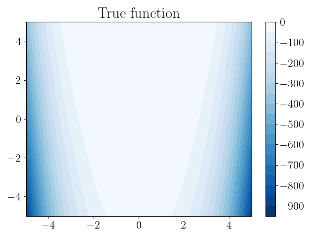
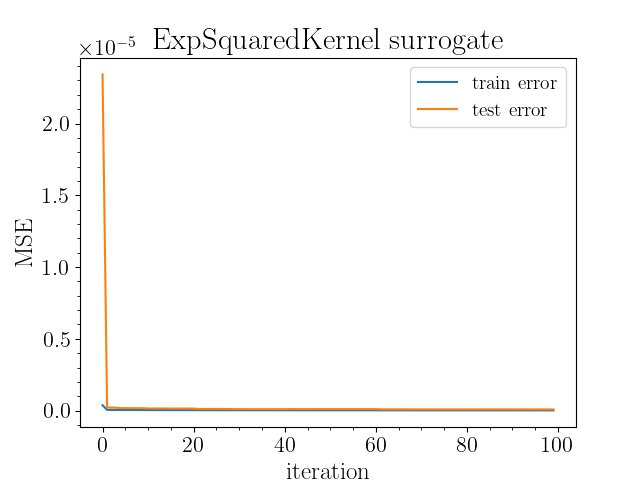
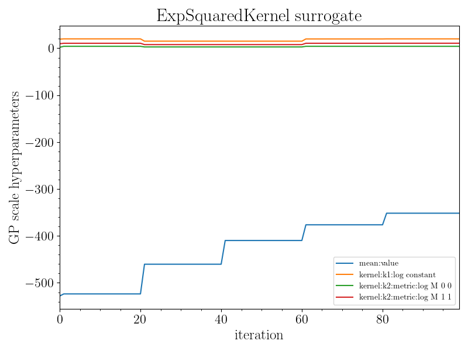
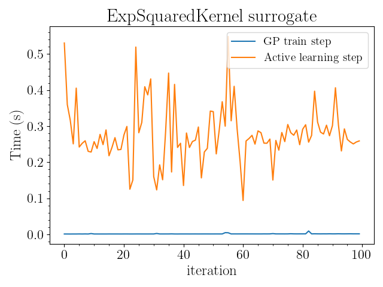
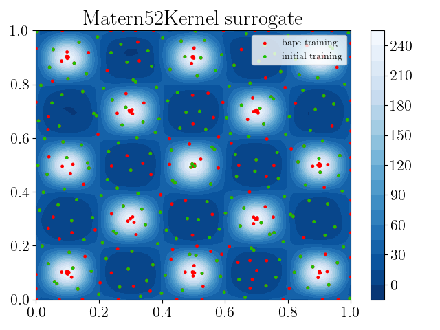
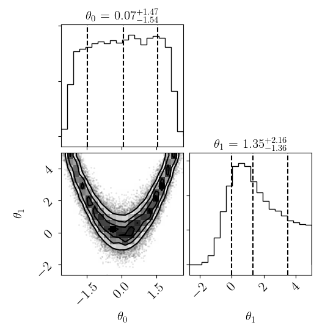
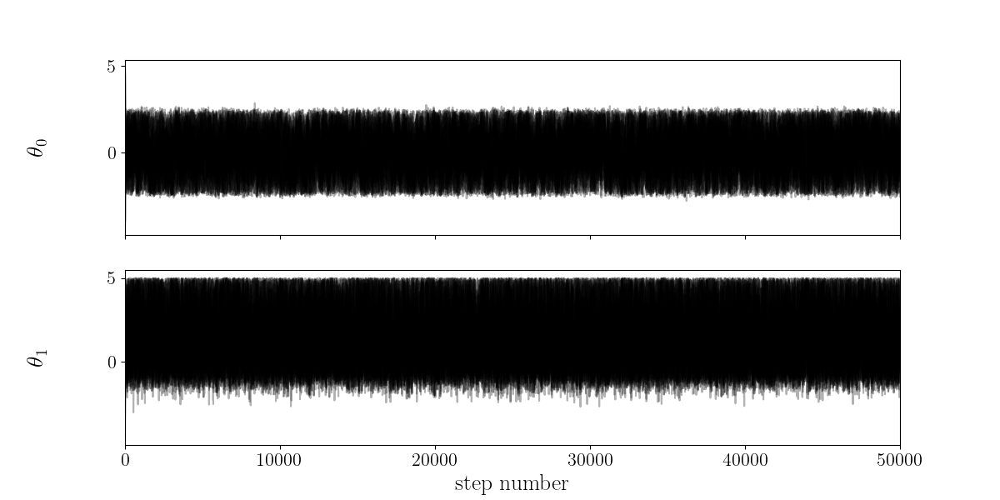
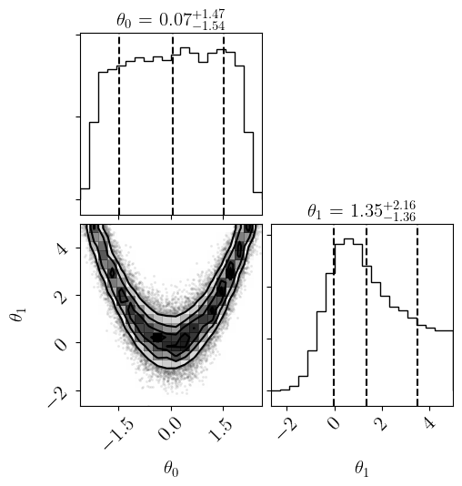

Note
Click here to download the full example code
Rosenbrock¶
Initialize training function¶
from alabi.core import SurrogateModel
from alabi.benchmarks import rosenbrock
import alabi.visualization as vis
kernel = "ExpSquaredKernel"
benchmark = "rosenbrock"
vis.plot_true_fit_2D(eval(benchmark)["fn"], eval(benchmark)["bounds"],
savedir=f"results/{benchmark}")
results/rosenbrock/true_function_2D.png
Initialize GP surrogate model¶
sm = SurrogateModel(fn=eval(benchmark)["fn"],
bounds=eval(benchmark)["bounds"],
savedir=f"results/{benchmark}/{kernel}")
Train GP surrogate model¶
sm.init_samples(ntrain=50, ntest=50)
sm.init_gp(kernel=kernel, fit_amp=True, fit_mean=True, white_noise=None)
sm.active_train(niter=100, algorithm="bape", gp_opt_freq=20)
Out:
Computed 50 function evaluations: 0.0s
Computed 50 function evaluations: 0.0s
Initialized GP with squared exponential kernel.
optimized hyperparameters: (0.5s)
('mean:value', 'kernel:k1:log_constant', 'kernel:k2:metric:log_M_0_0', 'kernel:k2:metric:log_M_1_1')
[-2.50620076 10.31915175 0.17694406 -0.16137303]
Running 100 active learning iterations using bape...
0%| | 0/100 [00:00<?, ?it/s]Utility function optimization infinite fail [0.47193954 0.12479136] inf
optimized hyperparameters: (0.7s)
[-2.48861543 11.13931509 0.06429204 6.52098868]
1%|1 | 1/100 [00:01<02:25, 1.47s/it]
2%|2 | 2/100 [00:01<01:11, 1.37it/s]
3%|3 | 3/100 [00:01<00:44, 2.16it/s]
4%|4 | 4/100 [00:01<00:32, 2.91it/s]
5%|5 | 5/100 [00:02<00:25, 3.67it/s]
6%|6 | 6/100 [00:02<00:21, 4.31it/s]
7%|7 | 7/100 [00:02<00:19, 4.77it/s]
8%|8 | 8/100 [00:02<00:18, 4.87it/s]
9%|9 | 9/100 [00:02<00:17, 5.14it/s]
10%|# | 10/100 [00:03<00:22, 3.93it/s]
11%|#1 | 11/100 [00:03<00:21, 4.05it/s]
12%|#2 | 12/100 [00:03<00:19, 4.59it/s]
13%|#3 | 13/100 [00:03<00:21, 4.10it/s]
14%|#4 | 14/100 [00:04<00:19, 4.31it/s]
15%|#5 | 15/100 [00:04<00:17, 4.84it/s]
16%|#6 | 16/100 [00:04<00:16, 5.18it/s]
17%|#7 | 17/100 [00:04<00:14, 5.64it/s]
18%|#8 | 18/100 [00:04<00:13, 5.96it/s]
19%|#9 | 19/100 [00:04<00:15, 5.31it/s]
20%|## | 20/100 [00:05<00:13, 5.74it/s]optimized hyperparameters: (0.6s)
[-2.06560393 11.73486315 0.21413918 6.83911179]
21%|##1 | 21/100 [00:05<00:28, 2.80it/s]
22%|##2 | 22/100 [00:06<00:25, 3.10it/s]
23%|##3 | 23/100 [00:06<00:21, 3.56it/s]
24%|##4 | 24/100 [00:06<00:18, 4.02it/s]
25%|##5 | 25/100 [00:06<00:16, 4.46it/s]
26%|##6 | 26/100 [00:06<00:18, 4.05it/s]
27%|##7 | 27/100 [00:07<00:18, 4.03it/s]
28%|##8 | 28/100 [00:07<00:15, 4.68it/s]
29%|##9 | 29/100 [00:07<00:14, 4.81it/s]
30%|### | 30/100 [00:07<00:14, 4.89it/s]
31%|###1 | 31/100 [00:07<00:13, 5.22it/s]
32%|###2 | 32/100 [00:08<00:13, 5.01it/s]
33%|###3 | 33/100 [00:08<00:12, 5.18it/s]
34%|###4 | 34/100 [00:08<00:11, 5.55it/s]
35%|###5 | 35/100 [00:08<00:11, 5.69it/s]
36%|###6 | 36/100 [00:08<00:11, 5.59it/s]
37%|###7 | 37/100 [00:08<00:10, 5.78it/s]
38%|###8 | 38/100 [00:09<00:15, 4.00it/s]
39%|###9 | 39/100 [00:09<00:13, 4.42it/s]
40%|#### | 40/100 [00:09<00:13, 4.55it/s]optimized hyperparameters: (0.5s)
[-1.77399524 11.385329 0.13977837 6.66041376]
41%|####1 | 41/100 [00:10<00:22, 2.63it/s]
42%|####2 | 42/100 [00:10<00:19, 2.99it/s]
43%|####3 | 43/100 [00:10<00:16, 3.54it/s]
44%|####4 | 44/100 [00:11<00:14, 3.90it/s]
45%|####5 | 45/100 [00:11<00:12, 4.27it/s]
46%|####6 | 46/100 [00:11<00:11, 4.74it/s]
47%|####6 | 47/100 [00:11<00:10, 5.03it/s]
48%|####8 | 48/100 [00:11<00:09, 5.46it/s]
49%|####9 | 49/100 [00:11<00:09, 5.16it/s]
50%|##### | 50/100 [00:12<00:09, 5.52it/s]
51%|#####1 | 51/100 [00:12<00:09, 5.36it/s]
52%|#####2 | 52/100 [00:12<00:08, 5.61it/s]
53%|#####3 | 53/100 [00:12<00:07, 6.01it/s]
54%|#####4 | 54/100 [00:12<00:07, 5.85it/s]
55%|#####5 | 55/100 [00:12<00:07, 5.82it/s]
56%|#####6 | 56/100 [00:13<00:06, 6.37it/s]
57%|#####6 | 57/100 [00:13<00:06, 6.23it/s]
58%|#####8 | 58/100 [00:13<00:06, 6.13it/s]
59%|#####8 | 59/100 [00:13<00:07, 5.72it/s]
60%|###### | 60/100 [00:13<00:06, 5.73it/s]optimized hyperparameters: (1.1s)
[-1.58166791 12.22343785 0.34108761 7.08127745]
61%|######1 | 61/100 [00:15<00:19, 2.01it/s]
62%|######2 | 62/100 [00:15<00:15, 2.38it/s]
63%|######3 | 63/100 [00:15<00:12, 2.87it/s]
64%|######4 | 64/100 [00:15<00:11, 3.16it/s]
65%|######5 | 65/100 [00:16<00:12, 2.84it/s]
66%|######6 | 66/100 [00:16<00:12, 2.67it/s]
67%|######7 | 67/100 [00:16<00:12, 2.57it/s]
68%|######8 | 68/100 [00:17<00:12, 2.53it/s]
69%|######9 | 69/100 [00:17<00:10, 2.93it/s]
70%|####### | 70/100 [00:17<00:08, 3.42it/s]
71%|#######1 | 71/100 [00:18<00:09, 2.98it/s]
72%|#######2 | 72/100 [00:18<00:08, 3.29it/s]
73%|#######3 | 73/100 [00:18<00:06, 3.93it/s]
74%|#######4 | 74/100 [00:18<00:06, 3.90it/s]
75%|#######5 | 75/100 [00:19<00:07, 3.13it/s]
76%|#######6 | 76/100 [00:20<00:10, 2.24it/s]
77%|#######7 | 77/100 [00:20<00:11, 2.08it/s]
78%|#######8 | 78/100 [00:20<00:09, 2.25it/s]
79%|#######9 | 79/100 [00:21<00:07, 2.79it/s]
80%|######## | 80/100 [00:21<00:09, 2.18it/s]optimized hyperparameters: (0.5s)
[-1.42855551 11.97483222 0.2838911 6.95360185]
81%|########1 | 81/100 [00:22<00:09, 1.92it/s]
82%|########2 | 82/100 [00:22<00:07, 2.41it/s]
83%|########2 | 83/100 [00:22<00:06, 2.80it/s]
84%|########4 | 84/100 [00:23<00:04, 3.30it/s]
85%|########5 | 85/100 [00:23<00:04, 3.73it/s]
86%|########6 | 86/100 [00:23<00:04, 2.98it/s]
87%|########7 | 87/100 [00:23<00:03, 3.47it/s]
88%|########8 | 88/100 [00:24<00:03, 3.61it/s]
89%|########9 | 89/100 [00:24<00:02, 4.03it/s]
90%|######### | 90/100 [00:25<00:03, 2.51it/s]
91%|#########1| 91/100 [00:25<00:03, 2.87it/s]
92%|#########2| 92/100 [00:25<00:02, 3.30it/s]
93%|#########3| 93/100 [00:25<00:01, 3.87it/s]
94%|#########3| 94/100 [00:25<00:01, 3.61it/s]
95%|#########5| 95/100 [00:26<00:01, 3.77it/s]
96%|#########6| 96/100 [00:26<00:00, 4.16it/s]
97%|#########7| 97/100 [00:26<00:00, 4.51it/s]
98%|#########8| 98/100 [00:26<00:00, 4.84it/s]
99%|#########9| 99/100 [00:27<00:00, 4.53it/s]
100%|##########| 100/100 [00:27<00:00, 4.40it/s]
100%|##########| 100/100 [00:27<00:00, 3.67it/s]
Caching model to results/rosenbrock/ExpSquaredKernel/surrogate_model...
Plot GP diagnostics¶
sm.plot(plots=["gp_error", "gp_hyperparam", "gp_timing", "gp_fit_2D"])
Out:
Plotting gp error...
Plotting gp hyperparameters...
Plotting gp timing...
Plotting gp fit 2D...
results/rosenbrock/ExpSquaredKernel/gp_error_vs_iteration.png
results/rosenbrock/ExpSquaredKernel/gp_hyperparameters_vs_iteration.png
results/rosenbrock/ExpSquaredKernel/gp_train_time_vs_iteration.png
results/rosenbrock/ExpSquaredKernel/gp_fit_2D.png
Run MCMC using emcee¶
sm.run_emcee(nwalkers=20, nsteps=5e4, opt_init=False)
sm.plot(plots=["emcee_all"])
- 
- 
Out:
No lnprior specified. Defaulting to uniform prior with bounds [(-5, 5), (-5, 5)]
Running emcee with 20 walkers for 50000.0 steps...
0%| | 0/50000 [00:00<?, ?it/s]
0%| | 14/50000 [00:00<05:57, 139.70it/s]
0%| | 30/50000 [00:00<05:36, 148.42it/s]
0%| | 48/50000 [00:00<05:11, 160.43it/s]
0%| | 66/50000 [00:00<05:02, 165.00it/s]
0%| | 83/50000 [00:00<05:20, 155.72it/s]
0%| | 99/50000 [00:00<05:18, 156.51it/s]
0%| | 115/50000 [00:00<05:22, 154.52it/s]
0%| | 132/50000 [00:00<05:14, 158.77it/s]
0%| | 150/50000 [00:00<05:04, 163.73it/s]
0%| | 168/50000 [00:01<04:58, 166.69it/s]
0%| | 186/50000 [00:01<04:54, 169.38it/s]
0%| | 204/50000 [00:01<04:50, 171.70it/s]
0%| | 222/50000 [00:01<04:46, 173.46it/s]
0%| | 240/50000 [00:01<04:52, 170.24it/s]
1%| | 258/50000 [00:01<04:48, 172.13it/s]
1%| | 276/50000 [00:01<04:45, 173.88it/s]
1%| | 294/50000 [00:01<04:50, 170.87it/s]
1%| | 312/50000 [00:01<05:06, 162.08it/s]
1%| | 329/50000 [00:02<05:04, 163.16it/s]
1%| | 347/50000 [00:02<04:59, 165.96it/s]
1%| | 365/50000 [00:02<04:52, 169.53it/s]
1%| | 383/50000 [00:02<04:49, 171.66it/s]
1%| | 401/50000 [00:02<04:44, 174.09it/s]
1%| | 419/50000 [00:02<04:49, 170.98it/s]
1%| | 437/50000 [00:02<04:46, 172.89it/s]
1%| | 455/50000 [00:02<04:44, 174.15it/s]
1%| | 473/50000 [00:02<04:42, 175.21it/s]
1%| | 491/50000 [00:02<04:53, 168.75it/s]
1%|1 | 508/50000 [00:03<05:21, 153.84it/s]
1%|1 | 524/50000 [00:03<05:28, 150.56it/s]
1%|1 | 540/50000 [00:03<05:46, 142.73it/s]
1%|1 | 555/50000 [00:03<06:10, 133.56it/s]
1%|1 | 570/50000 [00:03<06:05, 135.40it/s]
1%|1 | 587/50000 [00:03<05:44, 143.46it/s]
1%|1 | 605/50000 [00:03<05:25, 151.83it/s]
1%|1 | 621/50000 [00:03<05:49, 141.18it/s]
1%|1 | 637/50000 [00:03<05:39, 145.58it/s]
1%|1 | 655/50000 [00:04<05:20, 154.14it/s]
1%|1 | 673/50000 [00:04<05:08, 159.92it/s]
1%|1 | 690/50000 [00:04<05:04, 161.89it/s]
1%|1 | 707/50000 [00:04<05:36, 146.34it/s]
1%|1 | 724/50000 [00:04<05:26, 150.76it/s]
1%|1 | 740/50000 [00:04<05:26, 150.93it/s]
2%|1 | 756/50000 [00:04<05:30, 149.21it/s]
2%|1 | 772/50000 [00:04<05:34, 146.95it/s]
2%|1 | 787/50000 [00:05<06:15, 131.17it/s]
2%|1 | 801/50000 [00:05<06:52, 119.36it/s]
2%|1 | 814/50000 [00:05<07:35, 107.95it/s]
2%|1 | 829/50000 [00:05<06:59, 117.09it/s]
2%|1 | 846/50000 [00:05<06:19, 129.57it/s]
2%|1 | 863/50000 [00:05<05:53, 138.82it/s]
2%|1 | 879/50000 [00:05<05:44, 142.48it/s]
2%|1 | 896/50000 [00:05<05:31, 148.00it/s]
2%|1 | 914/50000 [00:05<05:15, 155.61it/s]
2%|1 | 930/50000 [00:06<05:19, 153.77it/s]
2%|1 | 947/50000 [00:06<05:12, 156.95it/s]
2%|1 | 964/50000 [00:06<05:07, 159.27it/s]
2%|1 | 981/50000 [00:06<05:05, 160.63it/s]
2%|1 | 998/50000 [00:06<05:03, 161.22it/s]
2%|2 | 1016/50000 [00:06<04:56, 165.28it/s]
2%|2 | 1033/50000 [00:06<05:10, 157.94it/s]
2%|2 | 1049/50000 [00:06<05:12, 156.55it/s]
2%|2 | 1067/50000 [00:06<05:02, 161.91it/s]
2%|2 | 1085/50000 [00:06<04:54, 166.31it/s]
2%|2 | 1102/50000 [00:07<04:55, 165.72it/s]
2%|2 | 1119/50000 [00:07<05:27, 149.08it/s]
2%|2 | 1135/50000 [00:07<05:55, 137.29it/s]
2%|2 | 1150/50000 [00:07<06:08, 132.74it/s]
2%|2 | 1164/50000 [00:07<06:08, 132.57it/s]
2%|2 | 1180/50000 [00:07<05:51, 138.90it/s]
2%|2 | 1196/50000 [00:07<05:37, 144.39it/s]
2%|2 | 1213/50000 [00:07<05:22, 151.51it/s]
2%|2 | 1231/50000 [00:08<05:05, 159.65it/s]
2%|2 | 1249/50000 [00:08<04:55, 165.17it/s]
3%|2 | 1267/50000 [00:08<04:48, 169.11it/s]
3%|2 | 1285/50000 [00:08<04:45, 170.58it/s]
3%|2 | 1303/50000 [00:08<04:45, 170.51it/s]
3%|2 | 1321/50000 [00:08<04:48, 168.92it/s]
3%|2 | 1339/50000 [00:08<04:43, 171.51it/s]
3%|2 | 1357/50000 [00:08<04:42, 171.93it/s]
3%|2 | 1375/50000 [00:08<04:58, 162.91it/s]
3%|2 | 1392/50000 [00:08<04:59, 162.53it/s]
3%|2 | 1410/50000 [00:09<04:54, 164.98it/s]
3%|2 | 1427/50000 [00:09<04:53, 165.44it/s]
3%|2 | 1444/50000 [00:09<04:55, 164.38it/s]
3%|2 | 1461/50000 [00:09<05:01, 161.04it/s]
3%|2 | 1478/50000 [00:09<05:04, 159.11it/s]
3%|2 | 1495/50000 [00:09<05:00, 161.62it/s]
3%|3 | 1512/50000 [00:09<05:30, 146.54it/s]
3%|3 | 1527/50000 [00:09<05:59, 134.94it/s]
3%|3 | 1541/50000 [00:10<07:01, 114.85it/s]
3%|3 | 1554/50000 [00:10<07:18, 110.37it/s]
3%|3 | 1566/50000 [00:10<07:57, 101.49it/s]
3%|3 | 1577/50000 [00:10<09:47, 82.43it/s]
3%|3 | 1586/50000 [00:10<10:49, 74.49it/s]
3%|3 | 1594/50000 [00:10<11:44, 68.68it/s]
3%|3 | 1602/50000 [00:10<12:26, 64.86it/s]
3%|3 | 1609/50000 [00:11<12:17, 65.61it/s]
3%|3 | 1619/50000 [00:11<10:56, 73.69it/s]
3%|3 | 1631/50000 [00:11<09:38, 83.58it/s]
3%|3 | 1640/50000 [00:11<09:33, 84.30it/s]
3%|3 | 1649/50000 [00:11<10:02, 80.31it/s]
3%|3 | 1658/50000 [00:11<10:04, 79.97it/s]
3%|3 | 1668/50000 [00:11<09:39, 83.37it/s]
3%|3 | 1681/50000 [00:11<08:30, 94.71it/s]
3%|3 | 1692/50000 [00:11<08:12, 98.18it/s]
3%|3 | 1705/50000 [00:12<07:35, 105.94it/s]
3%|3 | 1718/50000 [00:12<07:10, 112.21it/s]
3%|3 | 1732/50000 [00:12<06:48, 118.07it/s]
3%|3 | 1744/50000 [00:12<06:54, 116.36it/s]
4%|3 | 1756/50000 [00:12<06:51, 117.22it/s]
4%|3 | 1772/50000 [00:12<06:14, 128.90it/s]
4%|3 | 1789/50000 [00:12<05:47, 138.88it/s]
4%|3 | 1806/50000 [00:12<05:29, 146.11it/s]
4%|3 | 1821/50000 [00:12<05:40, 141.45it/s]
4%|3 | 1836/50000 [00:13<05:54, 135.94it/s]
4%|3 | 1853/50000 [00:13<05:35, 143.39it/s]
4%|3 | 1870/50000 [00:13<05:23, 148.61it/s]
4%|3 | 1887/50000 [00:13<05:14, 152.83it/s]
4%|3 | 1903/50000 [00:13<05:23, 148.52it/s]
4%|3 | 1919/50000 [00:13<05:20, 150.09it/s]
4%|3 | 1935/50000 [00:13<05:23, 148.39it/s]
4%|3 | 1951/50000 [00:13<05:18, 151.02it/s]
4%|3 | 1967/50000 [00:13<05:15, 152.13it/s]
4%|3 | 1983/50000 [00:13<05:31, 144.90it/s]
4%|3 | 1998/50000 [00:14<05:34, 143.57it/s]
4%|4 | 2013/50000 [00:14<05:36, 142.46it/s]
4%|4 | 2028/50000 [00:14<05:37, 142.32it/s]
4%|4 | 2043/50000 [00:14<06:37, 120.52it/s]
4%|4 | 2056/50000 [00:14<07:22, 108.39it/s]
4%|4 | 2069/50000 [00:14<07:06, 112.50it/s]
4%|4 | 2084/50000 [00:14<06:39, 119.94it/s]
4%|4 | 2097/50000 [00:14<06:32, 122.20it/s]
4%|4 | 2110/50000 [00:15<06:32, 121.90it/s]
4%|4 | 2126/50000 [00:15<06:06, 130.56it/s]
4%|4 | 2142/50000 [00:15<05:49, 136.91it/s]
4%|4 | 2156/50000 [00:15<06:06, 130.66it/s]
4%|4 | 2170/50000 [00:15<06:26, 123.64it/s]
4%|4 | 2186/50000 [00:15<05:58, 133.21it/s]
4%|4 | 2203/50000 [00:15<05:36, 142.20it/s]
4%|4 | 2220/50000 [00:15<05:21, 148.42it/s]
4%|4 | 2237/50000 [00:15<05:11, 153.52it/s]
5%|4 | 2254/50000 [00:16<05:02, 157.70it/s]
5%|4 | 2271/50000 [00:16<04:58, 160.09it/s]
5%|4 | 2288/50000 [00:16<05:03, 157.36it/s]
5%|4 | 2304/50000 [00:16<05:08, 154.65it/s]
5%|4 | 2320/50000 [00:16<05:30, 144.36it/s]
5%|4 | 2335/50000 [00:16<05:50, 136.09it/s]
5%|4 | 2349/50000 [00:16<05:59, 132.52it/s]
5%|4 | 2363/50000 [00:16<06:11, 128.25it/s]
5%|4 | 2377/50000 [00:16<06:05, 130.17it/s]
5%|4 | 2394/50000 [00:17<05:42, 138.90it/s]
5%|4 | 2411/50000 [00:17<05:25, 146.10it/s]
5%|4 | 2428/50000 [00:17<05:12, 152.05it/s]
5%|4 | 2444/50000 [00:17<05:25, 145.98it/s]
5%|4 | 2459/50000 [00:17<05:55, 133.90it/s]
5%|4 | 2473/50000 [00:17<06:16, 126.13it/s]
5%|4 | 2486/50000 [00:17<06:27, 122.59it/s]
5%|4 | 2499/50000 [00:17<06:46, 116.81it/s]
5%|5 | 2511/50000 [00:17<06:48, 116.13it/s]
5%|5 | 2527/50000 [00:18<06:15, 126.34it/s]
5%|5 | 2540/50000 [00:18<06:24, 123.34it/s]
5%|5 | 2553/50000 [00:18<06:24, 123.34it/s]
5%|5 | 2570/50000 [00:18<05:50, 135.24it/s]
5%|5 | 2584/50000 [00:18<05:58, 132.26it/s]
5%|5 | 2600/50000 [00:18<05:42, 138.49it/s]
5%|5 | 2616/50000 [00:18<05:29, 143.92it/s]
5%|5 | 2633/50000 [00:18<05:15, 150.34it/s]
5%|5 | 2650/50000 [00:18<05:08, 153.57it/s]
5%|5 | 2667/50000 [00:19<05:01, 157.18it/s]
5%|5 | 2684/50000 [00:19<04:55, 159.94it/s]
5%|5 | 2701/50000 [00:19<04:51, 162.47it/s]
5%|5 | 2718/50000 [00:19<04:47, 164.32it/s]
5%|5 | 2735/50000 [00:19<04:54, 160.39it/s]
6%|5 | 2752/50000 [00:19<04:53, 160.78it/s]
6%|5 | 2769/50000 [00:19<04:51, 162.21it/s]
6%|5 | 2786/50000 [00:19<04:47, 164.31it/s]
6%|5 | 2803/50000 [00:19<04:44, 165.89it/s]
6%|5 | 2821/50000 [00:19<04:41, 167.40it/s]
6%|5 | 2839/50000 [00:20<04:38, 169.07it/s]
6%|5 | 2857/50000 [00:20<04:38, 169.40it/s]
6%|5 | 2875/50000 [00:20<04:37, 169.97it/s]
6%|5 | 2892/50000 [00:20<04:45, 164.96it/s]
6%|5 | 2909/50000 [00:20<04:44, 165.80it/s]
6%|5 | 2926/50000 [00:20<04:42, 166.75it/s]
6%|5 | 2943/50000 [00:20<04:40, 167.62it/s]
6%|5 | 2961/50000 [00:20<04:39, 168.12it/s]
6%|5 | 2978/50000 [00:20<04:39, 168.08it/s]
6%|5 | 2995/50000 [00:20<04:39, 167.89it/s]
6%|6 | 3013/50000 [00:21<04:37, 169.48it/s]
6%|6 | 3031/50000 [00:21<04:35, 170.54it/s]
6%|6 | 3049/50000 [00:21<04:32, 172.33it/s]
6%|6 | 3067/50000 [00:21<04:31, 172.60it/s]
6%|6 | 3085/50000 [00:21<04:38, 168.43it/s]
6%|6 | 3103/50000 [00:21<04:37, 169.30it/s]
6%|6 | 3121/50000 [00:21<04:35, 170.32it/s]
6%|6 | 3139/50000 [00:21<04:34, 170.87it/s]
6%|6 | 3157/50000 [00:21<04:31, 172.49it/s]
6%|6 | 3175/50000 [00:22<04:31, 172.31it/s]
6%|6 | 3193/50000 [00:22<04:31, 172.56it/s]
6%|6 | 3211/50000 [00:22<04:30, 173.06it/s]
6%|6 | 3229/50000 [00:22<04:29, 173.60it/s]
6%|6 | 3247/50000 [00:22<04:45, 163.77it/s]
7%|6 | 3264/50000 [00:22<04:43, 164.92it/s]
7%|6 | 3282/50000 [00:22<04:40, 166.57it/s]
7%|6 | 3300/50000 [00:22<04:37, 168.13it/s]
7%|6 | 3318/50000 [00:22<04:35, 169.49it/s]
7%|6 | 3336/50000 [00:22<04:34, 170.25it/s]
7%|6 | 3354/50000 [00:23<04:33, 170.66it/s]
7%|6 | 3372/50000 [00:23<04:32, 171.00it/s]
7%|6 | 3390/50000 [00:23<04:32, 171.30it/s]
7%|6 | 3408/50000 [00:23<04:40, 166.12it/s]
7%|6 | 3425/50000 [00:23<04:46, 162.64it/s]
7%|6 | 3442/50000 [00:23<05:01, 154.53it/s]
7%|6 | 3459/50000 [00:23<04:57, 156.26it/s]
7%|6 | 3475/50000 [00:23<04:59, 155.56it/s]
7%|6 | 3492/50000 [00:23<04:56, 156.93it/s]
7%|7 | 3508/50000 [00:24<04:59, 155.16it/s]
7%|7 | 3525/50000 [00:24<04:55, 157.03it/s]
7%|7 | 3542/50000 [00:24<04:54, 158.02it/s]
7%|7 | 3558/50000 [00:24<05:00, 154.77it/s]
7%|7 | 3574/50000 [00:24<05:09, 150.09it/s]
7%|7 | 3591/50000 [00:24<04:59, 155.13it/s]
7%|7 | 3608/50000 [00:24<04:55, 157.24it/s]
7%|7 | 3624/50000 [00:24<04:53, 157.92it/s]
7%|7 | 3642/50000 [00:24<04:46, 162.07it/s]
7%|7 | 3660/50000 [00:25<04:41, 164.70it/s]
7%|7 | 3678/50000 [00:25<04:37, 166.84it/s]
7%|7 | 3695/50000 [00:25<04:36, 167.25it/s]
7%|7 | 3712/50000 [00:25<04:41, 164.35it/s]
7%|7 | 3729/50000 [00:25<04:44, 162.89it/s]
7%|7 | 3746/50000 [00:25<04:50, 159.26it/s]
8%|7 | 3763/50000 [00:25<04:48, 160.49it/s]
8%|7 | 3780/50000 [00:25<04:43, 163.02it/s]
8%|7 | 3798/50000 [00:25<04:39, 165.39it/s]
8%|7 | 3815/50000 [00:25<04:37, 166.15it/s]
8%|7 | 3832/50000 [00:26<04:36, 167.22it/s]
8%|7 | 3850/50000 [00:26<04:32, 169.45it/s]
8%|7 | 3868/50000 [00:26<04:29, 170.98it/s]
8%|7 | 3886/50000 [00:26<04:28, 171.49it/s]
8%|7 | 3904/50000 [00:26<04:44, 162.22it/s]
8%|7 | 3921/50000 [00:26<05:09, 148.81it/s]
8%|7 | 3937/50000 [00:26<05:43, 134.04it/s]
8%|7 | 3951/50000 [00:26<07:04, 108.48it/s]
8%|7 | 3963/50000 [00:27<07:18, 105.04it/s]
8%|7 | 3975/50000 [00:27<07:22, 104.00it/s]
8%|7 | 3987/50000 [00:27<07:11, 106.72it/s]
8%|7 | 3999/50000 [00:27<07:46, 98.51it/s]
8%|8 | 4010/50000 [00:27<09:25, 81.30it/s]
8%|8 | 4019/50000 [00:27<11:05, 69.13it/s]
8%|8 | 4027/50000 [00:28<11:43, 65.38it/s]
8%|8 | 4034/50000 [00:28<12:13, 62.64it/s]
8%|8 | 4041/50000 [00:28<12:22, 61.91it/s]
8%|8 | 4052/50000 [00:28<10:42, 71.55it/s]
8%|8 | 4060/50000 [00:28<10:27, 73.19it/s]
8%|8 | 4070/50000 [00:28<09:53, 77.40it/s]
8%|8 | 4078/50000 [00:28<10:27, 73.23it/s]
8%|8 | 4086/50000 [00:28<10:43, 71.36it/s]
8%|8 | 4094/50000 [00:28<10:31, 72.71it/s]
8%|8 | 4102/50000 [00:29<10:57, 69.85it/s]
8%|8 | 4110/50000 [00:29<11:09, 68.57it/s]
8%|8 | 4119/50000 [00:29<10:35, 72.17it/s]
8%|8 | 4130/50000 [00:29<09:26, 80.97it/s]
8%|8 | 4141/50000 [00:29<08:36, 88.82it/s]
8%|8 | 4157/50000 [00:29<07:03, 108.22it/s]
8%|8 | 4172/50000 [00:29<06:25, 118.73it/s]
8%|8 | 4188/50000 [00:29<06:00, 127.05it/s]
8%|8 | 4204/50000 [00:29<05:40, 134.47it/s]
8%|8 | 4221/50000 [00:30<05:18, 143.75it/s]
8%|8 | 4239/50000 [00:30<05:01, 151.91it/s]
9%|8 | 4256/50000 [00:30<04:52, 156.29it/s]
9%|8 | 4274/50000 [00:30<04:44, 160.77it/s]
9%|8 | 4291/50000 [00:30<04:45, 159.93it/s]
9%|8 | 4308/50000 [00:30<04:41, 162.47it/s]
9%|8 | 4325/50000 [00:30<04:37, 164.47it/s]
9%|8 | 4342/50000 [00:30<04:35, 165.75it/s]
9%|8 | 4359/50000 [00:30<04:34, 166.54it/s]
9%|8 | 4376/50000 [00:30<04:32, 167.19it/s]
9%|8 | 4394/50000 [00:31<04:30, 168.42it/s]
9%|8 | 4411/50000 [00:31<04:30, 168.50it/s]
9%|8 | 4429/50000 [00:31<04:29, 169.20it/s]
9%|8 | 4446/50000 [00:31<04:35, 165.24it/s]
9%|8 | 4463/50000 [00:31<04:40, 162.13it/s]
9%|8 | 4480/50000 [00:31<04:37, 163.99it/s]
9%|8 | 4497/50000 [00:31<04:35, 165.45it/s]
9%|9 | 4514/50000 [00:31<04:33, 166.24it/s]
9%|9 | 4532/50000 [00:31<04:31, 167.62it/s]
9%|9 | 4550/50000 [00:32<04:28, 169.17it/s]
9%|9 | 4568/50000 [00:32<04:27, 169.71it/s]
9%|9 | 4585/50000 [00:32<04:27, 169.50it/s]
9%|9 | 4603/50000 [00:32<04:26, 170.10it/s]
9%|9 | 4621/50000 [00:32<04:31, 166.97it/s]
9%|9 | 4638/50000 [00:32<04:32, 166.49it/s]
9%|9 | 4655/50000 [00:32<04:32, 166.53it/s]
9%|9 | 4673/50000 [00:32<04:29, 168.30it/s]
9%|9 | 4691/50000 [00:32<04:28, 169.02it/s]
9%|9 | 4709/50000 [00:32<04:26, 170.06it/s]
9%|9 | 4727/50000 [00:33<04:24, 171.04it/s]
9%|9 | 4745/50000 [00:33<04:24, 170.96it/s]
10%|9 | 4763/50000 [00:33<04:24, 171.34it/s]
10%|9 | 4781/50000 [00:33<04:48, 156.84it/s]
10%|9 | 4797/50000 [00:33<05:24, 139.32it/s]
10%|9 | 4812/50000 [00:33<05:21, 140.77it/s]
10%|9 | 4828/50000 [00:33<05:12, 144.48it/s]
10%|9 | 4843/50000 [00:33<05:32, 135.72it/s]
10%|9 | 4857/50000 [00:33<05:34, 135.10it/s]
10%|9 | 4872/50000 [00:34<05:24, 139.05it/s]
10%|9 | 4889/50000 [00:34<05:07, 146.60it/s]
10%|9 | 4906/50000 [00:34<04:54, 152.94it/s]
10%|9 | 4923/50000 [00:34<04:46, 157.23it/s]
10%|9 | 4939/50000 [00:34<04:45, 158.01it/s]
10%|9 | 4955/50000 [00:34<04:47, 156.92it/s]
10%|9 | 4971/50000 [00:34<05:02, 148.97it/s]
10%|9 | 4987/50000 [00:34<05:12, 144.15it/s]
10%|# | 5004/50000 [00:34<04:58, 150.79it/s]
10%|# | 5021/50000 [00:35<04:48, 156.09it/s]
10%|# | 5038/50000 [00:35<04:41, 159.87it/s]
10%|# | 5056/50000 [00:35<04:35, 163.00it/s]
10%|# | 5073/50000 [00:35<04:53, 152.90it/s]
10%|# | 5089/50000 [00:35<05:40, 132.04it/s]
10%|# | 5103/50000 [00:35<06:23, 117.10it/s]
10%|# | 5116/50000 [00:35<06:39, 112.43it/s]
10%|# | 5129/50000 [00:35<06:24, 116.69it/s]
10%|# | 5144/50000 [00:36<05:58, 124.97it/s]
10%|# | 5160/50000 [00:36<05:34, 134.25it/s]
10%|# | 5177/50000 [00:36<05:12, 143.30it/s]
10%|# | 5194/50000 [00:36<04:59, 149.70it/s]
10%|# | 5210/50000 [00:36<04:54, 152.19it/s]
10%|# | 5226/50000 [00:36<04:51, 153.48it/s]
10%|# | 5243/50000 [00:36<04:44, 157.06it/s]
11%|# | 5260/50000 [00:36<04:39, 160.33it/s]
11%|# | 5277/50000 [00:36<05:17, 140.76it/s]
11%|# | 5292/50000 [00:37<05:49, 127.81it/s]
11%|# | 5306/50000 [00:37<06:04, 122.73it/s]
11%|# | 5323/50000 [00:37<05:36, 132.90it/s]
11%|# | 5340/50000 [00:37<05:14, 142.21it/s]
11%|# | 5355/50000 [00:37<05:10, 143.82it/s]
11%|# | 5372/50000 [00:37<04:56, 150.34it/s]
11%|# | 5390/50000 [00:37<04:45, 156.35it/s]
11%|# | 5408/50000 [00:37<04:36, 161.13it/s]
11%|# | 5426/50000 [00:37<04:30, 164.77it/s]
11%|# | 5444/50000 [00:37<04:26, 167.17it/s]
11%|# | 5461/50000 [00:38<04:36, 161.23it/s]
11%|# | 5478/50000 [00:38<04:57, 149.85it/s]
11%|# | 5494/50000 [00:38<05:00, 148.35it/s]
11%|#1 | 5510/50000 [00:38<04:53, 151.45it/s]
11%|#1 | 5526/50000 [00:38<04:50, 153.26it/s]
11%|#1 | 5542/50000 [00:38<05:36, 132.23it/s]
11%|#1 | 5556/50000 [00:38<05:58, 124.05it/s]
11%|#1 | 5570/50000 [00:38<05:51, 126.41it/s]
11%|#1 | 5587/50000 [00:39<05:25, 136.34it/s]
11%|#1 | 5604/50000 [00:39<05:07, 144.27it/s]
11%|#1 | 5620/50000 [00:39<05:00, 147.56it/s]
11%|#1 | 5637/50000 [00:39<04:53, 151.02it/s]
11%|#1 | 5653/50000 [00:39<05:32, 133.41it/s]
11%|#1 | 5667/50000 [00:39<06:18, 116.99it/s]
11%|#1 | 5680/50000 [00:39<06:29, 113.70it/s]
11%|#1 | 5692/50000 [00:39<06:45, 109.33it/s]
11%|#1 | 5704/50000 [00:40<07:06, 103.75it/s]
11%|#1 | 5716/50000 [00:40<06:59, 105.51it/s]
11%|#1 | 5728/50000 [00:40<06:52, 107.39it/s]
11%|#1 | 5739/50000 [00:40<07:10, 102.91it/s]
12%|#1 | 5750/50000 [00:40<07:05, 103.89it/s]
12%|#1 | 5767/50000 [00:40<06:05, 120.86it/s]
12%|#1 | 5782/50000 [00:40<05:45, 128.10it/s]
12%|#1 | 5797/50000 [00:40<05:37, 130.80it/s]
12%|#1 | 5811/50000 [00:40<06:15, 117.59it/s]
12%|#1 | 5824/50000 [00:41<06:12, 118.68it/s]
12%|#1 | 5838/50000 [00:41<05:57, 123.41it/s]
12%|#1 | 5855/50000 [00:41<05:26, 135.37it/s]
12%|#1 | 5871/50000 [00:41<05:13, 140.68it/s]
12%|#1 | 5886/50000 [00:41<05:45, 127.66it/s]
12%|#1 | 5900/50000 [00:41<05:45, 127.57it/s]
12%|#1 | 5916/50000 [00:41<05:24, 135.81it/s]
12%|#1 | 5933/50000 [00:41<05:05, 144.12it/s]
12%|#1 | 5948/50000 [00:41<05:02, 145.61it/s]
12%|#1 | 5963/50000 [00:42<05:37, 130.62it/s]
12%|#1 | 5977/50000 [00:42<05:33, 132.07it/s]
12%|#1 | 5994/50000 [00:42<05:11, 141.08it/s]
12%|#2 | 6009/50000 [00:42<05:16, 138.95it/s]
12%|#2 | 6024/50000 [00:42<05:47, 126.37it/s]
12%|#2 | 6038/50000 [00:42<05:39, 129.67it/s]
12%|#2 | 6055/50000 [00:42<05:14, 139.91it/s]
12%|#2 | 6070/50000 [00:42<05:19, 137.60it/s]
12%|#2 | 6084/50000 [00:42<05:37, 129.93it/s]
12%|#2 | 6099/50000 [00:43<05:27, 133.89it/s]
12%|#2 | 6115/50000 [00:43<05:11, 141.01it/s]
12%|#2 | 6132/50000 [00:43<05:00, 146.00it/s]
12%|#2 | 6147/50000 [00:43<05:41, 128.46it/s]
12%|#2 | 6162/50000 [00:43<05:27, 133.89it/s]
12%|#2 | 6178/50000 [00:43<05:12, 140.23it/s]
12%|#2 | 6194/50000 [00:43<05:05, 143.19it/s]
12%|#2 | 6209/50000 [00:43<05:19, 136.96it/s]
12%|#2 | 6225/50000 [00:43<05:06, 142.99it/s]
12%|#2 | 6242/50000 [00:44<04:54, 148.80it/s]
13%|#2 | 6258/50000 [00:44<04:57, 146.85it/s]
13%|#2 | 6273/50000 [00:44<05:08, 141.56it/s]
13%|#2 | 6290/50000 [00:44<04:52, 149.19it/s]
13%|#2 | 6306/50000 [00:44<04:48, 151.70it/s]
13%|#2 | 6322/50000 [00:44<04:48, 151.41it/s]
13%|#2 | 6338/50000 [00:44<05:22, 135.42it/s]
13%|#2 | 6353/50000 [00:44<05:18, 137.18it/s]
13%|#2 | 6370/50000 [00:44<05:00, 144.97it/s]
13%|#2 | 6385/50000 [00:45<05:01, 144.86it/s]
13%|#2 | 6400/50000 [00:45<05:26, 133.50it/s]
13%|#2 | 6416/50000 [00:45<05:10, 140.27it/s]
13%|#2 | 6433/50000 [00:45<04:55, 147.22it/s]
13%|#2 | 6449/50000 [00:45<04:51, 149.20it/s]
13%|#2 | 6466/50000 [00:45<04:42, 154.11it/s]
13%|#2 | 6483/50000 [00:45<04:36, 157.37it/s]
13%|#3 | 6500/50000 [00:45<04:31, 160.32it/s]
13%|#3 | 6517/50000 [00:45<04:42, 153.78it/s]
13%|#3 | 6533/50000 [00:46<05:12, 139.17it/s]
13%|#3 | 6548/50000 [00:46<05:19, 135.94it/s]
13%|#3 | 6564/50000 [00:46<05:06, 141.70it/s]
13%|#3 | 6579/50000 [00:46<05:15, 137.54it/s]
13%|#3 | 6593/50000 [00:46<05:51, 123.64it/s]
13%|#3 | 6606/50000 [00:46<06:07, 118.08it/s]
13%|#3 | 6623/50000 [00:46<05:34, 129.51it/s]
13%|#3 | 6640/50000 [00:46<05:11, 139.38it/s]
13%|#3 | 6657/50000 [00:46<04:54, 147.17it/s]
13%|#3 | 6674/50000 [00:47<04:45, 151.67it/s]
13%|#3 | 6691/50000 [00:47<04:38, 155.76it/s]
13%|#3 | 6708/50000 [00:47<04:31, 159.44it/s]
13%|#3 | 6725/50000 [00:47<04:28, 161.21it/s]
13%|#3 | 6742/50000 [00:47<04:32, 158.67it/s]
14%|#3 | 6758/50000 [00:47<04:39, 154.56it/s]
14%|#3 | 6775/50000 [00:47<04:33, 158.17it/s]
14%|#3 | 6792/50000 [00:47<04:28, 160.88it/s]
14%|#3 | 6809/50000 [00:47<04:24, 163.04it/s]
14%|#3 | 6826/50000 [00:48<04:26, 162.31it/s]
14%|#3 | 6843/50000 [00:48<04:24, 162.91it/s]
14%|#3 | 6860/50000 [00:48<04:28, 160.66it/s]
14%|#3 | 6877/50000 [00:48<04:25, 162.61it/s]
14%|#3 | 6894/50000 [00:48<04:59, 144.02it/s]
14%|#3 | 6909/50000 [00:48<05:11, 138.14it/s]
14%|#3 | 6925/50000 [00:48<05:00, 143.51it/s]
14%|#3 | 6941/50000 [00:48<04:54, 146.20it/s]
14%|#3 | 6958/50000 [00:48<04:45, 150.59it/s]
14%|#3 | 6975/50000 [00:49<04:36, 155.57it/s]
14%|#3 | 6992/50000 [00:49<04:31, 158.27it/s]
14%|#4 | 7008/50000 [00:49<04:31, 158.45it/s]
14%|#4 | 7024/50000 [00:49<04:30, 158.80it/s]
14%|#4 | 7040/50000 [00:49<05:03, 141.50it/s]
14%|#4 | 7055/50000 [00:49<05:21, 133.58it/s]
14%|#4 | 7069/50000 [00:49<05:38, 127.01it/s]
14%|#4 | 7082/50000 [00:49<05:47, 123.37it/s]
14%|#4 | 7099/50000 [00:49<05:18, 134.59it/s]
14%|#4 | 7117/50000 [00:50<04:55, 144.92it/s]
14%|#4 | 7134/50000 [00:50<04:42, 151.82it/s]
14%|#4 | 7151/50000 [00:50<04:34, 156.18it/s]
14%|#4 | 7167/50000 [00:50<05:07, 139.32it/s]
14%|#4 | 7182/50000 [00:50<05:32, 128.77it/s]
14%|#4 | 7196/50000 [00:50<05:32, 128.90it/s]
14%|#4 | 7210/50000 [00:50<05:38, 126.57it/s]
14%|#4 | 7223/50000 [00:50<05:36, 126.99it/s]
14%|#4 | 7236/50000 [00:50<05:42, 124.81it/s]
15%|#4 | 7252/50000 [00:51<05:17, 134.54it/s]
15%|#4 | 7266/50000 [00:51<05:23, 131.94it/s]
15%|#4 | 7280/50000 [00:51<05:43, 124.25it/s]
15%|#4 | 7297/50000 [00:51<05:12, 136.54it/s]
15%|#4 | 7313/50000 [00:51<04:59, 142.58it/s]
15%|#4 | 7330/50000 [00:51<04:45, 149.70it/s]
15%|#4 | 7347/50000 [00:51<04:36, 154.26it/s]
15%|#4 | 7365/50000 [00:51<04:28, 159.07it/s]
15%|#4 | 7382/50000 [00:51<04:24, 160.85it/s]
15%|#4 | 7399/50000 [00:52<04:23, 161.43it/s]
15%|#4 | 7416/50000 [00:52<04:22, 162.45it/s]
15%|#4 | 7433/50000 [00:52<04:21, 162.58it/s]
15%|#4 | 7450/50000 [00:52<04:19, 163.81it/s]
15%|#4 | 7467/50000 [00:52<04:22, 162.15it/s]
15%|#4 | 7484/50000 [00:52<04:22, 161.72it/s]
15%|#5 | 7501/50000 [00:52<04:21, 162.46it/s]
15%|#5 | 7518/50000 [00:52<04:20, 163.18it/s]
15%|#5 | 7535/50000 [00:52<04:23, 161.13it/s]
15%|#5 | 7552/50000 [00:52<04:22, 161.83it/s]
15%|#5 | 7569/50000 [00:53<04:25, 159.67it/s]
15%|#5 | 7587/50000 [00:53<04:19, 163.21it/s]
15%|#5 | 7605/50000 [00:53<04:15, 166.12it/s]
15%|#5 | 7623/50000 [00:53<04:12, 167.76it/s]
15%|#5 | 7640/50000 [00:53<04:17, 164.26it/s]
15%|#5 | 7657/50000 [00:53<04:16, 164.79it/s]
15%|#5 | 7674/50000 [00:53<04:15, 165.94it/s]
15%|#5 | 7691/50000 [00:53<04:13, 167.00it/s]
15%|#5 | 7709/50000 [00:53<04:11, 168.18it/s]
15%|#5 | 7727/50000 [00:54<04:10, 168.93it/s]
15%|#5 | 7745/50000 [00:54<04:09, 169.57it/s]
16%|#5 | 7763/50000 [00:54<04:08, 170.21it/s]
16%|#5 | 7781/50000 [00:54<04:09, 169.34it/s]
16%|#5 | 7798/50000 [00:54<04:32, 155.10it/s]
16%|#5 | 7815/50000 [00:54<04:28, 157.38it/s]
16%|#5 | 7832/50000 [00:54<04:24, 159.67it/s]
16%|#5 | 7849/50000 [00:54<04:26, 158.28it/s]
16%|#5 | 7865/50000 [00:54<04:30, 155.58it/s]
16%|#5 | 7881/50000 [00:55<04:39, 150.67it/s]
16%|#5 | 7897/50000 [00:55<04:38, 151.42it/s]
16%|#5 | 7914/50000 [00:55<04:32, 154.58it/s]
16%|#5 | 7931/50000 [00:55<04:25, 158.51it/s]
16%|#5 | 7947/50000 [00:55<04:32, 154.27it/s]
16%|#5 | 7964/50000 [00:55<04:28, 156.47it/s]
16%|#5 | 7981/50000 [00:55<04:22, 160.29it/s]
16%|#5 | 7999/50000 [00:55<04:15, 164.11it/s]
16%|#6 | 8017/50000 [00:55<04:11, 166.64it/s]
16%|#6 | 8035/50000 [00:55<04:08, 168.61it/s]
16%|#6 | 8053/50000 [00:56<04:06, 170.07it/s]
16%|#6 | 8071/50000 [00:56<04:05, 170.77it/s]
16%|#6 | 8089/50000 [00:56<04:05, 170.93it/s]
16%|#6 | 8107/50000 [00:56<04:04, 171.28it/s]
16%|#6 | 8125/50000 [00:56<04:12, 165.97it/s]
16%|#6 | 8143/50000 [00:56<04:08, 168.52it/s]
16%|#6 | 8161/50000 [00:56<04:05, 170.14it/s]
16%|#6 | 8179/50000 [00:56<04:05, 170.63it/s]
16%|#6 | 8197/50000 [00:56<04:06, 169.72it/s]
16%|#6 | 8215/50000 [00:56<04:05, 170.15it/s]
16%|#6 | 8233/50000 [00:57<04:06, 169.18it/s]
16%|#6 | 8250/50000 [00:57<04:06, 169.10it/s]
17%|#6 | 8267/50000 [00:57<04:38, 149.82it/s]
17%|#6 | 8283/50000 [00:57<05:07, 135.45it/s]
17%|#6 | 8298/50000 [00:57<05:56, 116.82it/s]
17%|#6 | 8311/50000 [00:57<06:07, 113.34it/s]
17%|#6 | 8323/50000 [00:57<06:11, 112.23it/s]
17%|#6 | 8336/50000 [00:58<06:04, 114.18it/s]
17%|#6 | 8348/50000 [00:58<06:25, 108.14it/s]
17%|#6 | 8359/50000 [00:58<06:25, 107.89it/s]
17%|#6 | 8371/50000 [00:58<06:20, 109.53it/s]
17%|#6 | 8383/50000 [00:58<06:43, 103.07it/s]
17%|#6 | 8394/50000 [00:58<06:46, 102.41it/s]
17%|#6 | 8405/50000 [00:58<06:48, 101.73it/s]
17%|#6 | 8416/50000 [00:58<06:54, 100.43it/s]
17%|#6 | 8427/50000 [00:58<07:15, 95.45it/s]
17%|#6 | 8437/50000 [00:59<08:06, 85.35it/s]
17%|#6 | 8446/50000 [00:59<08:58, 77.21it/s]
17%|#6 | 8454/50000 [00:59<09:31, 72.71it/s]
17%|#6 | 8462/50000 [00:59<09:18, 74.35it/s]
17%|#6 | 8474/50000 [00:59<08:09, 84.90it/s]
17%|#6 | 8486/50000 [00:59<07:35, 91.10it/s]
17%|#6 | 8498/50000 [00:59<07:06, 97.38it/s]
17%|#7 | 8515/50000 [00:59<05:57, 116.17it/s]
17%|#7 | 8532/50000 [01:00<05:21, 129.17it/s]
17%|#7 | 8548/50000 [01:00<05:03, 136.48it/s]
17%|#7 | 8565/50000 [01:00<04:46, 144.57it/s]
17%|#7 | 8581/50000 [01:00<04:38, 148.46it/s]
17%|#7 | 8596/50000 [01:00<04:58, 138.49it/s]
17%|#7 | 8611/50000 [01:00<05:55, 116.26it/s]
17%|#7 | 8624/50000 [01:00<06:53, 100.08it/s]
17%|#7 | 8635/50000 [01:00<07:18, 94.34it/s]
17%|#7 | 8646/50000 [01:01<07:05, 97.16it/s]
17%|#7 | 8662/50000 [01:01<06:10, 111.62it/s]
17%|#7 | 8678/50000 [01:01<05:37, 122.31it/s]
17%|#7 | 8695/50000 [01:01<05:09, 133.66it/s]
17%|#7 | 8709/50000 [01:01<05:25, 126.79it/s]
17%|#7 | 8723/50000 [01:01<05:25, 126.77it/s]
17%|#7 | 8738/50000 [01:01<05:11, 132.46it/s]
18%|#7 | 8755/50000 [01:01<04:50, 142.18it/s]
18%|#7 | 8772/50000 [01:01<04:36, 149.08it/s]
18%|#7 | 8789/50000 [01:02<04:27, 153.93it/s]
18%|#7 | 8806/50000 [01:02<04:21, 157.54it/s]
18%|#7 | 8822/50000 [01:02<04:22, 156.59it/s]
18%|#7 | 8838/50000 [01:02<04:46, 143.88it/s]
18%|#7 | 8853/50000 [01:02<05:06, 134.24it/s]
18%|#7 | 8868/50000 [01:02<04:59, 137.28it/s]
18%|#7 | 8885/50000 [01:02<04:41, 145.96it/s]
18%|#7 | 8903/50000 [01:02<04:27, 153.57it/s]
18%|#7 | 8921/50000 [01:02<04:18, 158.78it/s]
18%|#7 | 8939/50000 [01:02<04:12, 162.62it/s]
18%|#7 | 8957/50000 [01:03<04:08, 165.35it/s]
18%|#7 | 8974/50000 [01:03<04:06, 166.37it/s]
18%|#7 | 8992/50000 [01:03<04:03, 168.43it/s]
18%|#8 | 9010/50000 [01:03<04:01, 169.56it/s]
18%|#8 | 9027/50000 [01:03<04:08, 164.96it/s]
18%|#8 | 9045/50000 [01:03<04:04, 167.22it/s]
18%|#8 | 9063/50000 [01:03<04:02, 168.73it/s]
18%|#8 | 9081/50000 [01:03<04:01, 169.26it/s]
18%|#8 | 9099/50000 [01:03<04:01, 169.61it/s]
18%|#8 | 9116/50000 [01:04<04:01, 169.55it/s]
18%|#8 | 9133/50000 [01:04<04:06, 165.52it/s]
18%|#8 | 9151/50000 [01:04<04:03, 167.42it/s]
18%|#8 | 9169/50000 [01:04<04:00, 169.46it/s]
18%|#8 | 9186/50000 [01:04<04:09, 163.30it/s]
18%|#8 | 9203/50000 [01:04<04:12, 161.38it/s]
18%|#8 | 9220/50000 [01:04<04:11, 161.90it/s]
18%|#8 | 9237/50000 [01:04<04:08, 164.12it/s]
19%|#8 | 9255/50000 [01:04<04:05, 166.23it/s]
19%|#8 | 9273/50000 [01:04<04:03, 167.32it/s]
19%|#8 | 9291/50000 [01:05<04:01, 168.29it/s]
19%|#8 | 9308/50000 [01:05<04:01, 168.68it/s]
19%|#8 | 9326/50000 [01:05<04:00, 169.34it/s]
19%|#8 | 9343/50000 [01:05<04:02, 167.34it/s]
19%|#8 | 9360/50000 [01:05<04:09, 162.83it/s]
19%|#8 | 9377/50000 [01:05<04:06, 164.47it/s]
19%|#8 | 9394/50000 [01:05<04:04, 166.07it/s]
19%|#8 | 9412/50000 [01:05<04:01, 167.90it/s]
19%|#8 | 9429/50000 [01:05<04:00, 168.35it/s]
19%|#8 | 9446/50000 [01:06<04:00, 168.76it/s]
19%|#8 | 9464/50000 [01:06<03:59, 169.14it/s]
19%|#8 | 9481/50000 [01:06<04:00, 168.66it/s]
19%|#8 | 9498/50000 [01:06<04:00, 168.61it/s]
19%|#9 | 9515/50000 [01:06<04:04, 165.40it/s]
19%|#9 | 9532/50000 [01:06<04:08, 162.73it/s]
19%|#9 | 9549/50000 [01:06<04:08, 163.00it/s]
19%|#9 | 9566/50000 [01:06<04:06, 164.02it/s]
19%|#9 | 9584/50000 [01:06<04:02, 166.40it/s]
19%|#9 | 9601/50000 [01:06<04:01, 167.17it/s]
19%|#9 | 9619/50000 [01:07<03:59, 168.52it/s]
19%|#9 | 9636/50000 [01:07<04:01, 167.25it/s]
19%|#9 | 9653/50000 [01:07<04:00, 167.76it/s]
19%|#9 | 9671/50000 [01:07<03:58, 168.99it/s]
19%|#9 | 9688/50000 [01:07<04:09, 161.67it/s]
19%|#9 | 9706/50000 [01:07<04:03, 165.40it/s]
19%|#9 | 9726/50000 [01:07<03:51, 174.19it/s]
19%|#9 | 9745/50000 [01:07<03:47, 177.01it/s]
20%|#9 | 9763/50000 [01:07<03:46, 177.57it/s]
20%|#9 | 9781/50000 [01:08<05:16, 127.06it/s]
20%|#9 | 9796/50000 [01:08<06:13, 107.73it/s]
20%|#9 | 9809/50000 [01:08<06:31, 102.71it/s]
20%|#9 | 9821/50000 [01:08<06:21, 105.21it/s]
20%|#9 | 9833/50000 [01:08<06:19, 105.71it/s]
20%|#9 | 9845/50000 [01:08<06:15, 106.98it/s]
20%|#9 | 9857/50000 [01:08<06:16, 106.58it/s]
20%|#9 | 9868/50000 [01:09<06:14, 107.08it/s]
20%|#9 | 9879/50000 [01:09<06:14, 107.08it/s]
20%|#9 | 9897/50000 [01:09<05:19, 125.53it/s]
20%|#9 | 9916/50000 [01:09<04:43, 141.54it/s]
20%|#9 | 9932/50000 [01:09<04:35, 145.59it/s]
20%|#9 | 9949/50000 [01:09<04:26, 150.27it/s]
20%|#9 | 9965/50000 [01:09<04:22, 152.43it/s]
20%|#9 | 9983/50000 [01:09<04:11, 159.20it/s]
20%|## | 10000/50000 [01:09<04:10, 159.49it/s]
20%|## | 10016/50000 [01:10<04:55, 135.46it/s]
20%|## | 10031/50000 [01:10<05:09, 129.24it/s]
20%|## | 10047/50000 [01:10<04:54, 135.87it/s]
20%|## | 10064/50000 [01:10<04:39, 142.70it/s]
20%|## | 10079/50000 [01:10<04:58, 133.58it/s]
20%|## | 10093/50000 [01:10<05:06, 130.07it/s]
20%|## | 10107/50000 [01:10<05:11, 128.26it/s]
20%|## | 10123/50000 [01:10<04:55, 134.79it/s]
20%|## | 10141/50000 [01:10<04:35, 144.90it/s]
20%|## | 10158/50000 [01:11<04:24, 150.75it/s]
20%|## | 10175/50000 [01:11<04:15, 155.59it/s]
20%|## | 10192/50000 [01:11<04:10, 158.65it/s]
20%|## | 10209/50000 [01:11<04:07, 160.93it/s]
20%|## | 10226/50000 [01:11<04:13, 156.75it/s]
20%|## | 10243/50000 [01:11<04:09, 159.26it/s]
21%|## | 10260/50000 [01:11<04:05, 161.69it/s]
21%|## | 10278/50000 [01:11<04:01, 164.35it/s]
21%|## | 10295/50000 [01:11<03:59, 165.48it/s]
21%|## | 10313/50000 [01:11<03:57, 167.18it/s]
21%|## | 10331/50000 [01:12<03:54, 169.05it/s]
21%|## | 10349/50000 [01:12<03:53, 170.12it/s]
21%|## | 10367/50000 [01:12<03:51, 170.87it/s]
21%|## | 10385/50000 [01:12<03:50, 172.13it/s]
21%|## | 10403/50000 [01:12<03:56, 167.59it/s]
21%|## | 10421/50000 [01:12<03:54, 168.62it/s]
21%|## | 10439/50000 [01:12<03:53, 169.78it/s]
21%|## | 10457/50000 [01:12<03:51, 170.65it/s]
21%|## | 10475/50000 [01:12<03:51, 170.86it/s]
21%|## | 10493/50000 [01:13<03:51, 170.92it/s]
21%|##1 | 10511/50000 [01:13<03:50, 171.03it/s]
21%|##1 | 10529/50000 [01:13<03:50, 171.26it/s]
21%|##1 | 10547/50000 [01:13<03:49, 172.05it/s]
21%|##1 | 10565/50000 [01:13<03:53, 169.18it/s]
21%|##1 | 10583/50000 [01:13<03:52, 169.80it/s]
21%|##1 | 10601/50000 [01:13<03:51, 169.89it/s]
21%|##1 | 10618/50000 [01:13<03:51, 169.86it/s]
21%|##1 | 10635/50000 [01:13<03:52, 169.55it/s]
21%|##1 | 10653/50000 [01:13<03:51, 169.99it/s]
21%|##1 | 10671/50000 [01:14<03:51, 170.05it/s]
21%|##1 | 10689/50000 [01:14<03:50, 170.63it/s]
21%|##1 | 10707/50000 [01:14<03:50, 170.44it/s]
21%|##1 | 10725/50000 [01:14<03:49, 171.20it/s]
21%|##1 | 10743/50000 [01:14<03:53, 168.32it/s]
22%|##1 | 10761/50000 [01:14<03:51, 169.28it/s]
22%|##1 | 10779/50000 [01:14<03:49, 170.53it/s]
22%|##1 | 10797/50000 [01:14<03:49, 171.00it/s]
22%|##1 | 10815/50000 [01:14<03:47, 172.04it/s]
22%|##1 | 10833/50000 [01:15<03:46, 173.01it/s]
22%|##1 | 10851/50000 [01:15<03:45, 173.24it/s]
22%|##1 | 10869/50000 [01:15<03:46, 172.48it/s]
22%|##1 | 10887/50000 [01:15<03:45, 173.16it/s]
22%|##1 | 10905/50000 [01:15<03:51, 168.94it/s]
22%|##1 | 10922/50000 [01:15<03:54, 166.37it/s]
22%|##1 | 10940/50000 [01:15<03:51, 168.86it/s]
22%|##1 | 10958/50000 [01:15<03:48, 170.67it/s]
22%|##1 | 10976/50000 [01:15<03:46, 172.31it/s]
22%|##1 | 10994/50000 [01:15<03:45, 173.06it/s]
22%|##2 | 11012/50000 [01:16<03:44, 173.87it/s]
22%|##2 | 11030/50000 [01:16<03:43, 174.19it/s]
22%|##2 | 11048/50000 [01:16<03:44, 173.89it/s]
22%|##2 | 11066/50000 [01:16<03:44, 173.22it/s]
22%|##2 | 11084/50000 [01:16<03:51, 168.00it/s]
22%|##2 | 11101/50000 [01:16<03:52, 167.56it/s]
22%|##2 | 11119/50000 [01:16<03:50, 168.61it/s]
22%|##2 | 11137/50000 [01:16<03:49, 169.30it/s]
22%|##2 | 11155/50000 [01:16<03:48, 169.91it/s]
22%|##2 | 11173/50000 [01:16<03:47, 170.62it/s]
22%|##2 | 11191/50000 [01:17<03:47, 170.34it/s]
22%|##2 | 11209/50000 [01:17<03:47, 170.84it/s]
22%|##2 | 11227/50000 [01:17<03:45, 171.96it/s]
22%|##2 | 11245/50000 [01:17<03:44, 172.40it/s]
23%|##2 | 11263/50000 [01:17<03:48, 169.72it/s]
23%|##2 | 11281/50000 [01:17<03:46, 170.64it/s]
23%|##2 | 11299/50000 [01:17<03:45, 171.70it/s]
23%|##2 | 11317/50000 [01:17<03:45, 171.74it/s]
23%|##2 | 11335/50000 [01:17<03:44, 172.19it/s]
23%|##2 | 11353/50000 [01:18<03:44, 172.27it/s]
23%|##2 | 11371/50000 [01:18<03:43, 172.67it/s]
23%|##2 | 11389/50000 [01:18<03:44, 172.04it/s]
23%|##2 | 11407/50000 [01:18<03:46, 170.76it/s]
23%|##2 | 11425/50000 [01:18<03:50, 167.55it/s]
23%|##2 | 11442/50000 [01:18<03:49, 167.84it/s]
23%|##2 | 11460/50000 [01:18<03:48, 168.86it/s]
23%|##2 | 11478/50000 [01:18<03:46, 170.40it/s]
23%|##2 | 11496/50000 [01:18<03:47, 169.54it/s]
23%|##3 | 11514/50000 [01:18<03:45, 170.74it/s]
23%|##3 | 11532/50000 [01:19<03:44, 171.42it/s]
23%|##3 | 11550/50000 [01:19<03:43, 172.06it/s]
23%|##3 | 11568/50000 [01:19<03:43, 172.08it/s]
23%|##3 | 11586/50000 [01:19<03:45, 170.43it/s]
23%|##3 | 11604/50000 [01:19<03:53, 164.63it/s]
23%|##3 | 11621/50000 [01:19<03:52, 164.84it/s]
23%|##3 | 11639/50000 [01:19<03:49, 167.40it/s]
23%|##3 | 11657/50000 [01:19<03:46, 169.39it/s]
23%|##3 | 11675/50000 [01:19<03:44, 170.46it/s]
23%|##3 | 11693/50000 [01:20<03:43, 171.29it/s]
23%|##3 | 11711/50000 [01:20<03:42, 171.72it/s]
23%|##3 | 11729/50000 [01:20<03:41, 172.41it/s]
23%|##3 | 11747/50000 [01:20<03:42, 171.76it/s]
24%|##3 | 11765/50000 [01:20<03:49, 166.28it/s]
24%|##3 | 11783/50000 [01:20<03:46, 168.74it/s]
24%|##3 | 11801/50000 [01:20<03:44, 170.50it/s]
24%|##3 | 11819/50000 [01:20<03:41, 172.08it/s]
24%|##3 | 11837/50000 [01:20<03:40, 172.71it/s]
24%|##3 | 11855/50000 [01:20<03:40, 173.34it/s]
24%|##3 | 11873/50000 [01:21<03:40, 173.20it/s]
24%|##3 | 11891/50000 [01:21<03:40, 172.96it/s]
24%|##3 | 11909/50000 [01:21<03:40, 172.93it/s]
24%|##3 | 11927/50000 [01:21<03:39, 173.06it/s]
24%|##3 | 11945/50000 [01:21<03:46, 167.73it/s]
24%|##3 | 11963/50000 [01:21<03:45, 168.88it/s]
24%|##3 | 11981/50000 [01:21<03:43, 170.01it/s]
24%|##3 | 11999/50000 [01:21<03:42, 171.06it/s]
24%|##4 | 12017/50000 [01:21<03:40, 172.39it/s]
24%|##4 | 12035/50000 [01:22<03:39, 172.99it/s]
24%|##4 | 12053/50000 [01:22<03:38, 173.53it/s]
24%|##4 | 12071/50000 [01:22<03:39, 172.96it/s]
24%|##4 | 12089/50000 [01:22<03:38, 173.63it/s]
24%|##4 | 12107/50000 [01:22<03:40, 171.56it/s]
24%|##4 | 12125/50000 [01:22<03:39, 172.77it/s]
24%|##4 | 12143/50000 [01:22<03:37, 174.43it/s]
24%|##4 | 12161/50000 [01:22<03:36, 174.47it/s]
24%|##4 | 12179/50000 [01:22<03:36, 174.65it/s]
24%|##4 | 12197/50000 [01:22<03:36, 174.39it/s]
24%|##4 | 12215/50000 [01:23<03:36, 174.59it/s]
24%|##4 | 12233/50000 [01:23<03:35, 175.04it/s]
25%|##4 | 12251/50000 [01:23<03:36, 174.53it/s]
25%|##4 | 12269/50000 [01:23<03:46, 166.74it/s]
25%|##4 | 12286/50000 [01:23<04:03, 154.94it/s]
25%|##4 | 12303/50000 [01:23<03:59, 157.58it/s]
25%|##4 | 12319/50000 [01:23<03:58, 157.97it/s]
25%|##4 | 12335/50000 [01:23<04:03, 154.65it/s]
25%|##4 | 12352/50000 [01:23<03:56, 158.90it/s]
25%|##4 | 12370/50000 [01:24<03:50, 163.16it/s]
25%|##4 | 12388/50000 [01:24<03:46, 166.22it/s]
25%|##4 | 12406/50000 [01:24<03:42, 168.98it/s]
25%|##4 | 12424/50000 [01:24<03:40, 170.56it/s]
25%|##4 | 12442/50000 [01:24<03:45, 166.33it/s]
25%|##4 | 12460/50000 [01:24<03:42, 168.44it/s]
25%|##4 | 12478/50000 [01:24<03:40, 170.01it/s]
25%|##4 | 12496/50000 [01:24<03:39, 170.54it/s]
25%|##5 | 12514/50000 [01:24<03:39, 171.03it/s]
25%|##5 | 12532/50000 [01:24<03:38, 171.47it/s]
25%|##5 | 12550/50000 [01:25<03:37, 172.37it/s]
25%|##5 | 12568/50000 [01:25<03:36, 172.94it/s]
25%|##5 | 12586/50000 [01:25<03:35, 173.34it/s]
25%|##5 | 12604/50000 [01:25<03:36, 172.69it/s]
25%|##5 | 12622/50000 [01:25<03:44, 166.67it/s]
25%|##5 | 12640/50000 [01:25<03:40, 169.22it/s]
25%|##5 | 12658/50000 [01:25<03:38, 170.79it/s]
25%|##5 | 12676/50000 [01:25<03:37, 171.59it/s]
25%|##5 | 12694/50000 [01:25<03:36, 172.15it/s]
25%|##5 | 12712/50000 [01:26<03:35, 173.15it/s]
25%|##5 | 12730/50000 [01:26<03:34, 173.64it/s]
25%|##5 | 12748/50000 [01:26<03:34, 173.94it/s]
26%|##5 | 12766/50000 [01:26<03:33, 174.39it/s]
26%|##5 | 12784/50000 [01:26<03:37, 171.49it/s]
26%|##5 | 12802/50000 [01:26<03:36, 171.95it/s]
26%|##5 | 12820/50000 [01:26<03:35, 172.55it/s]
26%|##5 | 12838/50000 [01:26<03:33, 173.67it/s]
26%|##5 | 12856/50000 [01:26<03:33, 174.01it/s]
26%|##5 | 12874/50000 [01:26<03:34, 173.42it/s]
26%|##5 | 12892/50000 [01:27<03:34, 173.25it/s]
26%|##5 | 12910/50000 [01:27<03:34, 172.72it/s]
26%|##5 | 12928/50000 [01:27<03:33, 173.51it/s]
26%|##5 | 12946/50000 [01:27<03:33, 173.38it/s]
26%|##5 | 12964/50000 [01:27<03:36, 171.05it/s]
26%|##5 | 12982/50000 [01:27<03:35, 171.97it/s]
26%|##6 | 13000/50000 [01:27<03:34, 172.41it/s]
26%|##6 | 13018/50000 [01:27<03:33, 172.82it/s]
26%|##6 | 13036/50000 [01:27<03:33, 173.36it/s]
26%|##6 | 13054/50000 [01:28<03:33, 173.40it/s]
26%|##6 | 13072/50000 [01:28<03:32, 173.51it/s]
26%|##6 | 13090/50000 [01:28<03:31, 174.46it/s]
26%|##6 | 13108/50000 [01:28<03:30, 174.87it/s]
26%|##6 | 13126/50000 [01:28<03:33, 172.43it/s]
26%|##6 | 13144/50000 [01:28<03:33, 172.87it/s]
26%|##6 | 13162/50000 [01:28<03:33, 172.30it/s]
26%|##6 | 13180/50000 [01:28<03:33, 172.85it/s]
26%|##6 | 13198/50000 [01:28<03:32, 173.05it/s]
26%|##6 | 13216/50000 [01:28<03:32, 173.02it/s]
26%|##6 | 13234/50000 [01:29<03:31, 174.05it/s]
27%|##6 | 13252/50000 [01:29<03:31, 173.76it/s]
27%|##6 | 13270/50000 [01:29<03:32, 172.64it/s]
27%|##6 | 13288/50000 [01:29<03:31, 173.21it/s]
27%|##6 | 13306/50000 [01:29<03:39, 167.44it/s]
27%|##6 | 13323/50000 [01:29<03:39, 167.15it/s]
27%|##6 | 13341/50000 [01:29<03:37, 168.25it/s]
27%|##6 | 13359/50000 [01:29<03:35, 170.18it/s]
27%|##6 | 13377/50000 [01:29<03:33, 171.68it/s]
27%|##6 | 13395/50000 [01:29<03:31, 172.83it/s]
27%|##6 | 13413/50000 [01:30<03:30, 174.20it/s]
27%|##6 | 13431/50000 [01:30<03:29, 174.33it/s]
27%|##6 | 13449/50000 [01:30<03:30, 173.93it/s]
27%|##6 | 13467/50000 [01:30<03:32, 171.88it/s]
27%|##6 | 13485/50000 [01:30<03:33, 170.72it/s]
27%|##7 | 13503/50000 [01:30<03:33, 171.28it/s]
27%|##7 | 13521/50000 [01:30<03:32, 171.58it/s]
27%|##7 | 13539/50000 [01:30<03:32, 171.92it/s]
27%|##7 | 13557/50000 [01:30<03:31, 172.18it/s]
27%|##7 | 13575/50000 [01:31<03:31, 172.62it/s]
27%|##7 | 13593/50000 [01:31<03:31, 172.53it/s]
27%|##7 | 13611/50000 [01:31<03:30, 172.85it/s]
27%|##7 | 13629/50000 [01:31<03:30, 173.16it/s]
27%|##7 | 13647/50000 [01:31<03:41, 163.96it/s]
27%|##7 | 13665/50000 [01:31<03:37, 166.87it/s]
27%|##7 | 13683/50000 [01:31<03:35, 168.71it/s]
27%|##7 | 13701/50000 [01:31<03:32, 170.63it/s]
27%|##7 | 13719/50000 [01:31<03:31, 171.74it/s]
27%|##7 | 13737/50000 [01:31<03:29, 172.91it/s]
28%|##7 | 13755/50000 [01:32<03:28, 173.80it/s]
28%|##7 | 13773/50000 [01:32<03:28, 173.78it/s]
28%|##7 | 13791/50000 [01:32<03:28, 173.99it/s]
28%|##7 | 13809/50000 [01:32<03:26, 174.84it/s]
28%|##7 | 13827/50000 [01:32<03:34, 168.77it/s]
28%|##7 | 13845/50000 [01:32<03:31, 170.91it/s]
28%|##7 | 13863/50000 [01:32<03:29, 172.57it/s]
28%|##7 | 13881/50000 [01:32<03:28, 173.55it/s]
28%|##7 | 13899/50000 [01:32<03:26, 174.83it/s]
28%|##7 | 13917/50000 [01:33<03:25, 175.46it/s]
28%|##7 | 13935/50000 [01:33<03:25, 175.93it/s]
28%|##7 | 13953/50000 [01:33<03:25, 175.41it/s]
28%|##7 | 13971/50000 [01:33<03:25, 175.35it/s]
28%|##7 | 13989/50000 [01:33<03:33, 168.54it/s]
28%|##8 | 14007/50000 [01:33<03:31, 170.22it/s]
28%|##8 | 14025/50000 [01:33<03:29, 171.44it/s]
28%|##8 | 14043/50000 [01:33<03:26, 173.72it/s]
28%|##8 | 14061/50000 [01:33<03:25, 175.00it/s]
28%|##8 | 14079/50000 [01:33<03:25, 175.17it/s]
28%|##8 | 14097/50000 [01:34<03:25, 175.04it/s]
28%|##8 | 14115/50000 [01:34<03:24, 175.09it/s]
28%|##8 | 14133/50000 [01:34<03:25, 174.48it/s]
28%|##8 | 14151/50000 [01:34<03:26, 173.84it/s]
28%|##8 | 14169/50000 [01:34<03:30, 170.57it/s]
28%|##8 | 14187/50000 [01:34<03:29, 171.03it/s]
28%|##8 | 14205/50000 [01:34<03:27, 172.41it/s]
28%|##8 | 14223/50000 [01:34<03:26, 173.65it/s]
28%|##8 | 14241/50000 [01:34<03:24, 174.47it/s]
29%|##8 | 14259/50000 [01:35<03:24, 174.41it/s]
29%|##8 | 14277/50000 [01:35<03:24, 174.85it/s]
29%|##8 | 14295/50000 [01:35<03:24, 174.66it/s]
29%|##8 | 14313/50000 [01:35<03:23, 175.24it/s]
29%|##8 | 14331/50000 [01:35<03:24, 174.07it/s]
29%|##8 | 14349/50000 [01:35<03:26, 172.38it/s]
29%|##8 | 14367/50000 [01:35<03:25, 173.62it/s]
29%|##8 | 14385/50000 [01:35<03:23, 174.79it/s]
29%|##8 | 14403/50000 [01:35<03:23, 174.90it/s]
29%|##8 | 14421/50000 [01:35<03:22, 175.53it/s]
29%|##8 | 14439/50000 [01:36<03:22, 176.04it/s]
29%|##8 | 14457/50000 [01:36<03:21, 176.13it/s]
29%|##8 | 14475/50000 [01:36<03:21, 176.01it/s]
29%|##8 | 14493/50000 [01:36<03:21, 175.97it/s]
29%|##9 | 14511/50000 [01:36<03:30, 168.76it/s]
29%|##9 | 14528/50000 [01:36<03:30, 168.45it/s]
29%|##9 | 14545/50000 [01:36<03:30, 168.77it/s]
29%|##9 | 14563/50000 [01:36<03:27, 170.93it/s]
29%|##9 | 14581/50000 [01:36<03:26, 171.77it/s]
29%|##9 | 14599/50000 [01:36<03:24, 173.16it/s]
29%|##9 | 14617/50000 [01:37<03:22, 174.47it/s]
29%|##9 | 14635/50000 [01:37<03:23, 173.82it/s]
29%|##9 | 14653/50000 [01:37<03:23, 173.96it/s]
29%|##9 | 14671/50000 [01:37<03:22, 174.36it/s]
29%|##9 | 14689/50000 [01:37<03:30, 167.62it/s]
29%|##9 | 14707/50000 [01:37<03:27, 169.78it/s]
29%|##9 | 14725/50000 [01:37<03:25, 171.65it/s]
29%|##9 | 14743/50000 [01:37<03:23, 173.44it/s]
30%|##9 | 14761/50000 [01:37<03:21, 174.88it/s]
30%|##9 | 14779/50000 [01:38<03:20, 175.56it/s]
30%|##9 | 14797/50000 [01:38<03:19, 176.60it/s]
30%|##9 | 14815/50000 [01:38<03:19, 176.19it/s]
30%|##9 | 14833/50000 [01:38<03:18, 177.06it/s]
30%|##9 | 14852/50000 [01:38<03:17, 178.11it/s]
30%|##9 | 14870/50000 [01:38<03:23, 172.69it/s]
30%|##9 | 14888/50000 [01:38<03:21, 174.60it/s]
30%|##9 | 14907/50000 [01:38<03:18, 176.47it/s]
30%|##9 | 14926/50000 [01:38<03:17, 177.80it/s]
30%|##9 | 14944/50000 [01:38<03:16, 178.07it/s]
30%|##9 | 14963/50000 [01:39<03:15, 178.91it/s]
30%|##9 | 14982/50000 [01:39<03:14, 179.93it/s]
30%|### | 15000/50000 [01:39<03:14, 179.78it/s]
30%|### | 15019/50000 [01:39<03:14, 179.97it/s]
30%|### | 15037/50000 [01:39<03:21, 173.76it/s]
30%|### | 15056/50000 [01:39<03:16, 177.46it/s]
30%|### | 15075/50000 [01:39<03:14, 179.79it/s]
30%|### | 15094/50000 [01:39<03:13, 180.75it/s]
30%|### | 15113/50000 [01:39<03:12, 181.64it/s]
30%|### | 15132/50000 [01:39<03:10, 183.04it/s]
30%|### | 15151/50000 [01:40<03:08, 184.55it/s]
30%|### | 15170/50000 [01:40<03:08, 184.48it/s]
30%|### | 15189/50000 [01:40<03:09, 184.12it/s]
30%|### | 15208/50000 [01:40<03:09, 184.06it/s]
30%|### | 15227/50000 [01:40<03:11, 182.01it/s]
30%|### | 15246/50000 [01:40<03:09, 183.36it/s]
31%|### | 15265/50000 [01:40<03:07, 184.82it/s]
31%|### | 15284/50000 [01:40<03:07, 185.30it/s]
31%|### | 15303/50000 [01:40<03:07, 185.28it/s]
31%|### | 15322/50000 [01:41<03:06, 185.70it/s]
31%|### | 15341/50000 [01:41<03:06, 186.12it/s]
31%|### | 15360/50000 [01:41<03:06, 185.32it/s]
31%|### | 15379/50000 [01:41<03:05, 186.48it/s]
31%|### | 15398/50000 [01:41<03:05, 186.09it/s]
31%|### | 15417/50000 [01:41<03:11, 180.97it/s]
31%|### | 15436/50000 [01:41<03:09, 182.77it/s]
31%|### | 15455/50000 [01:41<03:07, 184.10it/s]
31%|### | 15474/50000 [01:41<03:06, 184.94it/s]
31%|### | 15493/50000 [01:41<03:06, 185.22it/s]
31%|###1 | 15512/50000 [01:42<03:05, 186.30it/s]
31%|###1 | 15531/50000 [01:42<03:04, 187.18it/s]
31%|###1 | 15550/50000 [01:42<03:05, 185.63it/s]
31%|###1 | 15569/50000 [01:42<03:04, 186.29it/s]
31%|###1 | 15588/50000 [01:42<03:10, 180.51it/s]
31%|###1 | 15607/50000 [01:42<03:09, 181.67it/s]
31%|###1 | 15626/50000 [01:42<03:08, 181.90it/s]
31%|###1 | 15645/50000 [01:42<03:08, 182.59it/s]
31%|###1 | 15664/50000 [01:42<03:07, 183.40it/s]
31%|###1 | 15683/50000 [01:42<03:06, 183.54it/s]
31%|###1 | 15702/50000 [01:43<03:06, 184.17it/s]
31%|###1 | 15721/50000 [01:43<03:05, 184.30it/s]
31%|###1 | 15740/50000 [01:43<03:05, 185.04it/s]
32%|###1 | 15759/50000 [01:43<03:05, 184.76it/s]
32%|###1 | 15778/50000 [01:43<03:09, 180.95it/s]
32%|###1 | 15797/50000 [01:43<03:10, 179.90it/s]
32%|###1 | 15816/50000 [01:43<03:12, 177.90it/s]
32%|###1 | 15834/50000 [01:43<03:13, 176.69it/s]
32%|###1 | 15852/50000 [01:43<03:13, 176.27it/s]
32%|###1 | 15870/50000 [01:44<03:13, 176.03it/s]
32%|###1 | 15888/50000 [01:44<03:14, 175.44it/s]
32%|###1 | 15906/50000 [01:44<03:14, 175.34it/s]
32%|###1 | 15924/50000 [01:44<03:13, 176.02it/s]
32%|###1 | 15942/50000 [01:44<03:21, 168.92it/s]
32%|###1 | 15960/50000 [01:44<03:21, 169.33it/s]
32%|###1 | 15977/50000 [01:44<03:23, 166.91it/s]
32%|###1 | 15994/50000 [01:44<03:24, 166.18it/s]
32%|###2 | 16012/50000 [01:44<03:23, 167.38it/s]
32%|###2 | 16029/50000 [01:44<03:22, 167.98it/s]
32%|###2 | 16047/50000 [01:45<03:18, 170.93it/s]
32%|###2 | 16065/50000 [01:45<03:16, 172.28it/s]
32%|###2 | 16083/50000 [01:45<03:17, 171.98it/s]
32%|###2 | 16101/50000 [01:45<03:16, 172.26it/s]
32%|###2 | 16119/50000 [01:45<03:22, 167.27it/s]
32%|###2 | 16137/50000 [01:45<03:19, 169.84it/s]
32%|###2 | 16155/50000 [01:45<03:16, 172.07it/s]
32%|###2 | 16173/50000 [01:45<03:14, 173.90it/s]
32%|###2 | 16191/50000 [01:45<03:12, 175.30it/s]
32%|###2 | 16209/50000 [01:45<03:11, 176.35it/s]
32%|###2 | 16227/50000 [01:46<03:11, 176.53it/s]
32%|###2 | 16245/50000 [01:46<03:11, 176.26it/s]
33%|###2 | 16263/50000 [01:46<03:11, 176.57it/s]
33%|###2 | 16281/50000 [01:46<03:10, 176.99it/s]
33%|###2 | 16299/50000 [01:46<03:15, 172.40it/s]
33%|###2 | 16317/50000 [01:46<03:14, 173.59it/s]
33%|###2 | 16335/50000 [01:46<03:12, 174.62it/s]
33%|###2 | 16353/50000 [01:46<03:11, 175.68it/s]
33%|###2 | 16371/50000 [01:46<03:11, 175.83it/s]
33%|###2 | 16389/50000 [01:47<03:11, 175.94it/s]
33%|###2 | 16407/50000 [01:47<03:11, 175.82it/s]
33%|###2 | 16425/50000 [01:47<03:10, 176.02it/s]
33%|###2 | 16443/50000 [01:47<03:09, 176.65it/s]
33%|###2 | 16461/50000 [01:47<03:13, 173.50it/s]
33%|###2 | 16479/50000 [01:47<03:11, 175.10it/s]
33%|###2 | 16497/50000 [01:47<03:10, 175.42it/s]
33%|###3 | 16515/50000 [01:47<03:10, 175.90it/s]
33%|###3 | 16533/50000 [01:47<03:09, 176.64it/s]
33%|###3 | 16551/50000 [01:47<03:11, 174.41it/s]
33%|###3 | 16569/50000 [01:48<03:12, 173.75it/s]
33%|###3 | 16587/50000 [01:48<03:12, 173.24it/s]
33%|###3 | 16605/50000 [01:48<03:12, 173.64it/s]
33%|###3 | 16623/50000 [01:48<03:11, 173.99it/s]
33%|###3 | 16641/50000 [01:48<03:15, 170.28it/s]
33%|###3 | 16659/50000 [01:48<03:13, 171.95it/s]
33%|###3 | 16677/50000 [01:48<03:12, 172.92it/s]
33%|###3 | 16695/50000 [01:48<03:13, 172.28it/s]
33%|###3 | 16713/50000 [01:48<03:12, 173.08it/s]
33%|###3 | 16731/50000 [01:48<03:11, 173.39it/s]
33%|###3 | 16749/50000 [01:49<03:11, 173.93it/s]
34%|###3 | 16767/50000 [01:49<03:10, 174.20it/s]
34%|###3 | 16785/50000 [01:49<03:10, 174.62it/s]
34%|###3 | 16803/50000 [01:49<03:09, 175.22it/s]
34%|###3 | 16821/50000 [01:49<03:15, 169.72it/s]
34%|###3 | 16839/50000 [01:49<03:18, 167.12it/s]
34%|###3 | 16857/50000 [01:49<03:16, 169.02it/s]
34%|###3 | 16875/50000 [01:49<03:13, 171.31it/s]
34%|###3 | 16893/50000 [01:49<03:11, 172.53it/s]
34%|###3 | 16911/50000 [01:50<03:10, 174.01it/s]
34%|###3 | 16929/50000 [01:50<03:09, 174.35it/s]
34%|###3 | 16947/50000 [01:50<03:09, 174.60it/s]
34%|###3 | 16965/50000 [01:50<03:08, 174.96it/s]
34%|###3 | 16983/50000 [01:50<03:17, 167.03it/s]
34%|###4 | 17001/50000 [01:50<03:16, 167.92it/s]
34%|###4 | 17019/50000 [01:50<03:15, 168.71it/s]
34%|###4 | 17037/50000 [01:50<03:12, 171.31it/s]
34%|###4 | 17055/50000 [01:50<03:12, 171.58it/s]
34%|###4 | 17073/50000 [01:50<03:09, 173.75it/s]
34%|###4 | 17091/50000 [01:51<03:08, 174.63it/s]
34%|###4 | 17109/50000 [01:51<03:07, 175.25it/s]
34%|###4 | 17127/50000 [01:51<03:07, 175.09it/s]
34%|###4 | 17145/50000 [01:51<03:07, 175.24it/s]
34%|###4 | 17163/50000 [01:51<03:13, 169.98it/s]
34%|###4 | 17181/50000 [01:51<03:10, 172.05it/s]
34%|###4 | 17199/50000 [01:51<03:09, 173.35it/s]
34%|###4 | 17217/50000 [01:51<03:07, 174.56it/s]
34%|###4 | 17235/50000 [01:51<03:07, 175.18it/s]
35%|###4 | 17253/50000 [01:52<03:06, 176.00it/s]
35%|###4 | 17271/50000 [01:52<03:05, 176.47it/s]
35%|###4 | 17289/50000 [01:52<03:06, 175.84it/s]
35%|###4 | 17307/50000 [01:52<03:05, 175.95it/s]
35%|###4 | 17325/50000 [01:52<03:06, 175.41it/s]
35%|###4 | 17343/50000 [01:52<03:11, 170.60it/s]
35%|###4 | 17361/50000 [01:52<03:09, 172.52it/s]
35%|###4 | 17379/50000 [01:52<03:07, 174.33it/s]
35%|###4 | 17397/50000 [01:52<03:05, 175.80it/s]
35%|###4 | 17416/50000 [01:52<03:03, 177.10it/s]
35%|###4 | 17434/50000 [01:53<03:03, 177.92it/s]
35%|###4 | 17453/50000 [01:53<03:02, 178.65it/s]
35%|###4 | 17471/50000 [01:53<03:02, 177.77it/s]
35%|###4 | 17489/50000 [01:53<03:02, 178.17it/s]
35%|###5 | 17507/50000 [01:53<03:05, 175.11it/s]
35%|###5 | 17525/50000 [01:53<03:05, 174.88it/s]
35%|###5 | 17543/50000 [01:53<03:05, 174.94it/s]
35%|###5 | 17562/50000 [01:53<03:03, 176.63it/s]
35%|###5 | 17580/50000 [01:53<03:03, 176.81it/s]
35%|###5 | 17598/50000 [01:53<03:02, 177.27it/s]
35%|###5 | 17616/50000 [01:54<03:02, 177.75it/s]
35%|###5 | 17634/50000 [01:54<03:02, 177.44it/s]
35%|###5 | 17652/50000 [01:54<03:02, 176.86it/s]
35%|###5 | 17670/50000 [01:54<03:02, 177.10it/s]
35%|###5 | 17688/50000 [01:54<03:09, 170.11it/s]
35%|###5 | 17706/50000 [01:54<03:07, 172.24it/s]
35%|###5 | 17724/50000 [01:54<03:06, 173.22it/s]
35%|###5 | 17742/50000 [01:54<03:04, 174.97it/s]
36%|###5 | 17760/50000 [01:54<03:03, 176.10it/s]
36%|###5 | 17778/50000 [01:54<03:02, 176.87it/s]
36%|###5 | 17796/50000 [01:55<03:01, 177.02it/s]
36%|###5 | 17814/50000 [01:55<03:01, 177.41it/s]
36%|###5 | 17832/50000 [01:55<03:01, 176.83it/s]
36%|###5 | 17850/50000 [01:55<03:01, 176.67it/s]
36%|###5 | 17868/50000 [01:55<03:08, 170.36it/s]
36%|###5 | 17886/50000 [01:55<03:06, 172.65it/s]
36%|###5 | 17904/50000 [01:55<03:05, 173.06it/s]
36%|###5 | 17922/50000 [01:55<03:04, 173.96it/s]
36%|###5 | 17940/50000 [01:55<03:02, 175.68it/s]
36%|###5 | 17959/50000 [01:56<03:00, 177.22it/s]
36%|###5 | 17977/50000 [01:56<03:00, 177.62it/s]
36%|###5 | 17995/50000 [01:56<02:59, 178.18it/s]
36%|###6 | 18013/50000 [01:56<02:59, 178.05it/s]
36%|###6 | 18031/50000 [01:56<03:06, 171.58it/s]
36%|###6 | 18049/50000 [01:56<03:04, 172.91it/s]
36%|###6 | 18067/50000 [01:56<03:03, 173.74it/s]
36%|###6 | 18085/50000 [01:56<03:02, 174.67it/s]
36%|###6 | 18103/50000 [01:56<03:01, 175.81it/s]
36%|###6 | 18121/50000 [01:56<03:01, 176.04it/s]
36%|###6 | 18139/50000 [01:57<03:00, 176.47it/s]
36%|###6 | 18157/50000 [01:57<03:00, 176.50it/s]
36%|###6 | 18175/50000 [01:57<03:00, 176.53it/s]
36%|###6 | 18193/50000 [01:57<03:00, 176.39it/s]
36%|###6 | 18211/50000 [01:57<03:05, 171.66it/s]
36%|###6 | 18229/50000 [01:57<03:04, 171.94it/s]
36%|###6 | 18247/50000 [01:57<03:03, 173.41it/s]
37%|###6 | 18265/50000 [01:57<03:01, 174.86it/s]
37%|###6 | 18283/50000 [01:57<03:00, 175.97it/s]
37%|###6 | 18301/50000 [01:57<02:59, 176.80it/s]
37%|###6 | 18319/50000 [01:58<02:58, 177.41it/s]
37%|###6 | 18337/50000 [01:58<02:58, 177.32it/s]
37%|###6 | 18355/50000 [01:58<02:58, 176.87it/s]
37%|###6 | 18373/50000 [01:58<02:59, 176.34it/s]
37%|###6 | 18391/50000 [01:58<03:03, 171.87it/s]
37%|###6 | 18409/50000 [01:58<03:03, 172.56it/s]
37%|###6 | 18427/50000 [01:58<03:02, 173.24it/s]
37%|###6 | 18445/50000 [01:58<03:02, 173.26it/s]
37%|###6 | 18463/50000 [01:58<03:00, 174.59it/s]
37%|###6 | 18481/50000 [01:59<02:59, 175.84it/s]
37%|###6 | 18499/50000 [01:59<02:58, 175.99it/s]
37%|###7 | 18517/50000 [01:59<02:59, 175.24it/s]
37%|###7 | 18535/50000 [01:59<02:58, 176.41it/s]
37%|###7 | 18553/50000 [01:59<02:59, 175.61it/s]
37%|###7 | 18571/50000 [01:59<03:08, 166.47it/s]
37%|###7 | 18589/50000 [01:59<03:06, 168.58it/s]
37%|###7 | 18607/50000 [01:59<03:03, 170.82it/s]
37%|###7 | 18625/50000 [01:59<03:00, 173.39it/s]
37%|###7 | 18643/50000 [01:59<02:58, 175.31it/s]
37%|###7 | 18661/50000 [02:00<02:57, 176.56it/s]
37%|###7 | 18679/50000 [02:00<02:56, 177.41it/s]
37%|###7 | 18697/50000 [02:00<02:56, 177.25it/s]
37%|###7 | 18715/50000 [02:00<02:55, 177.92it/s]
37%|###7 | 18733/50000 [02:00<03:10, 163.82it/s]
38%|###7 | 18750/50000 [02:00<03:10, 163.82it/s]
38%|###7 | 18768/50000 [02:00<03:07, 166.62it/s]
38%|###7 | 18786/50000 [02:00<03:04, 169.13it/s]
38%|###7 | 18804/50000 [02:00<03:01, 171.61it/s]
38%|###7 | 18822/50000 [02:00<02:59, 173.54it/s]
38%|###7 | 18840/50000 [02:01<02:57, 175.13it/s]
38%|###7 | 18858/50000 [02:01<02:57, 175.60it/s]
38%|###7 | 18876/50000 [02:01<02:56, 175.98it/s]
38%|###7 | 18894/50000 [02:01<02:56, 176.15it/s]
38%|###7 | 18912/50000 [02:01<02:59, 172.96it/s]
38%|###7 | 18930/50000 [02:01<02:59, 173.52it/s]
38%|###7 | 18948/50000 [02:01<02:58, 174.15it/s]
38%|###7 | 18966/50000 [02:01<02:57, 174.66it/s]
38%|###7 | 18984/50000 [02:01<02:56, 175.65it/s]
38%|###8 | 19002/50000 [02:02<02:55, 176.61it/s]
38%|###8 | 19020/50000 [02:02<02:55, 176.83it/s]
38%|###8 | 19038/50000 [02:02<02:54, 177.32it/s]
38%|###8 | 19056/50000 [02:02<02:54, 177.42it/s]
38%|###8 | 19074/50000 [02:02<02:56, 175.45it/s]
38%|###8 | 19092/50000 [02:02<02:56, 174.91it/s]
38%|###8 | 19110/50000 [02:02<02:55, 175.62it/s]
38%|###8 | 19128/50000 [02:02<02:55, 176.03it/s]
38%|###8 | 19146/50000 [02:02<02:54, 176.65it/s]
38%|###8 | 19164/50000 [02:02<02:55, 175.65it/s]
38%|###8 | 19182/50000 [02:03<02:55, 176.08it/s]
38%|###8 | 19200/50000 [02:03<02:54, 176.15it/s]
38%|###8 | 19218/50000 [02:03<02:56, 174.60it/s]
38%|###8 | 19236/50000 [02:03<02:56, 174.69it/s]
39%|###8 | 19254/50000 [02:03<03:01, 169.13it/s]
39%|###8 | 19272/50000 [02:03<02:59, 171.04it/s]
39%|###8 | 19290/50000 [02:03<02:59, 171.33it/s]
39%|###8 | 19308/50000 [02:03<02:57, 173.14it/s]
39%|###8 | 19326/50000 [02:03<02:55, 174.87it/s]
39%|###8 | 19344/50000 [02:03<02:54, 175.25it/s]
39%|###8 | 19362/50000 [02:04<02:54, 176.03it/s]
39%|###8 | 19380/50000 [02:04<02:53, 176.47it/s]
39%|###8 | 19398/50000 [02:04<02:53, 176.62it/s]
39%|###8 | 19416/50000 [02:04<02:53, 176.52it/s]
39%|###8 | 19434/50000 [02:04<02:58, 171.32it/s]
39%|###8 | 19452/50000 [02:04<02:57, 172.49it/s]
39%|###8 | 19470/50000 [02:04<02:55, 173.97it/s]
39%|###8 | 19488/50000 [02:04<02:54, 175.04it/s]
39%|###9 | 19506/50000 [02:04<02:53, 175.61it/s]
39%|###9 | 19524/50000 [02:05<02:53, 176.02it/s]
39%|###9 | 19542/50000 [02:05<02:52, 176.36it/s]
39%|###9 | 19560/50000 [02:05<02:52, 176.67it/s]
39%|###9 | 19578/50000 [02:05<02:51, 177.06it/s]
39%|###9 | 19596/50000 [02:05<02:52, 175.89it/s]
39%|###9 | 19614/50000 [02:05<02:56, 172.07it/s]
39%|###9 | 19632/50000 [02:05<02:55, 172.89it/s]
39%|###9 | 19650/50000 [02:05<02:55, 172.95it/s]
39%|###9 | 19668/50000 [02:05<02:54, 174.06it/s]
39%|###9 | 19686/50000 [02:05<02:54, 174.16it/s]
39%|###9 | 19704/50000 [02:06<02:53, 175.02it/s]
39%|###9 | 19722/50000 [02:06<02:53, 174.82it/s]
39%|###9 | 19740/50000 [02:06<02:53, 173.98it/s]
40%|###9 | 19758/50000 [02:06<02:54, 173.72it/s]
40%|###9 | 19776/50000 [02:06<02:57, 170.71it/s]
40%|###9 | 19794/50000 [02:06<02:56, 171.35it/s]
40%|###9 | 19812/50000 [02:06<02:54, 172.71it/s]
40%|###9 | 19830/50000 [02:06<02:54, 172.90it/s]
40%|###9 | 19848/50000 [02:06<02:59, 167.60it/s]
40%|###9 | 19866/50000 [02:06<02:56, 170.48it/s]
40%|###9 | 19884/50000 [02:07<02:54, 172.89it/s]
40%|###9 | 19902/50000 [02:07<02:57, 169.98it/s]
40%|###9 | 19921/50000 [02:07<02:53, 173.28it/s]
40%|###9 | 19939/50000 [02:07<02:53, 173.49it/s]
40%|###9 | 19957/50000 [02:07<03:00, 166.50it/s]
40%|###9 | 19976/50000 [02:07<02:53, 172.75it/s]
40%|###9 | 19995/50000 [02:07<02:49, 177.01it/s]
40%|#### | 20014/50000 [02:07<02:47, 179.23it/s]
40%|#### | 20033/50000 [02:07<02:44, 182.04it/s]
40%|#### | 20053/50000 [02:08<02:42, 184.44it/s]
40%|#### | 20072/50000 [02:08<02:41, 185.26it/s]
40%|#### | 20091/50000 [02:08<02:41, 184.98it/s]
40%|#### | 20110/50000 [02:08<02:41, 185.51it/s]
40%|#### | 20129/50000 [02:08<02:46, 179.28it/s]
40%|#### | 20148/50000 [02:08<02:44, 181.75it/s]
40%|#### | 20167/50000 [02:08<02:44, 181.48it/s]
40%|#### | 20186/50000 [02:08<02:44, 181.75it/s]
40%|#### | 20205/50000 [02:08<02:48, 176.78it/s]
40%|#### | 20223/50000 [02:08<02:49, 176.02it/s]
40%|#### | 20242/50000 [02:09<02:47, 178.12it/s]
41%|#### | 20261/50000 [02:09<02:44, 180.73it/s]
41%|#### | 20280/50000 [02:09<02:43, 182.18it/s]
41%|#### | 20299/50000 [02:09<02:42, 183.01it/s]
41%|#### | 20318/50000 [02:09<02:48, 176.01it/s]
41%|#### | 20336/50000 [02:09<02:49, 174.52it/s]
41%|#### | 20355/50000 [02:09<02:47, 176.51it/s]
41%|#### | 20374/50000 [02:09<02:45, 179.08it/s]
41%|#### | 20393/50000 [02:09<02:43, 181.35it/s]
41%|#### | 20412/50000 [02:10<02:41, 182.79it/s]
41%|#### | 20431/50000 [02:10<02:40, 184.11it/s]
41%|#### | 20450/50000 [02:10<02:39, 185.02it/s]
41%|#### | 20469/50000 [02:10<02:39, 185.20it/s]
41%|#### | 20488/50000 [02:10<02:42, 181.59it/s]
41%|####1 | 20507/50000 [02:10<02:42, 181.22it/s]
41%|####1 | 20526/50000 [02:10<02:46, 177.31it/s]
41%|####1 | 20544/50000 [02:10<02:57, 165.75it/s]
41%|####1 | 20562/50000 [02:10<02:55, 167.59it/s]
41%|####1 | 20581/50000 [02:10<02:51, 171.60it/s]
41%|####1 | 20599/50000 [02:11<02:50, 172.82it/s]
41%|####1 | 20617/50000 [02:11<02:58, 164.74it/s]
41%|####1 | 20635/50000 [02:11<02:53, 168.83it/s]
41%|####1 | 20653/50000 [02:11<02:51, 170.97it/s]
41%|####1 | 20671/50000 [02:11<02:51, 170.62it/s]
41%|####1 | 20689/50000 [02:11<02:49, 173.21it/s]
41%|####1 | 20708/50000 [02:11<02:46, 175.90it/s]
41%|####1 | 20727/50000 [02:11<02:45, 177.13it/s]
41%|####1 | 20745/50000 [02:11<02:45, 176.84it/s]
42%|####1 | 20764/50000 [02:12<02:44, 178.10it/s]
42%|####1 | 20782/50000 [02:12<02:44, 177.51it/s]
42%|####1 | 20800/50000 [02:12<02:50, 171.01it/s]
42%|####1 | 20818/50000 [02:12<02:51, 170.09it/s]
42%|####1 | 20836/50000 [02:12<02:59, 162.34it/s]
42%|####1 | 20853/50000 [02:12<03:01, 160.77it/s]
42%|####1 | 20871/50000 [02:12<02:56, 165.47it/s]
42%|####1 | 20890/50000 [02:12<02:50, 170.36it/s]
42%|####1 | 20908/50000 [02:12<02:54, 166.79it/s]
42%|####1 | 20925/50000 [02:13<02:54, 166.88it/s]
42%|####1 | 20942/50000 [02:13<03:08, 154.30it/s]
42%|####1 | 20958/50000 [02:13<03:14, 149.57it/s]
42%|####1 | 20974/50000 [02:13<03:12, 151.04it/s]
42%|####1 | 20990/50000 [02:13<03:17, 147.11it/s]
42%|####2 | 21006/50000 [02:13<03:14, 149.25it/s]
42%|####2 | 21022/50000 [02:13<03:11, 151.00it/s]
42%|####2 | 21038/50000 [02:13<03:12, 150.74it/s]
42%|####2 | 21054/50000 [02:13<03:08, 153.24it/s]
42%|####2 | 21070/50000 [02:13<03:09, 152.84it/s]
42%|####2 | 21086/50000 [02:14<03:07, 153.89it/s]
42%|####2 | 21102/50000 [02:14<03:07, 154.42it/s]
42%|####2 | 21118/50000 [02:14<03:07, 154.15it/s]
42%|####2 | 21134/50000 [02:14<03:20, 143.72it/s]
42%|####2 | 21149/50000 [02:14<03:41, 130.18it/s]
42%|####2 | 21163/50000 [02:14<04:14, 113.45it/s]
42%|####2 | 21175/50000 [02:14<04:20, 110.48it/s]
42%|####2 | 21187/50000 [02:14<04:16, 112.14it/s]
42%|####2 | 21199/50000 [02:15<04:24, 108.69it/s]
42%|####2 | 21211/50000 [02:15<04:19, 110.91it/s]
42%|####2 | 21224/50000 [02:15<04:11, 114.39it/s]
42%|####2 | 21237/50000 [02:15<04:07, 116.39it/s]
42%|####2 | 21249/50000 [02:15<04:20, 110.18it/s]
43%|####2 | 21261/50000 [02:15<04:18, 111.33it/s]
43%|####2 | 21273/50000 [02:15<04:27, 107.28it/s]
43%|####2 | 21285/50000 [02:15<04:25, 108.26it/s]
43%|####2 | 21296/50000 [02:15<04:46, 100.14it/s]
43%|####2 | 21307/50000 [02:16<05:14, 91.19it/s]
43%|####2 | 21317/50000 [02:16<05:20, 89.56it/s]
43%|####2 | 21327/50000 [02:16<05:20, 89.55it/s]
43%|####2 | 21340/50000 [02:16<04:46, 99.86it/s]
43%|####2 | 21357/50000 [02:16<04:01, 118.73it/s]
43%|####2 | 21374/50000 [02:16<03:35, 132.78it/s]
43%|####2 | 21392/50000 [02:16<03:17, 145.21it/s]
43%|####2 | 21409/50000 [02:16<03:10, 149.95it/s]
43%|####2 | 21425/50000 [02:16<03:17, 144.87it/s]
43%|####2 | 21443/50000 [02:17<03:05, 154.35it/s]
43%|####2 | 21461/50000 [02:17<02:57, 160.87it/s]
43%|####2 | 21478/50000 [02:17<02:56, 161.15it/s]
43%|####2 | 21495/50000 [02:17<03:02, 155.83it/s]
43%|####3 | 21511/50000 [02:17<03:17, 144.39it/s]
43%|####3 | 21528/50000 [02:17<03:10, 149.25it/s]
43%|####3 | 21545/50000 [02:17<03:05, 153.67it/s]
43%|####3 | 21563/50000 [02:17<02:56, 161.01it/s]
43%|####3 | 21580/50000 [02:17<02:54, 162.73it/s]
43%|####3 | 21598/50000 [02:18<02:51, 166.04it/s]
43%|####3 | 21617/50000 [02:18<02:45, 171.00it/s]
43%|####3 | 21635/50000 [02:18<02:45, 171.64it/s]
43%|####3 | 21654/50000 [02:18<02:42, 174.33it/s]
43%|####3 | 21672/50000 [02:18<02:58, 158.77it/s]
43%|####3 | 21689/50000 [02:18<03:03, 154.16it/s]
43%|####3 | 21707/50000 [02:18<02:57, 159.80it/s]
43%|####3 | 21725/50000 [02:18<02:51, 165.07it/s]
43%|####3 | 21744/50000 [02:18<02:46, 169.37it/s]
44%|####3 | 21762/50000 [02:19<02:44, 171.76it/s]
44%|####3 | 21780/50000 [02:19<02:43, 172.68it/s]
44%|####3 | 21798/50000 [02:19<02:43, 172.74it/s]
44%|####3 | 21816/50000 [02:19<02:58, 157.52it/s]
44%|####3 | 21833/50000 [02:19<03:00, 156.48it/s]
44%|####3 | 21851/50000 [02:19<02:53, 161.85it/s]
44%|####3 | 21868/50000 [02:19<03:00, 155.98it/s]
44%|####3 | 21884/50000 [02:19<03:01, 155.11it/s]
44%|####3 | 21902/50000 [02:19<02:58, 157.80it/s]
44%|####3 | 21918/50000 [02:20<03:21, 139.12it/s]
44%|####3 | 21933/50000 [02:20<03:37, 128.75it/s]
44%|####3 | 21947/50000 [02:20<03:49, 122.14it/s]
44%|####3 | 21960/50000 [02:20<04:03, 115.13it/s]
44%|####3 | 21972/50000 [02:20<04:14, 110.22it/s]
44%|####3 | 21984/50000 [02:20<04:27, 104.54it/s]
44%|####3 | 21995/50000 [02:20<04:27, 104.63it/s]
44%|####4 | 22006/50000 [02:20<04:29, 103.78it/s]
44%|####4 | 22019/50000 [02:21<04:15, 109.51it/s]
44%|####4 | 22032/50000 [02:21<04:06, 113.35it/s]
44%|####4 | 22045/50000 [02:21<04:02, 115.46it/s]
44%|####4 | 22059/50000 [02:21<03:51, 120.60it/s]
44%|####4 | 22075/50000 [02:21<03:34, 129.92it/s]
44%|####4 | 22092/50000 [02:21<03:18, 140.90it/s]
44%|####4 | 22109/50000 [02:21<03:08, 148.26it/s]
44%|####4 | 22126/50000 [02:21<03:00, 154.40it/s]
44%|####4 | 22144/50000 [02:21<02:54, 159.75it/s]
44%|####4 | 22162/50000 [02:21<02:50, 163.61it/s]
44%|####4 | 22180/50000 [02:22<02:47, 166.56it/s]
44%|####4 | 22198/50000 [02:22<02:45, 168.32it/s]
44%|####4 | 22216/50000 [02:22<02:44, 168.86it/s]
44%|####4 | 22234/50000 [02:22<02:44, 168.72it/s]
45%|####4 | 22251/50000 [02:22<02:50, 162.46it/s]
45%|####4 | 22268/50000 [02:22<02:51, 162.00it/s]
45%|####4 | 22285/50000 [02:22<02:50, 162.75it/s]
45%|####4 | 22303/50000 [02:22<02:47, 165.45it/s]
45%|####4 | 22320/50000 [02:22<02:48, 163.97it/s]
45%|####4 | 22338/50000 [02:23<02:46, 165.86it/s]
45%|####4 | 22355/50000 [02:23<02:48, 163.67it/s]
45%|####4 | 22372/50000 [02:23<03:03, 150.63it/s]
45%|####4 | 22388/50000 [02:23<03:29, 131.99it/s]
45%|####4 | 22402/50000 [02:23<04:03, 113.38it/s]
45%|####4 | 22415/50000 [02:23<04:14, 108.23it/s]
45%|####4 | 22427/50000 [02:23<04:13, 108.57it/s]
45%|####4 | 22439/50000 [02:23<04:07, 111.32it/s]
45%|####4 | 22452/50000 [02:24<04:01, 113.85it/s]
45%|####4 | 22466/50000 [02:24<03:49, 119.89it/s]
45%|####4 | 22479/50000 [02:24<03:52, 118.15it/s]
45%|####4 | 22495/50000 [02:24<03:34, 128.40it/s]
45%|####5 | 22510/50000 [02:24<03:26, 132.86it/s]
45%|####5 | 22524/50000 [02:24<03:26, 133.36it/s]
45%|####5 | 22540/50000 [02:24<03:15, 140.71it/s]
45%|####5 | 22557/50000 [02:24<03:05, 147.76it/s]
45%|####5 | 22573/50000 [02:24<03:02, 150.53it/s]
45%|####5 | 22590/50000 [02:25<02:58, 153.40it/s]
45%|####5 | 22607/50000 [02:25<02:53, 157.80it/s]
45%|####5 | 22624/50000 [02:25<02:52, 158.30it/s]
45%|####5 | 22641/50000 [02:25<02:50, 160.47it/s]
45%|####5 | 22658/50000 [02:25<02:55, 155.58it/s]
45%|####5 | 22674/50000 [02:25<03:00, 151.79it/s]
45%|####5 | 22690/50000 [02:25<03:01, 150.06it/s]
45%|####5 | 22707/50000 [02:25<02:56, 154.67it/s]
45%|####5 | 22724/50000 [02:25<02:53, 157.47it/s]
45%|####5 | 22740/50000 [02:25<03:01, 149.81it/s]
46%|####5 | 22756/50000 [02:26<03:02, 149.54it/s]
46%|####5 | 22773/50000 [02:26<02:55, 154.81it/s]
46%|####5 | 22789/50000 [02:26<02:56, 153.79it/s]
46%|####5 | 22805/50000 [02:26<03:20, 135.93it/s]
46%|####5 | 22819/50000 [02:26<03:34, 126.54it/s]
46%|####5 | 22832/50000 [02:26<03:42, 121.87it/s]
46%|####5 | 22846/50000 [02:26<03:35, 126.14it/s]
46%|####5 | 22859/50000 [02:26<03:59, 113.21it/s]
46%|####5 | 22871/50000 [02:27<04:10, 108.38it/s]
46%|####5 | 22883/50000 [02:27<04:22, 103.25it/s]
46%|####5 | 22894/50000 [02:27<04:24, 102.52it/s]
46%|####5 | 22906/50000 [02:27<04:16, 105.70it/s]
46%|####5 | 22917/50000 [02:27<04:21, 103.53it/s]
46%|####5 | 22929/50000 [02:27<04:13, 106.98it/s]
46%|####5 | 22941/50000 [02:27<04:04, 110.51it/s]
46%|####5 | 22958/50000 [02:27<03:35, 125.31it/s]
46%|####5 | 22975/50000 [02:27<03:17, 136.94it/s]
46%|####5 | 22992/50000 [02:28<03:05, 145.60it/s]
46%|####6 | 23009/50000 [02:28<02:57, 152.15it/s]
46%|####6 | 23026/50000 [02:28<02:53, 155.76it/s]
46%|####6 | 23043/50000 [02:28<02:50, 158.11it/s]
46%|####6 | 23059/50000 [02:28<02:54, 154.15it/s]
46%|####6 | 23076/50000 [02:28<02:50, 158.36it/s]
46%|####6 | 23093/50000 [02:28<02:47, 160.99it/s]
46%|####6 | 23110/50000 [02:28<02:44, 163.05it/s]
46%|####6 | 23127/50000 [02:28<02:42, 164.92it/s]
46%|####6 | 23144/50000 [02:28<02:41, 166.24it/s]
46%|####6 | 23161/50000 [02:29<02:47, 159.86it/s]
46%|####6 | 23178/50000 [02:29<02:50, 157.40it/s]
46%|####6 | 23194/50000 [02:29<02:50, 156.77it/s]
46%|####6 | 23212/50000 [02:29<02:44, 162.45it/s]
46%|####6 | 23229/50000 [02:29<02:45, 161.35it/s]
46%|####6 | 23246/50000 [02:29<02:44, 162.59it/s]
47%|####6 | 23263/50000 [02:29<02:44, 162.75it/s]
47%|####6 | 23280/50000 [02:29<02:42, 164.33it/s]
47%|####6 | 23297/50000 [02:29<02:41, 165.83it/s]
47%|####6 | 23315/50000 [02:30<02:39, 167.62it/s]
47%|####6 | 23333/50000 [02:30<02:38, 168.44it/s]
47%|####6 | 23350/50000 [02:30<02:38, 168.53it/s]
47%|####6 | 23368/50000 [02:30<02:37, 169.13it/s]
47%|####6 | 23385/50000 [02:30<02:41, 164.76it/s]
47%|####6 | 23404/50000 [02:30<02:34, 171.77it/s]
47%|####6 | 23422/50000 [02:30<02:33, 173.23it/s]
47%|####6 | 23440/50000 [02:30<02:32, 174.66it/s]
47%|####6 | 23458/50000 [02:30<02:44, 161.08it/s]
47%|####6 | 23475/50000 [02:30<02:48, 157.28it/s]
47%|####6 | 23492/50000 [02:31<02:45, 160.06it/s]
47%|####7 | 23510/50000 [02:31<02:39, 165.65it/s]
47%|####7 | 23528/50000 [02:31<02:36, 169.51it/s]
47%|####7 | 23546/50000 [02:31<02:33, 172.53it/s]
47%|####7 | 23564/50000 [02:31<02:39, 165.51it/s]
47%|####7 | 23581/50000 [02:31<02:45, 159.38it/s]
47%|####7 | 23598/50000 [02:31<02:50, 154.40it/s]
47%|####7 | 23616/50000 [02:31<02:44, 160.34it/s]
47%|####7 | 23634/50000 [02:31<02:41, 163.74it/s]
47%|####7 | 23652/50000 [02:32<02:36, 167.91it/s]
47%|####7 | 23670/50000 [02:32<02:34, 170.45it/s]
47%|####7 | 23688/50000 [02:32<02:32, 172.23it/s]
47%|####7 | 23706/50000 [02:32<02:31, 173.75it/s]
47%|####7 | 23724/50000 [02:32<02:34, 170.09it/s]
47%|####7 | 23742/50000 [02:32<02:32, 171.83it/s]
48%|####7 | 23761/50000 [02:32<02:30, 174.57it/s]
48%|####7 | 23779/50000 [02:32<02:33, 170.56it/s]
48%|####7 | 23797/50000 [02:32<02:32, 172.12it/s]
48%|####7 | 23816/50000 [02:33<02:29, 175.23it/s]
48%|####7 | 23834/50000 [02:33<02:40, 163.34it/s]
48%|####7 | 23851/50000 [02:33<02:45, 157.88it/s]
48%|####7 | 23867/50000 [02:33<02:46, 157.33it/s]
48%|####7 | 23883/50000 [02:33<02:46, 157.17it/s]
48%|####7 | 23901/50000 [02:33<02:39, 163.39it/s]
48%|####7 | 23919/50000 [02:33<02:35, 168.09it/s]
48%|####7 | 23937/50000 [02:33<02:32, 171.30it/s]
48%|####7 | 23955/50000 [02:33<02:30, 173.59it/s]
48%|####7 | 23974/50000 [02:33<02:27, 176.15it/s]
48%|####7 | 23993/50000 [02:34<02:26, 177.42it/s]
48%|####8 | 24012/50000 [02:34<02:24, 179.29it/s]
48%|####8 | 24031/50000 [02:34<02:24, 180.22it/s]
48%|####8 | 24050/50000 [02:34<02:29, 173.58it/s]
48%|####8 | 24068/50000 [02:34<02:45, 157.03it/s]
48%|####8 | 24086/50000 [02:34<02:40, 161.80it/s]
48%|####8 | 24104/50000 [02:34<02:35, 166.60it/s]
48%|####8 | 24122/50000 [02:34<02:31, 170.34it/s]
48%|####8 | 24140/50000 [02:34<02:34, 167.60it/s]
48%|####8 | 24157/50000 [02:35<02:42, 158.65it/s]
48%|####8 | 24174/50000 [02:35<02:46, 154.92it/s]
48%|####8 | 24190/50000 [02:35<02:51, 150.34it/s]
48%|####8 | 24208/50000 [02:35<02:43, 157.45it/s]
48%|####8 | 24225/50000 [02:35<02:42, 158.38it/s]
48%|####8 | 24242/50000 [02:35<02:40, 160.36it/s]
49%|####8 | 24259/50000 [02:35<02:38, 162.45it/s]
49%|####8 | 24276/50000 [02:35<02:37, 163.39it/s]
49%|####8 | 24294/50000 [02:35<02:34, 165.88it/s]
49%|####8 | 24312/50000 [02:36<02:33, 167.55it/s]
49%|####8 | 24330/50000 [02:36<02:31, 168.98it/s]
49%|####8 | 24348/50000 [02:36<02:31, 169.43it/s]
49%|####8 | 24365/50000 [02:36<02:31, 168.99it/s]
49%|####8 | 24382/50000 [02:36<02:36, 163.46it/s]
49%|####8 | 24399/50000 [02:36<02:35, 164.65it/s]
49%|####8 | 24416/50000 [02:36<02:34, 166.02it/s]
49%|####8 | 24433/50000 [02:36<02:34, 165.52it/s]
49%|####8 | 24451/50000 [02:36<02:32, 167.75it/s]
49%|####8 | 24468/50000 [02:36<02:37, 161.79it/s]
49%|####8 | 24485/50000 [02:37<02:47, 152.56it/s]
49%|####9 | 24502/50000 [02:37<02:43, 155.57it/s]
49%|####9 | 24519/50000 [02:37<02:39, 159.46it/s]
49%|####9 | 24536/50000 [02:37<02:36, 162.23it/s]
49%|####9 | 24553/50000 [02:37<02:38, 160.57it/s]
49%|####9 | 24570/50000 [02:37<02:36, 162.94it/s]
49%|####9 | 24587/50000 [02:37<02:34, 164.76it/s]
49%|####9 | 24605/50000 [02:37<02:32, 166.81it/s]
49%|####9 | 24622/50000 [02:37<02:34, 164.37it/s]
49%|####9 | 24639/50000 [02:38<02:46, 152.71it/s]
49%|####9 | 24655/50000 [02:38<02:47, 151.45it/s]
49%|####9 | 24672/50000 [02:38<02:43, 154.94it/s]
49%|####9 | 24689/50000 [02:38<02:40, 157.87it/s]
49%|####9 | 24705/50000 [02:38<02:43, 155.01it/s]
49%|####9 | 24722/50000 [02:38<02:38, 159.03it/s]
49%|####9 | 24739/50000 [02:38<02:36, 161.74it/s]
50%|####9 | 24756/50000 [02:38<02:34, 163.72it/s]
50%|####9 | 24774/50000 [02:38<02:31, 166.36it/s]
50%|####9 | 24792/50000 [02:38<02:30, 167.87it/s]
50%|####9 | 24810/50000 [02:39<02:29, 168.72it/s]
50%|####9 | 24828/50000 [02:39<02:28, 169.37it/s]
50%|####9 | 24846/50000 [02:39<02:28, 169.66it/s]
50%|####9 | 24864/50000 [02:39<02:27, 170.34it/s]
50%|####9 | 24882/50000 [02:39<02:33, 163.33it/s]
50%|####9 | 24899/50000 [02:39<02:33, 163.98it/s]
50%|####9 | 24916/50000 [02:39<02:32, 164.71it/s]
50%|####9 | 24934/50000 [02:39<02:30, 166.58it/s]
50%|####9 | 24952/50000 [02:39<02:28, 168.43it/s]
50%|####9 | 24969/50000 [02:40<02:28, 168.72it/s]
50%|####9 | 24987/50000 [02:40<02:27, 169.45it/s]
50%|##### | 25005/50000 [02:40<02:27, 169.89it/s]
50%|##### | 25022/50000 [02:40<02:27, 169.86it/s]
50%|##### | 25039/50000 [02:40<02:33, 162.87it/s]
50%|##### | 25057/50000 [02:40<02:30, 165.34it/s]
50%|##### | 25075/50000 [02:40<02:29, 167.09it/s]
50%|##### | 25093/50000 [02:40<02:27, 168.42it/s]
50%|##### | 25111/50000 [02:40<02:26, 169.67it/s]
50%|##### | 25129/50000 [02:40<02:25, 171.19it/s]
50%|##### | 25147/50000 [02:41<02:24, 171.49it/s]
50%|##### | 25165/50000 [02:41<02:24, 172.10it/s]
50%|##### | 25183/50000 [02:41<02:24, 172.06it/s]
50%|##### | 25201/50000 [02:41<02:23, 172.24it/s]
50%|##### | 25219/50000 [02:41<02:25, 169.75it/s]
50%|##### | 25237/50000 [02:41<02:24, 171.22it/s]
51%|##### | 25255/50000 [02:41<02:24, 171.61it/s]
51%|##### | 25273/50000 [02:41<02:23, 172.20it/s]
51%|##### | 25291/50000 [02:41<02:22, 173.22it/s]
51%|##### | 25309/50000 [02:42<02:22, 173.66it/s]
51%|##### | 25327/50000 [02:42<02:22, 173.57it/s]
51%|##### | 25345/50000 [02:42<02:22, 172.81it/s]
51%|##### | 25363/50000 [02:42<02:22, 173.19it/s]
51%|##### | 25381/50000 [02:42<02:23, 171.73it/s]
51%|##### | 25399/50000 [02:42<02:22, 172.70it/s]
51%|##### | 25417/50000 [02:42<02:22, 172.89it/s]
51%|##### | 25435/50000 [02:42<02:21, 173.41it/s]
51%|##### | 25453/50000 [02:42<02:21, 173.94it/s]
51%|##### | 25471/50000 [02:42<02:20, 174.28it/s]
51%|##### | 25489/50000 [02:43<02:21, 173.81it/s]
51%|#####1 | 25507/50000 [02:43<02:21, 173.55it/s]
51%|#####1 | 25525/50000 [02:43<02:21, 173.26it/s]
51%|#####1 | 25543/50000 [02:43<02:20, 173.94it/s]
51%|#####1 | 25561/50000 [02:43<02:24, 168.97it/s]
51%|#####1 | 25579/50000 [02:43<02:23, 170.24it/s]
51%|#####1 | 25597/50000 [02:43<02:22, 171.12it/s]
51%|#####1 | 25615/50000 [02:43<02:21, 172.05it/s]
51%|#####1 | 25633/50000 [02:43<02:21, 172.74it/s]
51%|#####1 | 25651/50000 [02:44<02:20, 172.95it/s]
51%|#####1 | 25669/50000 [02:44<02:20, 173.34it/s]
51%|#####1 | 25687/50000 [02:44<02:20, 173.41it/s]
51%|#####1 | 25705/50000 [02:44<02:20, 173.42it/s]
51%|#####1 | 25723/50000 [02:44<02:24, 168.12it/s]
51%|#####1 | 25741/50000 [02:44<02:23, 169.06it/s]
52%|#####1 | 25759/50000 [02:44<02:21, 171.27it/s]
52%|#####1 | 25777/50000 [02:44<02:20, 172.59it/s]
52%|#####1 | 25795/50000 [02:44<02:22, 170.06it/s]
52%|#####1 | 25813/50000 [02:44<02:23, 168.65it/s]
52%|#####1 | 25831/50000 [02:45<02:22, 169.75it/s]
52%|#####1 | 25849/50000 [02:45<02:20, 171.53it/s]
52%|#####1 | 25867/50000 [02:45<02:19, 172.47it/s]
52%|#####1 | 25885/50000 [02:45<02:19, 172.79it/s]
52%|#####1 | 25903/50000 [02:45<02:20, 171.06it/s]
52%|#####1 | 25921/50000 [02:45<02:20, 171.49it/s]
52%|#####1 | 25939/50000 [02:45<02:19, 171.87it/s]
52%|#####1 | 25957/50000 [02:45<02:19, 172.02it/s]
52%|#####1 | 25975/50000 [02:45<02:18, 173.21it/s]
52%|#####1 | 25993/50000 [02:46<02:17, 174.28it/s]
52%|#####2 | 26011/50000 [02:46<02:17, 173.86it/s]
52%|#####2 | 26029/50000 [02:46<02:21, 169.16it/s]
52%|#####2 | 26046/50000 [02:46<02:28, 161.34it/s]
52%|#####2 | 26063/50000 [02:46<02:35, 153.47it/s]
52%|#####2 | 26082/50000 [02:46<02:28, 161.13it/s]
52%|#####2 | 26100/50000 [02:46<02:25, 164.12it/s]
52%|#####2 | 26119/50000 [02:46<02:21, 169.36it/s]
52%|#####2 | 26137/50000 [02:46<02:18, 172.27it/s]
52%|#####2 | 26156/50000 [02:46<02:16, 175.14it/s]
52%|#####2 | 26175/50000 [02:47<02:14, 177.27it/s]
52%|#####2 | 26193/50000 [02:47<02:13, 177.79it/s]
52%|#####2 | 26212/50000 [02:47<02:12, 179.05it/s]
52%|#####2 | 26231/50000 [02:47<02:11, 180.84it/s]
52%|#####2 | 26250/50000 [02:47<02:14, 177.02it/s]
53%|#####2 | 26269/50000 [02:47<02:12, 178.50it/s]
53%|#####2 | 26287/50000 [02:47<02:12, 178.74it/s]
53%|#####2 | 26306/50000 [02:47<02:11, 179.68it/s]
53%|#####2 | 26325/50000 [02:47<02:11, 180.18it/s]
53%|#####2 | 26344/50000 [02:48<02:10, 180.78it/s]
53%|#####2 | 26363/50000 [02:48<02:10, 180.92it/s]
53%|#####2 | 26382/50000 [02:48<02:11, 180.16it/s]
53%|#####2 | 26401/50000 [02:48<02:10, 180.40it/s]
53%|#####2 | 26420/50000 [02:48<02:15, 173.76it/s]
53%|#####2 | 26439/50000 [02:48<02:13, 176.59it/s]
53%|#####2 | 26458/50000 [02:48<02:11, 178.71it/s]
53%|#####2 | 26477/50000 [02:48<02:10, 180.33it/s]
53%|#####2 | 26496/50000 [02:48<02:09, 181.54it/s]
53%|#####3 | 26515/50000 [02:48<02:08, 182.94it/s]
53%|#####3 | 26534/50000 [02:49<02:08, 183.05it/s]
53%|#####3 | 26553/50000 [02:49<02:08, 182.91it/s]
53%|#####3 | 26572/50000 [02:49<02:08, 182.51it/s]
53%|#####3 | 26591/50000 [02:49<02:07, 183.18it/s]
53%|#####3 | 26610/50000 [02:49<02:12, 176.19it/s]
53%|#####3 | 26628/50000 [02:49<02:12, 176.96it/s]
53%|#####3 | 26647/50000 [02:49<02:10, 178.47it/s]
53%|#####3 | 26666/50000 [02:49<02:08, 181.03it/s]
53%|#####3 | 26685/50000 [02:49<02:08, 181.26it/s]
53%|#####3 | 26704/50000 [02:50<02:08, 181.63it/s]
53%|#####3 | 26723/50000 [02:50<02:07, 182.09it/s]
53%|#####3 | 26742/50000 [02:50<02:07, 182.16it/s]
54%|#####3 | 26761/50000 [02:50<02:07, 182.65it/s]
54%|#####3 | 26780/50000 [02:50<02:11, 177.02it/s]
54%|#####3 | 26799/50000 [02:50<02:09, 178.88it/s]
54%|#####3 | 26818/50000 [02:50<02:08, 179.91it/s]
54%|#####3 | 26837/50000 [02:50<02:08, 180.44it/s]
54%|#####3 | 26856/50000 [02:50<02:07, 181.35it/s]
54%|#####3 | 26875/50000 [02:50<02:06, 182.56it/s]
54%|#####3 | 26894/50000 [02:51<02:06, 182.40it/s]
54%|#####3 | 26913/50000 [02:51<02:07, 181.79it/s]
54%|#####3 | 26932/50000 [02:51<02:06, 182.44it/s]
54%|#####3 | 26951/50000 [02:51<02:12, 174.45it/s]
54%|#####3 | 26969/50000 [02:51<02:22, 162.14it/s]
54%|#####3 | 26986/50000 [02:51<02:20, 163.67it/s]
54%|#####4 | 27003/50000 [02:51<02:19, 164.79it/s]
54%|#####4 | 27021/50000 [02:51<02:16, 168.12it/s]
54%|#####4 | 27039/50000 [02:51<02:13, 171.45it/s]
54%|#####4 | 27057/50000 [02:52<02:11, 173.85it/s]
54%|#####4 | 27076/50000 [02:52<02:10, 176.21it/s]
54%|#####4 | 27094/50000 [02:52<02:09, 177.13it/s]
54%|#####4 | 27113/50000 [02:52<02:07, 178.85it/s]
54%|#####4 | 27131/50000 [02:52<02:11, 174.23it/s]
54%|#####4 | 27150/50000 [02:52<02:09, 176.73it/s]
54%|#####4 | 27169/50000 [02:52<02:08, 178.26it/s]
54%|#####4 | 27188/50000 [02:52<02:07, 179.29it/s]
54%|#####4 | 27206/50000 [02:52<02:13, 171.38it/s]
54%|#####4 | 27224/50000 [02:53<02:19, 163.02it/s]
54%|#####4 | 27241/50000 [02:53<02:21, 160.56it/s]
55%|#####4 | 27259/50000 [02:53<02:19, 163.52it/s]
55%|#####4 | 27277/50000 [02:53<02:17, 165.57it/s]
55%|#####4 | 27294/50000 [02:53<02:20, 161.85it/s]
55%|#####4 | 27311/50000 [02:53<02:18, 164.04it/s]
55%|#####4 | 27329/50000 [02:53<02:16, 166.67it/s]
55%|#####4 | 27347/50000 [02:53<02:14, 168.81it/s]
55%|#####4 | 27365/50000 [02:53<02:12, 170.27it/s]
55%|#####4 | 27383/50000 [02:53<02:12, 171.05it/s]
55%|#####4 | 27401/50000 [02:54<02:11, 171.57it/s]
55%|#####4 | 27419/50000 [02:54<02:10, 172.72it/s]
55%|#####4 | 27437/50000 [02:54<02:10, 172.77it/s]
55%|#####4 | 27455/50000 [02:54<02:10, 173.32it/s]
55%|#####4 | 27473/50000 [02:54<02:14, 167.20it/s]
55%|#####4 | 27491/50000 [02:54<02:12, 169.25it/s]
55%|#####5 | 27509/50000 [02:54<02:11, 170.73it/s]
55%|#####5 | 27527/50000 [02:54<02:10, 171.96it/s]
55%|#####5 | 27545/50000 [02:54<02:10, 172.65it/s]
55%|#####5 | 27563/50000 [02:55<02:12, 168.99it/s]
55%|#####5 | 27580/50000 [02:55<02:21, 158.13it/s]
55%|#####5 | 27596/50000 [02:55<02:23, 155.90it/s]
55%|#####5 | 27613/50000 [02:55<02:20, 159.54it/s]
55%|#####5 | 27630/50000 [02:55<02:23, 156.02it/s]
55%|#####5 | 27648/50000 [02:55<02:18, 161.01it/s]
55%|#####5 | 27666/50000 [02:55<02:14, 165.47it/s]
55%|#####5 | 27684/50000 [02:55<02:12, 167.97it/s]
55%|#####5 | 27702/50000 [02:55<02:11, 169.59it/s]
55%|#####5 | 27720/50000 [02:55<02:09, 171.88it/s]
55%|#####5 | 27738/50000 [02:56<02:08, 173.32it/s]
56%|#####5 | 27756/50000 [02:56<02:08, 173.57it/s]
56%|#####5 | 27774/50000 [02:56<02:08, 173.49it/s]
56%|#####5 | 27792/50000 [02:56<02:07, 174.15it/s]
56%|#####5 | 27810/50000 [02:56<02:10, 170.58it/s]
56%|#####5 | 27828/50000 [02:56<02:09, 170.76it/s]
56%|#####5 | 27846/50000 [02:56<02:08, 171.89it/s]
56%|#####5 | 27864/50000 [02:56<02:08, 172.29it/s]
56%|#####5 | 27882/50000 [02:56<02:08, 172.53it/s]
56%|#####5 | 27900/50000 [02:57<02:08, 172.49it/s]
56%|#####5 | 27918/50000 [02:57<02:07, 173.45it/s]
56%|#####5 | 27936/50000 [02:57<02:07, 172.86it/s]
56%|#####5 | 27954/50000 [02:57<02:07, 172.48it/s]
56%|#####5 | 27972/50000 [02:57<02:08, 171.00it/s]
56%|#####5 | 27990/50000 [02:57<02:08, 171.08it/s]
56%|#####6 | 28008/50000 [02:57<02:08, 170.57it/s]
56%|#####6 | 28026/50000 [02:57<02:08, 171.38it/s]
56%|#####6 | 28044/50000 [02:57<02:07, 171.97it/s]
56%|#####6 | 28062/50000 [02:57<02:07, 172.26it/s]
56%|#####6 | 28080/50000 [02:58<02:06, 172.97it/s]
56%|#####6 | 28098/50000 [02:58<02:06, 173.03it/s]
56%|#####6 | 28116/50000 [02:58<02:05, 173.74it/s]
56%|#####6 | 28134/50000 [02:58<02:05, 174.20it/s]
56%|#####6 | 28152/50000 [02:58<02:08, 170.66it/s]
56%|#####6 | 28170/50000 [02:58<02:07, 170.95it/s]
56%|#####6 | 28188/50000 [02:58<02:07, 171.20it/s]
56%|#####6 | 28206/50000 [02:58<02:06, 171.80it/s]
56%|#####6 | 28224/50000 [02:58<02:06, 171.69it/s]
56%|#####6 | 28242/50000 [02:59<02:06, 172.67it/s]
57%|#####6 | 28260/50000 [02:59<02:05, 172.73it/s]
57%|#####6 | 28278/50000 [02:59<02:05, 173.07it/s]
57%|#####6 | 28296/50000 [02:59<02:05, 172.91it/s]
57%|#####6 | 28314/50000 [02:59<02:07, 169.82it/s]
57%|#####6 | 28331/50000 [02:59<02:10, 165.61it/s]
57%|#####6 | 28349/50000 [02:59<02:09, 167.00it/s]
57%|#####6 | 28366/50000 [02:59<02:08, 167.73it/s]
57%|#####6 | 28384/50000 [02:59<02:07, 169.73it/s]
57%|#####6 | 28402/50000 [02:59<02:06, 170.91it/s]
57%|#####6 | 28420/50000 [03:00<02:05, 171.61it/s]
57%|#####6 | 28438/50000 [03:00<02:05, 172.26it/s]
57%|#####6 | 28456/50000 [03:00<02:04, 172.56it/s]
57%|#####6 | 28474/50000 [03:00<02:05, 172.03it/s]
57%|#####6 | 28492/50000 [03:00<02:09, 166.47it/s]
57%|#####7 | 28510/50000 [03:00<02:07, 169.00it/s]
57%|#####7 | 28528/50000 [03:00<02:05, 170.82it/s]
57%|#####7 | 28546/50000 [03:00<02:05, 171.10it/s]
57%|#####7 | 28564/50000 [03:00<02:04, 172.01it/s]
57%|#####7 | 28582/50000 [03:00<02:03, 172.74it/s]
57%|#####7 | 28600/50000 [03:01<02:03, 173.72it/s]
57%|#####7 | 28618/50000 [03:01<02:02, 174.31it/s]
57%|#####7 | 28636/50000 [03:01<02:02, 174.62it/s]
57%|#####7 | 28654/50000 [03:01<02:02, 174.07it/s]
57%|#####7 | 28672/50000 [03:01<02:05, 170.39it/s]
57%|#####7 | 28690/50000 [03:01<02:04, 171.16it/s]
57%|#####7 | 28708/50000 [03:01<02:04, 171.54it/s]
57%|#####7 | 28726/50000 [03:01<02:03, 172.04it/s]
57%|#####7 | 28744/50000 [03:01<02:03, 172.41it/s]
58%|#####7 | 28762/50000 [03:02<02:03, 171.95it/s]
58%|#####7 | 28780/50000 [03:02<02:03, 172.27it/s]
58%|#####7 | 28798/50000 [03:02<02:03, 171.76it/s]
58%|#####7 | 28816/50000 [03:02<02:02, 172.33it/s]
58%|#####7 | 28834/50000 [03:02<02:04, 169.80it/s]
58%|#####7 | 28851/50000 [03:02<02:10, 162.53it/s]
58%|#####7 | 28868/50000 [03:02<02:16, 154.25it/s]
58%|#####7 | 28884/50000 [03:02<02:18, 152.91it/s]
58%|#####7 | 28902/50000 [03:02<02:13, 158.05it/s]
58%|#####7 | 28920/50000 [03:03<02:09, 162.51it/s]
58%|#####7 | 28938/50000 [03:03<02:07, 165.41it/s]
58%|#####7 | 28956/50000 [03:03<02:05, 167.61it/s]
58%|#####7 | 28974/50000 [03:03<02:04, 168.73it/s]
58%|#####7 | 28991/50000 [03:03<02:05, 167.03it/s]
58%|#####8 | 29009/50000 [03:03<02:04, 167.95it/s]
58%|#####8 | 29027/50000 [03:03<02:04, 168.55it/s]
58%|#####8 | 29045/50000 [03:03<02:03, 169.02it/s]
58%|#####8 | 29063/50000 [03:03<02:02, 170.29it/s]
58%|#####8 | 29081/50000 [03:03<02:02, 171.38it/s]
58%|#####8 | 29099/50000 [03:04<02:01, 171.84it/s]
58%|#####8 | 29117/50000 [03:04<02:00, 172.66it/s]
58%|#####8 | 29135/50000 [03:04<02:00, 173.13it/s]
58%|#####8 | 29153/50000 [03:04<01:59, 173.98it/s]
58%|#####8 | 29171/50000 [03:04<02:01, 171.00it/s]
58%|#####8 | 29189/50000 [03:04<02:01, 170.90it/s]
58%|#####8 | 29207/50000 [03:04<02:01, 171.52it/s]
58%|#####8 | 29225/50000 [03:04<02:00, 172.46it/s]
58%|#####8 | 29243/50000 [03:04<01:59, 173.15it/s]
59%|#####8 | 29261/50000 [03:05<01:59, 173.43it/s]
59%|#####8 | 29279/50000 [03:05<01:59, 174.11it/s]
59%|#####8 | 29297/50000 [03:05<01:58, 174.12it/s]
59%|#####8 | 29315/50000 [03:05<01:58, 174.19it/s]
59%|#####8 | 29333/50000 [03:05<02:01, 170.78it/s]
59%|#####8 | 29351/50000 [03:05<02:00, 171.04it/s]
59%|#####8 | 29369/50000 [03:05<02:00, 170.82it/s]
59%|#####8 | 29387/50000 [03:05<02:00, 170.82it/s]
59%|#####8 | 29405/50000 [03:05<02:00, 171.32it/s]
59%|#####8 | 29423/50000 [03:05<01:59, 171.64it/s]
59%|#####8 | 29441/50000 [03:06<01:59, 171.42it/s]
59%|#####8 | 29459/50000 [03:06<01:59, 171.33it/s]
59%|#####8 | 29477/50000 [03:06<01:59, 171.40it/s]
59%|#####8 | 29495/50000 [03:06<01:59, 171.67it/s]
59%|#####9 | 29513/50000 [03:06<02:01, 168.59it/s]
59%|#####9 | 29531/50000 [03:06<02:00, 169.71it/s]
59%|#####9 | 29549/50000 [03:06<01:59, 171.29it/s]
59%|#####9 | 29567/50000 [03:06<01:58, 172.48it/s]
59%|#####9 | 29585/50000 [03:06<01:57, 173.47it/s]
59%|#####9 | 29603/50000 [03:06<01:57, 173.93it/s]
59%|#####9 | 29621/50000 [03:07<01:56, 175.16it/s]
59%|#####9 | 29639/50000 [03:07<01:56, 175.25it/s]
59%|#####9 | 29657/50000 [03:07<01:56, 174.80it/s]
59%|#####9 | 29675/50000 [03:07<01:56, 174.57it/s]
59%|#####9 | 29693/50000 [03:07<02:00, 168.57it/s]
59%|#####9 | 29711/50000 [03:07<01:59, 169.71it/s]
59%|#####9 | 29729/50000 [03:07<01:59, 170.15it/s]
59%|#####9 | 29747/50000 [03:07<01:57, 171.67it/s]
60%|#####9 | 29765/50000 [03:07<01:57, 172.91it/s]
60%|#####9 | 29783/50000 [03:08<01:56, 173.72it/s]
60%|#####9 | 29801/50000 [03:08<01:56, 174.10it/s]
60%|#####9 | 29819/50000 [03:08<01:55, 174.13it/s]
60%|#####9 | 29837/50000 [03:08<01:56, 173.73it/s]
60%|#####9 | 29855/50000 [03:08<02:00, 167.86it/s]
60%|#####9 | 29872/50000 [03:08<02:00, 167.33it/s]
60%|#####9 | 29889/50000 [03:08<02:00, 166.87it/s]
60%|#####9 | 29907/50000 [03:08<01:59, 168.75it/s]
60%|#####9 | 29925/50000 [03:08<01:58, 170.02it/s]
60%|#####9 | 29943/50000 [03:08<01:57, 170.14it/s]
60%|#####9 | 29961/50000 [03:09<01:56, 172.14it/s]
60%|#####9 | 29979/50000 [03:09<01:55, 172.96it/s]
60%|#####9 | 29997/50000 [03:09<01:55, 173.80it/s]
60%|###### | 30015/50000 [03:09<01:54, 174.56it/s]
60%|###### | 30033/50000 [03:09<01:58, 167.83it/s]
60%|###### | 30051/50000 [03:09<01:58, 169.00it/s]
60%|###### | 30068/50000 [03:09<01:58, 168.88it/s]
60%|###### | 30085/50000 [03:09<01:57, 168.83it/s]
60%|###### | 30103/50000 [03:09<01:56, 170.07it/s]
60%|###### | 30121/50000 [03:10<01:56, 171.07it/s]
60%|###### | 30139/50000 [03:10<01:55, 172.49it/s]
60%|###### | 30157/50000 [03:10<01:53, 174.10it/s]
60%|###### | 30175/50000 [03:10<01:53, 173.96it/s]
60%|###### | 30193/50000 [03:10<01:58, 167.01it/s]
60%|###### | 30210/50000 [03:10<01:57, 167.78it/s]
60%|###### | 30228/50000 [03:10<01:56, 169.65it/s]
60%|###### | 30246/50000 [03:10<01:54, 171.92it/s]
61%|###### | 30264/50000 [03:10<01:54, 172.91it/s]
61%|###### | 30282/50000 [03:10<01:53, 173.58it/s]
61%|###### | 30300/50000 [03:11<01:54, 172.77it/s]
61%|###### | 30318/50000 [03:11<02:10, 151.08it/s]
61%|###### | 30334/50000 [03:11<02:26, 134.50it/s]
61%|###### | 30349/50000 [03:11<02:50, 115.46it/s]
61%|###### | 30362/50000 [03:11<02:53, 112.90it/s]
61%|###### | 30374/50000 [03:11<02:56, 111.05it/s]
61%|###### | 30386/50000 [03:11<02:53, 112.90it/s]
61%|###### | 30402/50000 [03:11<02:38, 124.03it/s]
61%|###### | 30417/50000 [03:12<02:29, 130.76it/s]
61%|###### | 30431/50000 [03:12<02:27, 132.58it/s]
61%|###### | 30445/50000 [03:12<02:33, 127.13it/s]
61%|###### | 30459/50000 [03:12<02:32, 128.25it/s]
61%|###### | 30472/50000 [03:12<02:34, 126.27it/s]
61%|###### | 30485/50000 [03:12<02:39, 122.31it/s]
61%|###### | 30499/50000 [03:12<02:33, 126.90it/s]
61%|######1 | 30513/50000 [03:12<02:31, 128.91it/s]
61%|######1 | 30526/50000 [03:12<02:45, 117.91it/s]
61%|######1 | 30541/50000 [03:13<02:35, 125.33it/s]
61%|######1 | 30556/50000 [03:13<02:30, 129.20it/s]
61%|######1 | 30570/50000 [03:13<02:54, 111.40it/s]
61%|######1 | 30582/50000 [03:13<02:51, 113.45it/s]
61%|######1 | 30594/50000 [03:13<02:55, 110.77it/s]
61%|######1 | 30606/50000 [03:13<02:58, 108.72it/s]
61%|######1 | 30618/50000 [03:13<03:00, 107.10it/s]
61%|######1 | 30629/50000 [03:13<03:03, 105.29it/s]
61%|######1 | 30640/50000 [03:14<03:06, 103.71it/s]
61%|######1 | 30651/50000 [03:14<03:10, 101.71it/s]
61%|######1 | 30662/50000 [03:14<03:13, 99.76it/s]
61%|######1 | 30673/50000 [03:14<03:11, 100.83it/s]
61%|######1 | 30684/50000 [03:14<03:12, 100.26it/s]
61%|######1 | 30695/50000 [03:14<03:11, 100.97it/s]
61%|######1 | 30706/50000 [03:14<03:11, 100.65it/s]
61%|######1 | 30717/50000 [03:14<03:12, 100.30it/s]
61%|######1 | 30728/50000 [03:14<03:10, 100.95it/s]
61%|######1 | 30739/50000 [03:15<03:09, 101.53it/s]
62%|######1 | 30750/50000 [03:15<03:19, 96.47it/s]
62%|######1 | 30762/50000 [03:15<03:07, 102.83it/s]
62%|######1 | 30778/50000 [03:15<02:43, 117.32it/s]
62%|######1 | 30792/50000 [03:15<02:37, 121.64it/s]
62%|######1 | 30805/50000 [03:15<02:48, 114.10it/s]
62%|######1 | 30817/50000 [03:15<02:52, 111.45it/s]
62%|######1 | 30832/50000 [03:15<02:39, 120.05it/s]
62%|######1 | 30847/50000 [03:15<02:31, 126.69it/s]
62%|######1 | 30862/50000 [03:16<02:25, 131.09it/s]
62%|######1 | 30877/50000 [03:16<02:23, 133.68it/s]
62%|######1 | 30892/50000 [03:16<02:20, 136.22it/s]
62%|######1 | 30907/50000 [03:16<02:18, 138.02it/s]
62%|######1 | 30921/50000 [03:16<02:22, 133.42it/s]
62%|######1 | 30935/50000 [03:16<02:28, 128.61it/s]
62%|######1 | 30948/50000 [03:16<02:39, 119.32it/s]
62%|######1 | 30961/50000 [03:16<02:49, 112.59it/s]
62%|######1 | 30973/50000 [03:16<02:50, 111.51it/s]
62%|######1 | 30987/50000 [03:17<02:39, 119.04it/s]
62%|######2 | 31001/50000 [03:17<02:32, 124.41it/s]
62%|######2 | 31014/50000 [03:17<02:31, 125.54it/s]
62%|######2 | 31027/50000 [03:17<02:32, 124.04it/s]
62%|######2 | 31040/50000 [03:17<02:45, 114.65it/s]
62%|######2 | 31052/50000 [03:17<02:50, 111.14it/s]
62%|######2 | 31064/50000 [03:17<02:58, 106.28it/s]
62%|######2 | 31075/50000 [03:17<03:02, 103.54it/s]
62%|######2 | 31089/50000 [03:17<02:49, 111.62it/s]
62%|######2 | 31104/50000 [03:18<02:35, 121.41it/s]
62%|######2 | 31119/50000 [03:18<02:26, 128.81it/s]
62%|######2 | 31134/50000 [03:18<02:20, 134.37it/s]
62%|######2 | 31151/50000 [03:18<02:12, 142.31it/s]
62%|######2 | 31166/50000 [03:18<02:14, 139.67it/s]
62%|######2 | 31181/50000 [03:18<02:36, 120.47it/s]
62%|######2 | 31194/50000 [03:18<02:43, 114.76it/s]
62%|######2 | 31206/50000 [03:18<02:47, 111.96it/s]
62%|######2 | 31219/50000 [03:18<02:43, 114.74it/s]
62%|######2 | 31233/50000 [03:19<02:36, 119.76it/s]
62%|######2 | 31247/50000 [03:19<02:29, 125.03it/s]
63%|######2 | 31263/50000 [03:19<02:20, 133.08it/s]
63%|######2 | 31278/50000 [03:19<02:15, 137.78it/s]
63%|######2 | 31292/50000 [03:19<02:17, 136.21it/s]
63%|######2 | 31306/50000 [03:19<02:23, 130.61it/s]
63%|######2 | 31320/50000 [03:19<02:32, 122.32it/s]
63%|######2 | 31334/50000 [03:19<02:28, 125.67it/s]
63%|######2 | 31349/50000 [03:19<02:22, 130.99it/s]
63%|######2 | 31365/50000 [03:20<02:16, 136.82it/s]
63%|######2 | 31380/50000 [03:20<02:14, 138.65it/s]
63%|######2 | 31394/50000 [03:20<02:13, 139.01it/s]
63%|######2 | 31409/50000 [03:20<02:11, 141.50it/s]
63%|######2 | 31424/50000 [03:20<02:12, 140.18it/s]
63%|######2 | 31439/50000 [03:20<02:11, 141.35it/s]
63%|######2 | 31454/50000 [03:20<02:11, 140.79it/s]
63%|######2 | 31469/50000 [03:20<02:14, 137.95it/s]
63%|######2 | 31483/50000 [03:20<02:18, 134.10it/s]
63%|######2 | 31497/50000 [03:21<02:21, 130.73it/s]
63%|######3 | 31511/50000 [03:21<02:22, 129.80it/s]
63%|######3 | 31525/50000 [03:21<02:22, 129.65it/s]
63%|######3 | 31542/50000 [03:21<02:12, 139.10it/s]
63%|######3 | 31558/50000 [03:21<02:07, 144.12it/s]
63%|######3 | 31576/50000 [03:21<01:59, 154.16it/s]
63%|######3 | 31595/50000 [03:21<01:52, 162.92it/s]
63%|######3 | 31615/50000 [03:21<01:47, 171.19it/s]
63%|######3 | 31634/50000 [03:21<01:45, 174.33it/s]
63%|######3 | 31653/50000 [03:21<01:43, 176.87it/s]
63%|######3 | 31672/50000 [03:22<01:42, 178.14it/s]
63%|######3 | 31691/50000 [03:22<01:42, 178.78it/s]
63%|######3 | 31710/50000 [03:22<01:41, 179.72it/s]
63%|######3 | 31729/50000 [03:22<01:41, 179.88it/s]
63%|######3 | 31747/50000 [03:22<01:46, 171.91it/s]
64%|######3 | 31765/50000 [03:22<01:45, 173.02it/s]
64%|######3 | 31783/50000 [03:22<01:44, 174.02it/s]
64%|######3 | 31801/50000 [03:22<01:44, 173.84it/s]
64%|######3 | 31820/50000 [03:22<01:43, 175.81it/s]
64%|######3 | 31839/50000 [03:23<01:42, 177.52it/s]
64%|######3 | 31858/50000 [03:23<01:41, 178.72it/s]
64%|######3 | 31877/50000 [03:23<01:41, 179.36it/s]
64%|######3 | 31896/50000 [03:23<01:40, 179.74it/s]
64%|######3 | 31914/50000 [03:23<01:41, 177.82it/s]
64%|######3 | 31933/50000 [03:23<01:40, 179.13it/s]
64%|######3 | 31952/50000 [03:23<01:40, 179.76it/s]
64%|######3 | 31971/50000 [03:23<01:39, 180.35it/s]
64%|######3 | 31990/50000 [03:23<01:39, 180.71it/s]
64%|######4 | 32009/50000 [03:23<01:39, 181.20it/s]
64%|######4 | 32028/50000 [03:24<01:39, 180.63it/s]
64%|######4 | 32047/50000 [03:24<01:39, 180.63it/s]
64%|######4 | 32066/50000 [03:24<01:39, 180.80it/s]
64%|######4 | 32085/50000 [03:24<01:39, 180.75it/s]
64%|######4 | 32104/50000 [03:24<01:42, 175.01it/s]
64%|######4 | 32123/50000 [03:24<01:40, 177.22it/s]
64%|######4 | 32142/50000 [03:24<01:40, 178.34it/s]
64%|######4 | 32160/50000 [03:24<01:40, 177.19it/s]
64%|######4 | 32178/50000 [03:24<01:41, 175.72it/s]
64%|######4 | 32196/50000 [03:25<01:40, 176.38it/s]
64%|######4 | 32215/50000 [03:25<01:39, 178.03it/s]
64%|######4 | 32233/50000 [03:25<01:39, 178.13it/s]
65%|######4 | 32252/50000 [03:25<01:39, 178.78it/s]
65%|######4 | 32270/50000 [03:25<01:42, 172.32it/s]
65%|######4 | 32289/50000 [03:25<01:41, 175.20it/s]
65%|######4 | 32308/50000 [03:25<01:39, 177.00it/s]
65%|######4 | 32327/50000 [03:25<01:39, 178.09it/s]
65%|######4 | 32345/50000 [03:25<01:45, 167.48it/s]
65%|######4 | 32362/50000 [03:25<01:48, 162.60it/s]
65%|######4 | 32380/50000 [03:26<01:46, 165.94it/s]
65%|######4 | 32398/50000 [03:26<01:44, 168.96it/s]
65%|######4 | 32416/50000 [03:26<01:42, 171.72it/s]
65%|######4 | 32434/50000 [03:26<01:40, 174.11it/s]
65%|######4 | 32452/50000 [03:26<01:43, 168.95it/s]
65%|######4 | 32470/50000 [03:26<01:41, 172.09it/s]
65%|######4 | 32488/50000 [03:26<01:40, 173.93it/s]
65%|######5 | 32506/50000 [03:26<01:39, 175.46it/s]
65%|######5 | 32525/50000 [03:26<01:38, 176.92it/s]
65%|######5 | 32543/50000 [03:27<01:38, 177.01it/s]
65%|######5 | 32561/50000 [03:27<01:42, 170.41it/s]
65%|######5 | 32579/50000 [03:27<01:48, 159.91it/s]
65%|######5 | 32597/50000 [03:27<01:45, 164.64it/s]
65%|######5 | 32614/50000 [03:27<01:45, 165.58it/s]
65%|######5 | 32632/50000 [03:27<01:43, 168.07it/s]
65%|######5 | 32650/50000 [03:27<01:41, 170.99it/s]
65%|######5 | 32668/50000 [03:27<01:41, 170.79it/s]
65%|######5 | 32686/50000 [03:27<01:48, 159.28it/s]
65%|######5 | 32704/50000 [03:28<01:45, 164.40it/s]
65%|######5 | 32722/50000 [03:28<01:42, 168.14it/s]
65%|######5 | 32741/50000 [03:28<01:40, 171.67it/s]
66%|######5 | 32760/50000 [03:28<01:38, 174.60it/s]
66%|######5 | 32778/50000 [03:28<01:40, 171.39it/s]
66%|######5 | 32796/50000 [03:28<01:39, 172.65it/s]
66%|######5 | 32814/50000 [03:28<01:38, 174.20it/s]
66%|######5 | 32833/50000 [03:28<01:37, 176.41it/s]
66%|######5 | 32851/50000 [03:28<01:36, 177.01it/s]
66%|######5 | 32869/50000 [03:28<01:36, 177.48it/s]
66%|######5 | 32887/50000 [03:29<01:36, 177.88it/s]
66%|######5 | 32905/50000 [03:29<01:35, 178.32it/s]
66%|######5 | 32924/50000 [03:29<01:35, 178.78it/s]
66%|######5 | 32942/50000 [03:29<01:43, 165.34it/s]
66%|######5 | 32959/50000 [03:29<01:49, 155.94it/s]
66%|######5 | 32977/50000 [03:29<01:45, 160.98it/s]
66%|######5 | 32995/50000 [03:29<01:43, 164.73it/s]
66%|######6 | 33013/50000 [03:29<01:40, 168.48it/s]
66%|######6 | 33031/50000 [03:29<01:39, 171.17it/s]
66%|######6 | 33049/50000 [03:30<01:39, 169.85it/s]
66%|######6 | 33067/50000 [03:30<01:46, 158.49it/s]
66%|######6 | 33086/50000 [03:30<01:42, 164.73it/s]
66%|######6 | 33104/50000 [03:30<01:40, 168.49it/s]
66%|######6 | 33121/50000 [03:30<01:42, 165.41it/s]
66%|######6 | 33139/50000 [03:30<01:39, 169.38it/s]
66%|######6 | 33157/50000 [03:30<01:50, 152.09it/s]
66%|######6 | 33173/50000 [03:30<01:53, 148.01it/s]
66%|######6 | 33190/50000 [03:30<01:51, 150.98it/s]
66%|######6 | 33206/50000 [03:31<01:56, 143.62it/s]
66%|######6 | 33221/50000 [03:31<01:57, 143.22it/s]
66%|######6 | 33237/50000 [03:31<01:55, 145.38it/s]
67%|######6 | 33252/50000 [03:31<01:54, 145.68it/s]
67%|######6 | 33267/50000 [03:31<02:02, 136.10it/s]
67%|######6 | 33281/50000 [03:31<02:21, 118.12it/s]
67%|######6 | 33294/50000 [03:31<02:41, 103.31it/s]
67%|######6 | 33307/50000 [03:31<02:33, 108.86it/s]
67%|######6 | 33320/50000 [03:32<02:26, 113.67it/s]
67%|######6 | 33338/50000 [03:32<02:08, 129.67it/s]
67%|######6 | 33356/50000 [03:32<01:56, 142.68it/s]
67%|######6 | 33374/50000 [03:32<01:49, 152.18it/s]
67%|######6 | 33391/50000 [03:32<01:46, 156.07it/s]
67%|######6 | 33409/50000 [03:32<01:42, 161.27it/s]
67%|######6 | 33427/50000 [03:32<01:39, 166.56it/s]
67%|######6 | 33445/50000 [03:32<01:37, 170.21it/s]
67%|######6 | 33463/50000 [03:32<01:35, 172.41it/s]
67%|######6 | 33481/50000 [03:32<01:36, 170.67it/s]
67%|######6 | 33499/50000 [03:33<01:35, 172.43it/s]
67%|######7 | 33517/50000 [03:33<01:34, 174.33it/s]
67%|######7 | 33535/50000 [03:33<01:33, 175.97it/s]
67%|######7 | 33553/50000 [03:33<01:39, 165.72it/s]
67%|######7 | 33570/50000 [03:33<01:44, 156.68it/s]
67%|######7 | 33588/50000 [03:33<01:40, 162.74it/s]
67%|######7 | 33606/50000 [03:33<01:38, 167.14it/s]
67%|######7 | 33624/50000 [03:33<01:35, 170.69it/s]
67%|######7 | 33642/50000 [03:33<01:34, 172.19it/s]
67%|######7 | 33660/50000 [03:34<01:33, 173.96it/s]
67%|######7 | 33678/50000 [03:34<01:33, 175.31it/s]
67%|######7 | 33696/50000 [03:34<01:32, 175.94it/s]
67%|######7 | 33714/50000 [03:34<01:32, 176.86it/s]
67%|######7 | 33732/50000 [03:34<01:34, 172.35it/s]
68%|######7 | 33750/50000 [03:34<01:33, 173.69it/s]
68%|######7 | 33768/50000 [03:34<01:32, 174.93it/s]
68%|######7 | 33786/50000 [03:34<01:32, 175.42it/s]
68%|######7 | 33804/50000 [03:34<01:32, 174.49it/s]
68%|######7 | 33822/50000 [03:34<01:32, 175.08it/s]
68%|######7 | 33840/50000 [03:35<01:32, 175.03it/s]
68%|######7 | 33858/50000 [03:35<01:32, 175.23it/s]
68%|######7 | 33876/50000 [03:35<01:31, 175.92it/s]
68%|######7 | 33894/50000 [03:35<01:31, 176.16it/s]
68%|######7 | 33912/50000 [03:35<01:33, 172.40it/s]
68%|######7 | 33931/50000 [03:35<01:31, 174.88it/s]
68%|######7 | 33949/50000 [03:35<01:31, 175.88it/s]
68%|######7 | 33968/50000 [03:35<01:30, 177.32it/s]
68%|######7 | 33986/50000 [03:35<01:30, 177.48it/s]
68%|######8 | 34005/50000 [03:35<01:29, 178.49it/s]
68%|######8 | 34023/50000 [03:36<01:29, 178.56it/s]
68%|######8 | 34042/50000 [03:36<01:29, 179.28it/s]
68%|######8 | 34060/50000 [03:36<01:33, 170.20it/s]
68%|######8 | 34078/50000 [03:36<01:41, 157.21it/s]
68%|######8 | 34094/50000 [03:36<01:42, 154.63it/s]
68%|######8 | 34112/50000 [03:36<01:38, 161.40it/s]
68%|######8 | 34130/50000 [03:36<01:35, 166.11it/s]
68%|######8 | 34148/50000 [03:36<01:33, 170.05it/s]
68%|######8 | 34166/50000 [03:36<01:32, 171.91it/s]
68%|######8 | 34184/50000 [03:37<01:31, 173.05it/s]
68%|######8 | 34202/50000 [03:37<01:30, 174.77it/s]
68%|######8 | 34220/50000 [03:37<01:29, 175.48it/s]
68%|######8 | 34239/50000 [03:37<01:28, 177.26it/s]
69%|######8 | 34257/50000 [03:37<01:30, 174.49it/s]
69%|######8 | 34275/50000 [03:37<01:29, 175.76it/s]
69%|######8 | 34294/50000 [03:37<01:28, 177.26it/s]
69%|######8 | 34313/50000 [03:37<01:27, 178.27it/s]
69%|######8 | 34331/50000 [03:37<01:27, 178.68it/s]
69%|######8 | 34349/50000 [03:37<01:27, 178.85it/s]
69%|######8 | 34368/50000 [03:38<01:27, 179.67it/s]
69%|######8 | 34387/50000 [03:38<01:26, 180.11it/s]
69%|######8 | 34406/50000 [03:38<01:26, 180.06it/s]
69%|######8 | 34425/50000 [03:38<01:26, 180.42it/s]
69%|######8 | 34444/50000 [03:38<01:27, 177.73it/s]
69%|######8 | 34463/50000 [03:38<01:26, 178.74it/s]
69%|######8 | 34481/50000 [03:38<01:26, 178.78it/s]
69%|######8 | 34499/50000 [03:38<01:35, 161.51it/s]
69%|######9 | 34516/50000 [03:38<01:39, 156.05it/s]
69%|######9 | 34534/50000 [03:39<01:35, 161.49it/s]
69%|######9 | 34552/50000 [03:39<01:33, 165.94it/s]
69%|######9 | 34569/50000 [03:39<01:36, 159.63it/s]
69%|######9 | 34586/50000 [03:39<01:40, 153.97it/s]
69%|######9 | 34602/50000 [03:39<01:48, 142.01it/s]
69%|######9 | 34619/50000 [03:39<01:44, 147.32it/s]
69%|######9 | 34636/50000 [03:39<01:41, 152.00it/s]
69%|######9 | 34653/50000 [03:39<01:38, 156.39it/s]
69%|######9 | 34670/50000 [03:39<01:35, 160.03it/s]
69%|######9 | 34687/50000 [03:40<01:34, 162.30it/s]
69%|######9 | 34704/50000 [03:40<01:35, 160.46it/s]
69%|######9 | 34721/50000 [03:40<01:33, 162.60it/s]
69%|######9 | 34738/50000 [03:40<01:33, 164.09it/s]
70%|######9 | 34755/50000 [03:40<01:35, 159.87it/s]
70%|######9 | 34772/50000 [03:40<01:33, 162.69it/s]
70%|######9 | 34790/50000 [03:40<01:31, 165.54it/s]
70%|######9 | 34808/50000 [03:40<01:30, 167.84it/s]
70%|######9 | 34826/50000 [03:40<01:29, 169.43it/s]
70%|######9 | 34844/50000 [03:40<01:28, 170.56it/s]
70%|######9 | 34862/50000 [03:41<01:28, 171.29it/s]
70%|######9 | 34880/50000 [03:41<01:27, 172.31it/s]
70%|######9 | 34898/50000 [03:41<01:27, 172.81it/s]
70%|######9 | 34916/50000 [03:41<01:27, 172.20it/s]
70%|######9 | 34934/50000 [03:41<01:28, 170.00it/s]
70%|######9 | 34952/50000 [03:41<01:27, 171.24it/s]
70%|######9 | 34970/50000 [03:41<01:27, 171.02it/s]
70%|######9 | 34988/50000 [03:41<01:27, 171.70it/s]
70%|####### | 35006/50000 [03:41<01:27, 170.90it/s]
70%|####### | 35024/50000 [03:42<01:27, 170.35it/s]
70%|####### | 35042/50000 [03:42<01:27, 170.83it/s]
70%|####### | 35060/50000 [03:42<01:28, 168.75it/s]
70%|####### | 35077/50000 [03:42<01:28, 169.01it/s]
70%|####### | 35094/50000 [03:42<01:29, 166.01it/s]
70%|####### | 35114/50000 [03:42<01:25, 173.67it/s]
70%|####### | 35133/50000 [03:42<01:24, 176.29it/s]
70%|####### | 35152/50000 [03:42<01:23, 178.47it/s]
70%|####### | 35170/50000 [03:42<01:23, 178.54it/s]
70%|####### | 35189/50000 [03:42<01:22, 179.85it/s]
70%|####### | 35208/50000 [03:43<01:21, 180.93it/s]
70%|####### | 35227/50000 [03:43<01:21, 181.89it/s]
70%|####### | 35246/50000 [03:43<01:20, 183.22it/s]
71%|####### | 35265/50000 [03:43<01:20, 182.88it/s]
71%|####### | 35284/50000 [03:43<01:24, 174.65it/s]
71%|####### | 35303/50000 [03:43<01:23, 176.78it/s]
71%|####### | 35322/50000 [03:43<01:22, 178.22it/s]
71%|####### | 35341/50000 [03:43<01:21, 179.02it/s]
71%|####### | 35360/50000 [03:43<01:21, 179.61it/s]
71%|####### | 35379/50000 [03:44<01:21, 180.25it/s]
71%|####### | 35398/50000 [03:44<01:21, 180.13it/s]
71%|####### | 35417/50000 [03:44<01:20, 181.09it/s]
71%|####### | 35436/50000 [03:44<01:20, 181.88it/s]
71%|####### | 35455/50000 [03:44<01:22, 176.06it/s]
71%|####### | 35474/50000 [03:44<01:21, 178.16it/s]
71%|####### | 35493/50000 [03:44<01:20, 179.32it/s]
71%|#######1 | 35512/50000 [03:44<01:20, 180.08it/s]
71%|#######1 | 35531/50000 [03:44<01:20, 180.82it/s]
71%|#######1 | 35550/50000 [03:44<01:19, 182.60it/s]
71%|#######1 | 35569/50000 [03:45<01:18, 183.29it/s]
71%|#######1 | 35588/50000 [03:45<01:18, 183.41it/s]
71%|#######1 | 35607/50000 [03:45<01:18, 183.72it/s]
71%|#######1 | 35626/50000 [03:45<01:26, 165.49it/s]
71%|#######1 | 35643/50000 [03:45<01:27, 164.26it/s]
71%|#######1 | 35661/50000 [03:45<01:25, 168.60it/s]
71%|#######1 | 35679/50000 [03:45<01:23, 171.52it/s]
71%|#######1 | 35697/50000 [03:45<01:22, 173.75it/s]
71%|#######1 | 35716/50000 [03:45<01:21, 175.71it/s]
71%|#######1 | 35734/50000 [03:46<01:20, 176.78it/s]
72%|#######1 | 35753/50000 [03:46<01:19, 178.32it/s]
72%|#######1 | 35772/50000 [03:46<01:19, 179.66it/s]
72%|#######1 | 35791/50000 [03:46<01:18, 180.23it/s]
72%|#######1 | 35810/50000 [03:46<01:19, 177.65it/s]
72%|#######1 | 35828/50000 [03:46<01:19, 177.95it/s]
72%|#######1 | 35846/50000 [03:46<01:23, 169.11it/s]
72%|#######1 | 35864/50000 [03:46<01:27, 162.26it/s]
72%|#######1 | 35881/50000 [03:46<01:27, 161.30it/s]
72%|#######1 | 35899/50000 [03:47<01:25, 164.65it/s]
72%|#######1 | 35917/50000 [03:47<01:23, 167.98it/s]
72%|#######1 | 35935/50000 [03:47<01:22, 169.64it/s]
72%|#######1 | 35953/50000 [03:47<01:21, 172.39it/s]
72%|#######1 | 35971/50000 [03:47<01:24, 166.78it/s]
72%|#######1 | 35989/50000 [03:47<01:23, 168.79it/s]
72%|#######2 | 36008/50000 [03:47<01:21, 172.65it/s]
72%|#######2 | 36027/50000 [03:47<01:19, 175.59it/s]
72%|#######2 | 36045/50000 [03:47<01:19, 174.70it/s]
72%|#######2 | 36063/50000 [03:47<01:20, 174.03it/s]
72%|#######2 | 36082/50000 [03:48<01:18, 176.58it/s]
72%|#######2 | 36100/50000 [03:48<01:18, 177.47it/s]
72%|#######2 | 36119/50000 [03:48<01:17, 178.88it/s]
72%|#######2 | 36138/50000 [03:48<01:17, 179.53it/s]
72%|#######2 | 36156/50000 [03:48<01:19, 173.16it/s]
72%|#######2 | 36174/50000 [03:48<01:20, 172.09it/s]
72%|#######2 | 36192/50000 [03:48<01:24, 162.78it/s]
72%|#######2 | 36209/50000 [03:48<01:28, 156.24it/s]
72%|#######2 | 36225/50000 [03:48<01:28, 155.14it/s]
72%|#######2 | 36243/50000 [03:49<01:25, 161.76it/s]
73%|#######2 | 36261/50000 [03:49<01:22, 165.94it/s]
73%|#######2 | 36280/50000 [03:49<01:20, 170.24it/s]
73%|#######2 | 36298/50000 [03:49<01:19, 173.04it/s]
73%|#######2 | 36316/50000 [03:49<01:20, 169.94it/s]
73%|#######2 | 36334/50000 [03:49<01:19, 171.71it/s]
73%|#######2 | 36352/50000 [03:49<01:20, 169.01it/s]
73%|#######2 | 36369/50000 [03:49<01:20, 168.53it/s]
73%|#######2 | 36386/50000 [03:49<01:25, 158.34it/s]
73%|#######2 | 36402/50000 [03:50<01:27, 155.49it/s]
73%|#######2 | 36420/50000 [03:50<01:23, 162.23it/s]
73%|#######2 | 36438/50000 [03:50<01:21, 166.80it/s]
73%|#######2 | 36456/50000 [03:50<01:19, 170.44it/s]
73%|#######2 | 36474/50000 [03:50<01:19, 170.52it/s]
73%|#######2 | 36492/50000 [03:50<01:18, 172.10it/s]
73%|#######3 | 36511/50000 [03:50<01:17, 174.75it/s]
73%|#######3 | 36530/50000 [03:50<01:16, 176.91it/s]
73%|#######3 | 36548/50000 [03:50<01:18, 171.01it/s]
73%|#######3 | 36566/50000 [03:50<01:23, 160.69it/s]
73%|#######3 | 36583/50000 [03:51<01:26, 155.19it/s]
73%|#######3 | 36601/50000 [03:51<01:23, 160.77it/s]
73%|#######3 | 36620/50000 [03:51<01:20, 166.59it/s]
73%|#######3 | 36638/50000 [03:51<01:18, 170.24it/s]
73%|#######3 | 36656/50000 [03:51<01:18, 169.60it/s]
73%|#######3 | 36674/50000 [03:51<01:17, 171.94it/s]
73%|#######3 | 36692/50000 [03:51<01:16, 174.02it/s]
73%|#######3 | 36711/50000 [03:51<01:15, 176.62it/s]
73%|#######3 | 36730/50000 [03:51<01:14, 178.35it/s]
73%|#######3 | 36749/50000 [03:52<01:13, 179.32it/s]
74%|#######3 | 36768/50000 [03:52<01:13, 180.23it/s]
74%|#######3 | 36787/50000 [03:52<01:13, 180.65it/s]
74%|#######3 | 36806/50000 [03:52<01:12, 181.88it/s]
74%|#######3 | 36825/50000 [03:52<01:16, 171.27it/s]
74%|#######3 | 36843/50000 [03:52<01:39, 132.73it/s]
74%|#######3 | 36858/50000 [03:52<01:43, 126.74it/s]
74%|#######3 | 36875/50000 [03:52<01:36, 136.37it/s]
74%|#######3 | 36893/50000 [03:53<01:29, 147.11it/s]
74%|#######3 | 36911/50000 [03:53<01:24, 154.50it/s]
74%|#######3 | 36930/50000 [03:53<01:20, 162.45it/s]
74%|#######3 | 36949/50000 [03:53<01:17, 167.65it/s]
74%|#######3 | 36967/50000 [03:53<01:17, 167.29it/s]
74%|#######3 | 36984/50000 [03:53<01:20, 162.63it/s]
74%|#######4 | 37001/50000 [03:53<01:19, 162.57it/s]
74%|#######4 | 37018/50000 [03:53<01:23, 155.76it/s]
74%|#######4 | 37034/50000 [03:53<01:25, 151.98it/s]
74%|#######4 | 37052/50000 [03:53<01:22, 157.56it/s]
74%|#######4 | 37070/50000 [03:54<01:19, 163.59it/s]
74%|#######4 | 37088/50000 [03:54<01:16, 167.93it/s]
74%|#######4 | 37107/50000 [03:54<01:14, 171.92it/s]
74%|#######4 | 37126/50000 [03:54<01:13, 174.56it/s]
74%|#######4 | 37144/50000 [03:54<01:16, 168.75it/s]
74%|#######4 | 37162/50000 [03:54<01:15, 170.75it/s]
74%|#######4 | 37180/50000 [03:54<01:14, 173.10it/s]
74%|#######4 | 37198/50000 [03:54<01:13, 174.18it/s]
74%|#######4 | 37217/50000 [03:54<01:12, 175.94it/s]
74%|#######4 | 37236/50000 [03:55<01:11, 177.69it/s]
75%|#######4 | 37254/50000 [03:55<01:11, 178.25it/s]
75%|#######4 | 37272/50000 [03:55<01:11, 178.11it/s]
75%|#######4 | 37291/50000 [03:55<01:10, 179.38it/s]
75%|#######4 | 37309/50000 [03:55<01:11, 177.02it/s]
75%|#######4 | 37328/50000 [03:55<01:11, 178.04it/s]
75%|#######4 | 37347/50000 [03:55<01:10, 178.78it/s]
75%|#######4 | 37365/50000 [03:55<01:10, 178.36it/s]
75%|#######4 | 37383/50000 [03:55<01:10, 178.81it/s]
75%|#######4 | 37401/50000 [03:55<01:10, 178.73it/s]
75%|#######4 | 37420/50000 [03:56<01:09, 179.74it/s]
75%|#######4 | 37439/50000 [03:56<01:09, 180.18it/s]
75%|#######4 | 37458/50000 [03:56<01:09, 180.75it/s]
75%|#######4 | 37477/50000 [03:56<01:09, 181.31it/s]
75%|#######4 | 37496/50000 [03:56<01:09, 178.74it/s]
75%|#######5 | 37515/50000 [03:56<01:09, 179.35it/s]
75%|#######5 | 37533/50000 [03:56<01:09, 179.22it/s]
75%|#######5 | 37552/50000 [03:56<01:09, 179.86it/s]
75%|#######5 | 37571/50000 [03:56<01:08, 180.47it/s]
75%|#######5 | 37590/50000 [03:56<01:09, 179.84it/s]
75%|#######5 | 37608/50000 [03:57<01:08, 179.69it/s]
75%|#######5 | 37627/50000 [03:57<01:08, 180.52it/s]
75%|#######5 | 37646/50000 [03:57<01:09, 178.41it/s]
75%|#######5 | 37665/50000 [03:57<01:08, 179.76it/s]
75%|#######5 | 37683/50000 [03:57<01:10, 175.17it/s]
75%|#######5 | 37701/50000 [03:57<01:11, 173.13it/s]
75%|#######5 | 37719/50000 [03:57<01:11, 172.63it/s]
75%|#######5 | 37737/50000 [03:57<01:11, 171.69it/s]
76%|#######5 | 37755/50000 [03:57<01:11, 170.19it/s]
76%|#######5 | 37773/50000 [03:58<01:11, 169.95it/s]
76%|#######5 | 37790/50000 [03:58<01:11, 169.96it/s]
76%|#######5 | 37808/50000 [03:58<01:11, 170.83it/s]
76%|#######5 | 37826/50000 [03:58<01:11, 170.86it/s]
76%|#######5 | 37844/50000 [03:58<01:13, 164.41it/s]
76%|#######5 | 37861/50000 [03:58<01:16, 159.44it/s]
76%|#######5 | 37877/50000 [03:58<01:20, 150.10it/s]
76%|#######5 | 37893/50000 [03:58<01:22, 147.21it/s]
76%|#######5 | 37910/50000 [03:58<01:19, 152.26it/s]
76%|#######5 | 37927/50000 [03:59<01:16, 156.90it/s]
76%|#######5 | 37944/50000 [03:59<01:15, 160.05it/s]
76%|#######5 | 37962/50000 [03:59<01:13, 163.15it/s]
76%|#######5 | 37979/50000 [03:59<01:13, 164.55it/s]
76%|#######5 | 37996/50000 [03:59<01:14, 161.16it/s]
76%|#######6 | 38013/50000 [03:59<01:13, 162.81it/s]
76%|#######6 | 38030/50000 [03:59<01:19, 150.63it/s]
76%|#######6 | 38046/50000 [03:59<01:22, 145.13it/s]
76%|#######6 | 38062/50000 [03:59<01:21, 147.05it/s]
76%|#######6 | 38079/50000 [04:00<01:17, 152.86it/s]
76%|#######6 | 38096/50000 [04:00<01:15, 156.76it/s]
76%|#######6 | 38114/50000 [04:00<01:13, 161.15it/s]
76%|#######6 | 38132/50000 [04:00<01:12, 164.08it/s]
76%|#######6 | 38149/50000 [04:00<01:13, 161.37it/s]
76%|#######6 | 38167/50000 [04:00<01:12, 164.06it/s]
76%|#######6 | 38185/50000 [04:00<01:10, 166.50it/s]
76%|#######6 | 38203/50000 [04:00<01:10, 168.47it/s]
76%|#######6 | 38221/50000 [04:00<01:09, 169.15it/s]
76%|#######6 | 38239/50000 [04:00<01:08, 170.46it/s]
77%|#######6 | 38257/50000 [04:01<01:08, 170.94it/s]
77%|#######6 | 38275/50000 [04:01<01:08, 171.41it/s]
77%|#######6 | 38293/50000 [04:01<01:09, 169.18it/s]
77%|#######6 | 38310/50000 [04:01<01:13, 158.27it/s]
77%|#######6 | 38326/50000 [04:01<01:28, 132.30it/s]
77%|#######6 | 38343/50000 [04:01<01:22, 140.64it/s]
77%|#######6 | 38360/50000 [04:01<01:18, 148.01it/s]
77%|#######6 | 38377/50000 [04:01<01:15, 153.47it/s]
77%|#######6 | 38393/50000 [04:02<01:20, 144.21it/s]
77%|#######6 | 38408/50000 [04:02<01:22, 140.97it/s]
77%|#######6 | 38425/50000 [04:02<01:18, 146.74it/s]
77%|#######6 | 38443/50000 [04:02<01:15, 153.49it/s]
77%|#######6 | 38459/50000 [04:02<01:15, 152.31it/s]
77%|#######6 | 38476/50000 [04:02<01:14, 155.07it/s]
77%|#######6 | 38492/50000 [04:02<01:13, 155.94it/s]
77%|#######7 | 38509/50000 [04:02<01:11, 159.87it/s]
77%|#######7 | 38526/50000 [04:02<01:10, 162.22it/s]
77%|#######7 | 38543/50000 [04:02<01:09, 164.36it/s]
77%|#######7 | 38561/50000 [04:03<01:08, 166.72it/s]
77%|#######7 | 38579/50000 [04:03<01:07, 168.75it/s]
77%|#######7 | 38597/50000 [04:03<01:06, 170.38it/s]
77%|#######7 | 38615/50000 [04:03<01:06, 171.28it/s]
77%|#######7 | 38633/50000 [04:03<01:08, 164.93it/s]
77%|#######7 | 38650/50000 [04:03<01:13, 154.88it/s]
77%|#######7 | 38667/50000 [04:03<01:11, 158.10it/s]
77%|#######7 | 38684/50000 [04:03<01:10, 161.31it/s]
77%|#######7 | 38701/50000 [04:03<01:09, 163.39it/s]
77%|#######7 | 38719/50000 [04:04<01:07, 166.07it/s]
77%|#######7 | 38736/50000 [04:04<01:07, 166.09it/s]
78%|#######7 | 38753/50000 [04:04<01:07, 166.40it/s]
78%|#######7 | 38771/50000 [04:04<01:06, 167.95it/s]
78%|#######7 | 38788/50000 [04:04<01:08, 164.03it/s]
78%|#######7 | 38805/50000 [04:04<01:07, 164.86it/s]
78%|#######7 | 38823/50000 [04:04<01:07, 166.60it/s]
78%|#######7 | 38840/50000 [04:04<01:06, 167.23it/s]
78%|#######7 | 38858/50000 [04:04<01:06, 168.77it/s]
78%|#######7 | 38875/50000 [04:04<01:06, 168.41it/s]
78%|#######7 | 38893/50000 [04:05<01:05, 169.84it/s]
78%|#######7 | 38911/50000 [04:05<01:04, 171.21it/s]
78%|#######7 | 38929/50000 [04:05<01:04, 171.58it/s]
78%|#######7 | 38947/50000 [04:05<01:04, 171.44it/s]
78%|#######7 | 38965/50000 [04:05<01:06, 166.02it/s]
78%|#######7 | 38982/50000 [04:05<01:05, 167.14it/s]
78%|#######8 | 39000/50000 [04:05<01:05, 168.16it/s]
78%|#######8 | 39018/50000 [04:05<01:04, 169.03it/s]
78%|#######8 | 39036/50000 [04:05<01:04, 169.75it/s]
78%|#######8 | 39054/50000 [04:05<01:03, 171.23it/s]
78%|#######8 | 39072/50000 [04:06<01:03, 171.37it/s]
78%|#######8 | 39090/50000 [04:06<01:03, 171.55it/s]
78%|#######8 | 39108/50000 [04:06<01:03, 171.93it/s]
78%|#######8 | 39126/50000 [04:06<01:04, 169.90it/s]
78%|#######8 | 39143/50000 [04:06<01:04, 169.22it/s]
78%|#######8 | 39161/50000 [04:06<01:03, 169.69it/s]
78%|#######8 | 39179/50000 [04:06<01:03, 170.10it/s]
78%|#######8 | 39197/50000 [04:06<01:03, 170.54it/s]
78%|#######8 | 39215/50000 [04:06<01:03, 170.88it/s]
78%|#######8 | 39233/50000 [04:07<01:02, 171.15it/s]
79%|#######8 | 39251/50000 [04:07<01:02, 171.40it/s]
79%|#######8 | 39269/50000 [04:07<01:02, 171.75it/s]
79%|#######8 | 39287/50000 [04:07<01:02, 171.80it/s]
79%|#######8 | 39305/50000 [04:07<01:03, 167.24it/s]
79%|#######8 | 39322/50000 [04:07<01:03, 167.27it/s]
79%|#######8 | 39340/50000 [04:07<01:03, 168.72it/s]
79%|#######8 | 39358/50000 [04:07<01:02, 169.56it/s]
79%|#######8 | 39376/50000 [04:07<01:02, 170.59it/s]
79%|#######8 | 39394/50000 [04:07<01:01, 171.28it/s]
79%|#######8 | 39412/50000 [04:08<01:01, 171.59it/s]
79%|#######8 | 39430/50000 [04:08<01:01, 171.93it/s]
79%|#######8 | 39448/50000 [04:08<01:01, 172.39it/s]
79%|#######8 | 39466/50000 [04:08<01:00, 172.82it/s]
79%|#######8 | 39484/50000 [04:08<01:03, 166.09it/s]
79%|#######9 | 39501/50000 [04:08<01:03, 165.38it/s]
79%|#######9 | 39519/50000 [04:08<01:02, 167.30it/s]
79%|#######9 | 39537/50000 [04:08<01:02, 168.64it/s]
79%|#######9 | 39555/50000 [04:08<01:01, 170.08it/s]
79%|#######9 | 39573/50000 [04:09<01:00, 171.17it/s]
79%|#######9 | 39591/50000 [04:09<01:00, 171.65it/s]
79%|#######9 | 39609/50000 [04:09<01:00, 172.04it/s]
79%|#######9 | 39627/50000 [04:09<01:00, 172.78it/s]
79%|#######9 | 39645/50000 [04:09<01:02, 165.66it/s]
79%|#######9 | 39663/50000 [04:09<01:01, 167.23it/s]
79%|#######9 | 39680/50000 [04:09<01:02, 165.35it/s]
79%|#######9 | 39698/50000 [04:09<01:01, 168.49it/s]
79%|#######9 | 39716/50000 [04:09<01:00, 170.33it/s]
79%|#######9 | 39734/50000 [04:09<00:59, 171.90it/s]
80%|#######9 | 39752/50000 [04:10<01:00, 170.29it/s]
80%|#######9 | 39770/50000 [04:10<00:59, 170.63it/s]
80%|#######9 | 39788/50000 [04:10<00:59, 172.18it/s]
80%|#######9 | 39806/50000 [04:10<01:00, 169.81it/s]
80%|#######9 | 39824/50000 [04:10<00:59, 170.18it/s]
80%|#######9 | 39842/50000 [04:10<00:59, 170.70it/s]
80%|#######9 | 39860/50000 [04:10<00:59, 171.71it/s]
80%|#######9 | 39878/50000 [04:10<00:58, 172.19it/s]
80%|#######9 | 39896/50000 [04:10<00:58, 172.80it/s]
80%|#######9 | 39914/50000 [04:11<00:58, 173.68it/s]
80%|#######9 | 39932/50000 [04:11<00:57, 173.62it/s]
80%|#######9 | 39950/50000 [04:11<00:57, 174.40it/s]
80%|#######9 | 39968/50000 [04:11<00:57, 175.08it/s]
80%|#######9 | 39986/50000 [04:11<00:59, 168.66it/s]
80%|######## | 40004/50000 [04:11<00:58, 170.87it/s]
80%|######## | 40022/50000 [04:11<00:58, 171.70it/s]
80%|######## | 40040/50000 [04:11<00:57, 172.60it/s]
80%|######## | 40058/50000 [04:11<00:57, 172.75it/s]
80%|######## | 40076/50000 [04:11<00:57, 173.94it/s]
80%|######## | 40094/50000 [04:12<00:56, 175.14it/s]
80%|######## | 40112/50000 [04:12<00:56, 175.36it/s]
80%|######## | 40130/50000 [04:12<00:56, 175.40it/s]
80%|######## | 40148/50000 [04:12<00:56, 175.78it/s]
80%|######## | 40166/50000 [04:12<00:57, 172.43it/s]
80%|######## | 40184/50000 [04:12<00:57, 171.26it/s]
80%|######## | 40202/50000 [04:12<00:56, 172.12it/s]
80%|######## | 40220/50000 [04:12<00:56, 172.37it/s]
80%|######## | 40238/50000 [04:12<00:56, 172.49it/s]
81%|######## | 40256/50000 [04:13<00:56, 172.89it/s]
81%|######## | 40274/50000 [04:13<00:56, 173.53it/s]
81%|######## | 40292/50000 [04:13<00:55, 173.93it/s]
81%|######## | 40310/50000 [04:13<00:55, 174.22it/s]
81%|######## | 40328/50000 [04:13<00:56, 170.30it/s]
81%|######## | 40346/50000 [04:13<00:56, 171.90it/s]
81%|######## | 40364/50000 [04:13<00:55, 172.18it/s]
81%|######## | 40382/50000 [04:13<00:57, 168.57it/s]
81%|######## | 40399/50000 [04:13<00:56, 168.59it/s]
81%|######## | 40416/50000 [04:13<00:56, 168.76it/s]
81%|######## | 40433/50000 [04:14<01:01, 156.31it/s]
81%|######## | 40449/50000 [04:14<01:03, 149.27it/s]
81%|######## | 40465/50000 [04:14<01:05, 146.03it/s]
81%|######## | 40480/50000 [04:14<01:07, 141.94it/s]
81%|######## | 40497/50000 [04:14<01:04, 148.18it/s]
81%|########1 | 40513/50000 [04:14<01:02, 151.02it/s]
81%|########1 | 40531/50000 [04:14<01:00, 157.32it/s]
81%|########1 | 40549/50000 [04:14<00:58, 161.73it/s]
81%|########1 | 40567/50000 [04:14<00:57, 164.47it/s]
81%|########1 | 40584/50000 [04:15<00:57, 165.01it/s]
81%|########1 | 40601/50000 [04:15<00:56, 166.38it/s]
81%|########1 | 40619/50000 [04:15<00:55, 167.61it/s]
81%|########1 | 40636/50000 [04:15<00:56, 167.20it/s]
81%|########1 | 40653/50000 [04:15<00:57, 163.38it/s]
81%|########1 | 40671/50000 [04:15<00:56, 165.80it/s]
81%|########1 | 40688/50000 [04:15<00:56, 166.09it/s]
81%|########1 | 40706/50000 [04:15<00:55, 167.70it/s]
81%|########1 | 40724/50000 [04:15<00:54, 169.49it/s]
81%|########1 | 40742/50000 [04:15<00:54, 170.27it/s]
82%|########1 | 40760/50000 [04:16<00:53, 171.20it/s]
82%|########1 | 40778/50000 [04:16<00:53, 171.19it/s]
82%|########1 | 40796/50000 [04:16<00:53, 171.87it/s]
82%|########1 | 40814/50000 [04:16<00:53, 170.55it/s]
82%|########1 | 40832/50000 [04:16<00:54, 168.31it/s]
82%|########1 | 40850/50000 [04:16<00:54, 169.15it/s]
82%|########1 | 40868/50000 [04:16<00:53, 171.32it/s]
82%|########1 | 40886/50000 [04:16<00:52, 172.05it/s]
82%|########1 | 40904/50000 [04:16<00:52, 171.65it/s]
82%|########1 | 40922/50000 [04:17<00:52, 171.53it/s]
82%|########1 | 40940/50000 [04:17<00:52, 172.17it/s]
82%|########1 | 40958/50000 [04:17<00:52, 171.44it/s]
82%|########1 | 40976/50000 [04:17<00:53, 167.13it/s]
82%|########1 | 40993/50000 [04:17<00:54, 164.75it/s]
82%|########2 | 41011/50000 [04:17<00:53, 166.64it/s]
82%|########2 | 41028/50000 [04:17<00:53, 167.36it/s]
82%|########2 | 41045/50000 [04:17<00:56, 158.60it/s]
82%|########2 | 41061/50000 [04:17<00:58, 152.32it/s]
82%|########2 | 41077/50000 [04:18<00:59, 148.97it/s]
82%|########2 | 41093/50000 [04:18<00:58, 151.95it/s]
82%|########2 | 41111/50000 [04:18<00:56, 158.38it/s]
82%|########2 | 41128/50000 [04:18<00:54, 161.61it/s]
82%|########2 | 41145/50000 [04:18<00:55, 160.42it/s]
82%|########2 | 41162/50000 [04:18<00:54, 163.08it/s]
82%|########2 | 41180/50000 [04:18<00:53, 165.92it/s]
82%|########2 | 41198/50000 [04:18<00:52, 168.18it/s]
82%|########2 | 41216/50000 [04:18<00:51, 169.46it/s]
82%|########2 | 41234/50000 [04:18<00:51, 170.68it/s]
83%|########2 | 41252/50000 [04:19<00:50, 171.68it/s]
83%|########2 | 41270/50000 [04:19<00:50, 172.18it/s]
83%|########2 | 41288/50000 [04:19<00:50, 173.02it/s]
83%|########2 | 41306/50000 [04:19<00:50, 173.85it/s]
83%|########2 | 41324/50000 [04:19<00:51, 169.12it/s]
83%|########2 | 41342/50000 [04:19<00:50, 170.59it/s]
83%|########2 | 41360/50000 [04:19<00:50, 169.58it/s]
83%|########2 | 41378/50000 [04:19<00:50, 171.30it/s]
83%|########2 | 41396/50000 [04:19<00:49, 172.13it/s]
83%|########2 | 41414/50000 [04:20<00:49, 172.92it/s]
83%|########2 | 41432/50000 [04:20<00:49, 173.08it/s]
83%|########2 | 41450/50000 [04:20<00:49, 173.72it/s]
83%|########2 | 41468/50000 [04:20<00:48, 174.56it/s]
83%|########2 | 41486/50000 [04:20<00:50, 168.07it/s]
83%|########3 | 41504/50000 [04:20<00:50, 169.77it/s]
83%|########3 | 41522/50000 [04:20<00:49, 171.41it/s]
83%|########3 | 41540/50000 [04:20<00:48, 172.81it/s]
83%|########3 | 41558/50000 [04:20<00:49, 171.94it/s]
83%|########3 | 41576/50000 [04:20<00:48, 172.72it/s]
83%|########3 | 41594/50000 [04:21<00:48, 173.57it/s]
83%|########3 | 41612/50000 [04:21<00:48, 173.76it/s]
83%|########3 | 41630/50000 [04:21<00:47, 174.47it/s]
83%|########3 | 41648/50000 [04:21<00:47, 174.76it/s]
83%|########3 | 41666/50000 [04:21<00:48, 172.33it/s]
83%|########3 | 41684/50000 [04:21<00:48, 172.55it/s]
83%|########3 | 41702/50000 [04:21<00:48, 170.86it/s]
83%|########3 | 41720/50000 [04:21<00:48, 172.13it/s]
83%|########3 | 41738/50000 [04:21<00:47, 172.93it/s]
84%|########3 | 41756/50000 [04:21<00:47, 173.58it/s]
84%|########3 | 41774/50000 [04:22<00:47, 173.89it/s]
84%|########3 | 41792/50000 [04:22<00:47, 174.50it/s]
84%|########3 | 41810/50000 [04:22<00:46, 174.57it/s]
84%|########3 | 41828/50000 [04:22<00:46, 175.53it/s]
84%|########3 | 41846/50000 [04:22<00:47, 172.66it/s]
84%|########3 | 41864/50000 [04:22<00:47, 173.02it/s]
84%|########3 | 41882/50000 [04:22<00:46, 173.39it/s]
84%|########3 | 41900/50000 [04:22<00:46, 174.15it/s]
84%|########3 | 41918/50000 [04:22<00:46, 174.31it/s]
84%|########3 | 41936/50000 [04:23<00:46, 174.84it/s]
84%|########3 | 41954/50000 [04:23<00:46, 174.51it/s]
84%|########3 | 41972/50000 [04:23<00:45, 174.97it/s]
84%|########3 | 41990/50000 [04:23<00:46, 171.63it/s]
84%|########4 | 42008/50000 [04:23<00:47, 169.62it/s]
84%|########4 | 42026/50000 [04:23<00:46, 170.55it/s]
84%|########4 | 42044/50000 [04:23<00:48, 165.39it/s]
84%|########4 | 42061/50000 [04:23<00:49, 161.68it/s]
84%|########4 | 42078/50000 [04:23<00:51, 154.81it/s]
84%|########4 | 42094/50000 [04:24<00:53, 146.44it/s]
84%|########4 | 42109/50000 [04:24<00:54, 145.73it/s]
84%|########4 | 42124/50000 [04:24<00:54, 144.97it/s]
84%|########4 | 42143/50000 [04:24<00:50, 156.04it/s]
84%|########4 | 42160/50000 [04:24<00:49, 158.32it/s]
84%|########4 | 42176/50000 [04:24<00:52, 149.15it/s]
84%|########4 | 42192/50000 [04:24<01:01, 126.10it/s]
84%|########4 | 42206/50000 [04:24<01:15, 103.54it/s]
84%|########4 | 42218/50000 [04:25<01:18, 98.85it/s]
84%|########4 | 42229/50000 [04:25<01:17, 100.79it/s]
84%|########4 | 42243/50000 [04:25<01:11, 109.24it/s]
85%|########4 | 42260/50000 [04:25<01:02, 124.46it/s]
85%|########4 | 42276/50000 [04:25<00:57, 133.47it/s]
85%|########4 | 42293/50000 [04:25<00:53, 143.36it/s]
85%|########4 | 42311/50000 [04:25<00:50, 151.24it/s]
85%|########4 | 42329/50000 [04:25<00:48, 157.17it/s]
85%|########4 | 42347/50000 [04:25<00:47, 161.42it/s]
85%|########4 | 42365/50000 [04:26<00:46, 164.55it/s]
85%|########4 | 42383/50000 [04:26<00:45, 167.42it/s]
85%|########4 | 42401/50000 [04:26<00:45, 168.62it/s]
85%|########4 | 42419/50000 [04:26<00:44, 169.79it/s]
85%|########4 | 42437/50000 [04:26<00:45, 167.52it/s]
85%|########4 | 42454/50000 [04:26<00:44, 168.16it/s]
85%|########4 | 42472/50000 [04:26<00:44, 168.78it/s]
85%|########4 | 42490/50000 [04:26<00:44, 169.96it/s]
85%|########5 | 42508/50000 [04:26<00:43, 170.30it/s]
85%|########5 | 42526/50000 [04:26<00:43, 170.67it/s]
85%|########5 | 42544/50000 [04:27<00:43, 170.85it/s]
85%|########5 | 42562/50000 [04:27<00:43, 171.90it/s]
85%|########5 | 42580/50000 [04:27<00:43, 171.61it/s]
85%|########5 | 42598/50000 [04:27<00:42, 172.35it/s]
85%|########5 | 42616/50000 [04:27<00:44, 166.15it/s]
85%|########5 | 42634/50000 [04:27<00:43, 168.11it/s]
85%|########5 | 42652/50000 [04:27<00:43, 169.02it/s]
85%|########5 | 42670/50000 [04:27<00:42, 170.73it/s]
85%|########5 | 42688/50000 [04:27<00:42, 171.95it/s]
85%|########5 | 42706/50000 [04:28<00:42, 172.71it/s]
85%|########5 | 42724/50000 [04:28<00:41, 173.49it/s]
85%|########5 | 42742/50000 [04:28<00:41, 173.80it/s]
86%|########5 | 42760/50000 [04:28<00:41, 173.98it/s]
86%|########5 | 42778/50000 [04:28<00:41, 173.25it/s]
86%|########5 | 42796/50000 [04:28<00:41, 173.54it/s]
86%|########5 | 42814/50000 [04:28<00:41, 172.84it/s]
86%|########5 | 42832/50000 [04:28<00:41, 172.53it/s]
86%|########5 | 42850/50000 [04:28<00:44, 161.41it/s]
86%|########5 | 42867/50000 [04:29<00:49, 145.31it/s]
86%|########5 | 42882/50000 [04:29<00:50, 142.19it/s]
86%|########5 | 42897/50000 [04:29<00:54, 131.40it/s]
86%|########5 | 42911/50000 [04:29<00:53, 132.00it/s]
86%|########5 | 42925/50000 [04:29<00:56, 126.33it/s]
86%|########5 | 42942/50000 [04:29<00:51, 136.94it/s]
86%|########5 | 42959/50000 [04:29<00:48, 144.83it/s]
86%|########5 | 42976/50000 [04:29<00:46, 151.25it/s]
86%|########5 | 42993/50000 [04:29<00:45, 155.11it/s]
86%|########6 | 43009/50000 [04:30<00:48, 143.48it/s]
86%|########6 | 43024/50000 [04:30<00:49, 141.66it/s]
86%|########6 | 43041/50000 [04:30<00:46, 149.39it/s]
86%|########6 | 43059/50000 [04:30<00:44, 155.69it/s]
86%|########6 | 43075/50000 [04:30<00:44, 156.44it/s]
86%|########6 | 43093/50000 [04:30<00:42, 160.90it/s]
86%|########6 | 43111/50000 [04:30<00:42, 164.00it/s]
86%|########6 | 43129/50000 [04:30<00:41, 166.27it/s]
86%|########6 | 43146/50000 [04:30<00:44, 153.54it/s]
86%|########6 | 43162/50000 [04:31<00:47, 142.64it/s]
86%|########6 | 43177/50000 [04:31<00:51, 133.64it/s]
86%|########6 | 43191/50000 [04:31<00:51, 131.79it/s]
86%|########6 | 43205/50000 [04:31<00:52, 128.71it/s]
86%|########6 | 43218/50000 [04:31<00:53, 126.87it/s]
86%|########6 | 43234/50000 [04:31<00:50, 135.31it/s]
86%|########6 | 43248/50000 [04:31<00:50, 133.17it/s]
87%|########6 | 43262/50000 [04:31<00:50, 132.56it/s]
87%|########6 | 43279/50000 [04:31<00:47, 142.91it/s]
87%|########6 | 43296/50000 [04:31<00:44, 150.33it/s]
87%|########6 | 43313/50000 [04:32<00:42, 155.87it/s]
87%|########6 | 43331/50000 [04:32<00:41, 160.85it/s]
87%|########6 | 43349/50000 [04:32<00:40, 164.42it/s]
87%|########6 | 43367/50000 [04:32<00:39, 166.25it/s]
87%|########6 | 43384/50000 [04:32<00:39, 165.72it/s]
87%|########6 | 43401/50000 [04:32<00:39, 166.94it/s]
87%|########6 | 43418/50000 [04:32<00:39, 167.77it/s]
87%|########6 | 43436/50000 [04:32<00:38, 168.66it/s]
87%|########6 | 43454/50000 [04:32<00:38, 169.97it/s]
87%|########6 | 43472/50000 [04:33<00:38, 170.66it/s]
87%|########6 | 43490/50000 [04:33<00:37, 172.39it/s]
87%|########7 | 43508/50000 [04:33<00:37, 173.40it/s]
87%|########7 | 43526/50000 [04:33<00:37, 173.71it/s]
87%|########7 | 43544/50000 [04:33<00:38, 168.18it/s]
87%|########7 | 43561/50000 [04:33<00:39, 163.80it/s]
87%|########7 | 43578/50000 [04:33<00:39, 162.67it/s]
87%|########7 | 43595/50000 [04:33<00:40, 159.95it/s]
87%|########7 | 43612/50000 [04:33<00:39, 162.69it/s]
87%|########7 | 43629/50000 [04:33<00:38, 164.71it/s]
87%|########7 | 43647/50000 [04:34<00:37, 167.21it/s]
87%|########7 | 43665/50000 [04:34<00:37, 169.04it/s]
87%|########7 | 43683/50000 [04:34<00:36, 170.78it/s]
87%|########7 | 43701/50000 [04:34<00:36, 171.96it/s]
87%|########7 | 43719/50000 [04:34<00:37, 169.30it/s]
87%|########7 | 43737/50000 [04:34<00:36, 169.99it/s]
88%|########7 | 43755/50000 [04:34<00:36, 170.87it/s]
88%|########7 | 43773/50000 [04:34<00:36, 171.53it/s]
88%|########7 | 43791/50000 [04:34<00:36, 172.45it/s]
88%|########7 | 43809/50000 [04:35<00:35, 172.68it/s]
88%|########7 | 43827/50000 [04:35<00:35, 173.38it/s]
88%|########7 | 43845/50000 [04:35<00:35, 172.53it/s]
88%|########7 | 43863/50000 [04:35<00:35, 172.17it/s]
88%|########7 | 43881/50000 [04:35<00:36, 165.57it/s]
88%|########7 | 43899/50000 [04:35<00:36, 167.66it/s]
88%|########7 | 43917/50000 [04:35<00:35, 169.56it/s]
88%|########7 | 43935/50000 [04:35<00:35, 171.22it/s]
88%|########7 | 43953/50000 [04:35<00:35, 172.14it/s]
88%|########7 | 43971/50000 [04:35<00:34, 173.42it/s]
88%|########7 | 43989/50000 [04:36<00:34, 174.22it/s]
88%|########8 | 44007/50000 [04:36<00:34, 174.91it/s]
88%|########8 | 44025/50000 [04:36<00:34, 175.00it/s]
88%|########8 | 44043/50000 [04:36<00:34, 175.16it/s]
88%|########8 | 44061/50000 [04:36<00:34, 172.36it/s]
88%|########8 | 44079/50000 [04:36<00:34, 173.50it/s]
88%|########8 | 44097/50000 [04:36<00:33, 174.17it/s]
88%|########8 | 44115/50000 [04:36<00:33, 174.70it/s]
88%|########8 | 44133/50000 [04:36<00:33, 175.14it/s]
88%|########8 | 44151/50000 [04:37<00:33, 175.20it/s]
88%|########8 | 44169/50000 [04:37<00:33, 175.40it/s]
88%|########8 | 44187/50000 [04:37<00:32, 176.32it/s]
88%|########8 | 44205/50000 [04:37<00:34, 170.28it/s]
88%|########8 | 44223/50000 [04:37<00:34, 168.81it/s]
88%|########8 | 44241/50000 [04:37<00:33, 170.66it/s]
89%|########8 | 44259/50000 [04:37<00:33, 171.38it/s]
89%|########8 | 44277/50000 [04:37<00:33, 172.13it/s]
89%|########8 | 44295/50000 [04:37<00:33, 172.08it/s]
89%|########8 | 44313/50000 [04:37<00:32, 172.48it/s]
89%|########8 | 44331/50000 [04:38<00:32, 173.31it/s]
89%|########8 | 44349/50000 [04:38<00:32, 173.54it/s]
89%|########8 | 44367/50000 [04:38<00:32, 174.28it/s]
89%|########8 | 44385/50000 [04:38<00:32, 174.23it/s]
89%|########8 | 44403/50000 [04:38<00:33, 168.09it/s]
89%|########8 | 44421/50000 [04:38<00:32, 170.92it/s]
89%|########8 | 44439/50000 [04:38<00:32, 169.79it/s]
89%|########8 | 44457/50000 [04:38<00:32, 169.26it/s]
89%|########8 | 44476/50000 [04:38<00:31, 173.58it/s]
89%|########8 | 44496/50000 [04:38<00:30, 179.91it/s]
89%|########9 | 44516/50000 [04:39<00:29, 182.94it/s]
89%|########9 | 44535/50000 [04:39<00:29, 183.17it/s]
89%|########9 | 44554/50000 [04:39<00:31, 175.25it/s]
89%|########9 | 44572/50000 [04:39<00:31, 170.31it/s]
89%|########9 | 44590/50000 [04:39<00:32, 166.59it/s]
89%|########9 | 44607/50000 [04:39<00:32, 164.35it/s]
89%|########9 | 44624/50000 [04:39<00:32, 165.24it/s]
89%|########9 | 44642/50000 [04:39<00:31, 167.59it/s]
89%|########9 | 44661/50000 [04:39<00:30, 172.52it/s]
89%|########9 | 44681/50000 [04:40<00:29, 179.21it/s]
89%|########9 | 44700/50000 [04:40<00:29, 181.37it/s]
89%|########9 | 44719/50000 [04:40<00:29, 181.86it/s]
89%|########9 | 44738/50000 [04:40<00:28, 182.14it/s]
90%|########9 | 44757/50000 [04:40<00:30, 174.23it/s]
90%|########9 | 44775/50000 [04:40<00:30, 172.05it/s]
90%|########9 | 44793/50000 [04:40<00:30, 170.97it/s]
90%|########9 | 44811/50000 [04:40<00:30, 169.13it/s]
90%|########9 | 44828/50000 [04:40<00:30, 168.95it/s]
90%|########9 | 44845/50000 [04:41<00:31, 163.42it/s]
90%|########9 | 44863/50000 [04:41<00:30, 166.56it/s]
90%|########9 | 44881/50000 [04:41<00:30, 168.20it/s]
90%|########9 | 44899/50000 [04:41<00:30, 169.45it/s]
90%|########9 | 44916/50000 [04:41<00:30, 166.62it/s]
90%|########9 | 44934/50000 [04:41<00:30, 168.56it/s]
90%|########9 | 44952/50000 [04:41<00:29, 169.76it/s]
90%|########9 | 44970/50000 [04:41<00:29, 170.14it/s]
90%|########9 | 44988/50000 [04:41<00:29, 170.83it/s]
90%|######### | 45006/50000 [04:41<00:29, 171.28it/s]
90%|######### | 45024/50000 [04:42<00:29, 170.95it/s]
90%|######### | 45042/50000 [04:42<00:28, 171.32it/s]
90%|######### | 45060/50000 [04:42<00:28, 172.14it/s]
90%|######### | 45078/50000 [04:42<00:28, 172.52it/s]
90%|######### | 45096/50000 [04:42<00:29, 166.71it/s]
90%|######### | 45114/50000 [04:42<00:28, 168.50it/s]
90%|######### | 45132/50000 [04:42<00:28, 169.15it/s]
90%|######### | 45150/50000 [04:42<00:28, 170.37it/s]
90%|######### | 45168/50000 [04:42<00:28, 171.96it/s]
90%|######### | 45186/50000 [04:43<00:28, 171.89it/s]
90%|######### | 45204/50000 [04:43<00:27, 172.39it/s]
90%|######### | 45222/50000 [04:43<00:27, 172.55it/s]
90%|######### | 45240/50000 [04:43<00:27, 173.07it/s]
91%|######### | 45258/50000 [04:43<00:28, 167.34it/s]
91%|######### | 45276/50000 [04:43<00:28, 168.51it/s]
91%|######### | 45294/50000 [04:43<00:27, 169.78it/s]
91%|######### | 45312/50000 [04:43<00:27, 170.73it/s]
91%|######### | 45330/50000 [04:43<00:27, 171.83it/s]
91%|######### | 45348/50000 [04:43<00:26, 172.73it/s]
91%|######### | 45366/50000 [04:44<00:26, 172.81it/s]
91%|######### | 45384/50000 [04:44<00:29, 156.75it/s]
91%|######### | 45400/50000 [04:44<00:31, 148.27it/s]
91%|######### | 45416/50000 [04:44<00:32, 140.32it/s]
91%|######### | 45431/50000 [04:44<00:32, 141.35it/s]
91%|######### | 45447/50000 [04:44<00:31, 146.37it/s]
91%|######### | 45465/50000 [04:44<00:29, 153.44it/s]
91%|######### | 45481/50000 [04:44<00:29, 151.08it/s]
91%|######### | 45497/50000 [04:45<00:31, 144.54it/s]
91%|#########1| 45514/50000 [04:45<00:29, 149.85it/s]
91%|#########1| 45532/50000 [04:45<00:28, 155.98it/s]
91%|#########1| 45550/50000 [04:45<00:27, 161.20it/s]
91%|#########1| 45567/50000 [04:45<00:27, 161.74it/s]
91%|#########1| 45584/50000 [04:45<00:26, 164.00it/s]
91%|#########1| 45601/50000 [04:45<00:27, 161.35it/s]
91%|#########1| 45618/50000 [04:45<00:26, 162.92it/s]
91%|#########1| 45636/50000 [04:45<00:26, 165.58it/s]
91%|#########1| 45654/50000 [04:45<00:25, 167.70it/s]
91%|#########1| 45672/50000 [04:46<00:25, 169.86it/s]
91%|#########1| 45690/50000 [04:46<00:25, 170.82it/s]
91%|#########1| 45708/50000 [04:46<00:24, 171.99it/s]
91%|#########1| 45726/50000 [04:46<00:24, 172.86it/s]
91%|#########1| 45744/50000 [04:46<00:25, 169.93it/s]
92%|#########1| 45762/50000 [04:46<00:24, 171.52it/s]
92%|#########1| 45780/50000 [04:46<00:24, 172.83it/s]
92%|#########1| 45798/50000 [04:46<00:24, 174.31it/s]
92%|#########1| 45816/50000 [04:46<00:23, 174.90it/s]
92%|#########1| 45834/50000 [04:46<00:23, 176.18it/s]
92%|#########1| 45852/50000 [04:47<00:23, 177.21it/s]
92%|#########1| 45870/50000 [04:47<00:23, 177.21it/s]
92%|#########1| 45888/50000 [04:47<00:23, 176.76it/s]
92%|#########1| 45906/50000 [04:47<00:23, 176.72it/s]
92%|#########1| 45924/50000 [04:47<00:24, 169.07it/s]
92%|#########1| 45942/50000 [04:47<00:23, 170.34it/s]
92%|#########1| 45960/50000 [04:47<00:23, 172.11it/s]
92%|#########1| 45978/50000 [04:47<00:23, 171.17it/s]
92%|#########1| 45996/50000 [04:47<00:23, 168.03it/s]
92%|#########2| 46014/50000 [04:48<00:23, 169.27it/s]
92%|#########2| 46032/50000 [04:48<00:23, 169.66it/s]
92%|#########2| 46050/50000 [04:48<00:23, 171.02it/s]
92%|#########2| 46068/50000 [04:48<00:22, 172.70it/s]
92%|#########2| 46086/50000 [04:48<00:23, 164.47it/s]
92%|#########2| 46103/50000 [04:48<00:23, 165.82it/s]
92%|#########2| 46120/50000 [04:48<00:23, 166.59it/s]
92%|#########2| 46138/50000 [04:48<00:22, 168.64it/s]
92%|#########2| 46156/50000 [04:48<00:22, 170.06it/s]
92%|#########2| 46174/50000 [04:48<00:22, 171.03it/s]
92%|#########2| 46192/50000 [04:49<00:22, 171.76it/s]
92%|#########2| 46210/50000 [04:49<00:22, 171.83it/s]
92%|#########2| 46228/50000 [04:49<00:21, 172.67it/s]
92%|#########2| 46246/50000 [04:49<00:21, 172.81it/s]
93%|#########2| 46264/50000 [04:49<00:22, 167.21it/s]
93%|#########2| 46281/50000 [04:49<00:22, 166.86it/s]
93%|#########2| 46298/50000 [04:49<00:22, 167.48it/s]
93%|#########2| 46316/50000 [04:49<00:21, 169.13it/s]
93%|#########2| 46334/50000 [04:49<00:21, 170.39it/s]
93%|#########2| 46352/50000 [04:50<00:21, 171.01it/s]
93%|#########2| 46370/50000 [04:50<00:21, 171.22it/s]
93%|#########2| 46388/50000 [04:50<00:21, 171.12it/s]
93%|#########2| 46406/50000 [04:50<00:20, 171.25it/s]
93%|#########2| 46424/50000 [04:50<00:22, 158.18it/s]
93%|#########2| 46441/50000 [04:50<00:23, 153.04it/s]
93%|#########2| 46458/50000 [04:50<00:22, 155.57it/s]
93%|#########2| 46475/50000 [04:50<00:22, 158.51it/s]
93%|#########2| 46491/50000 [04:50<00:22, 154.71it/s]
93%|#########3| 46507/50000 [04:51<00:23, 146.56it/s]
93%|#########3| 46522/50000 [04:51<00:24, 143.83it/s]
93%|#########3| 46539/50000 [04:51<00:22, 150.77it/s]
93%|#########3| 46557/50000 [04:51<00:21, 156.65it/s]
93%|#########3| 46573/50000 [04:51<00:21, 157.12it/s]
93%|#########3| 46589/50000 [04:51<00:23, 147.99it/s]
93%|#########3| 46604/50000 [04:51<00:23, 142.82it/s]
93%|#########3| 46619/50000 [04:51<00:23, 142.26it/s]
93%|#########3| 46636/50000 [04:51<00:22, 149.86it/s]
93%|#########3| 46654/50000 [04:52<00:21, 156.16it/s]
93%|#########3| 46672/50000 [04:52<00:20, 161.30it/s]
93%|#########3| 46690/50000 [04:52<00:20, 164.36it/s]
93%|#########3| 46708/50000 [04:52<00:19, 166.37it/s]
93%|#########3| 46725/50000 [04:52<00:19, 165.35it/s]
93%|#########3| 46742/50000 [04:52<00:19, 166.05it/s]
94%|#########3| 46759/50000 [04:52<00:19, 166.94it/s]
94%|#########3| 46777/50000 [04:52<00:19, 168.11it/s]
94%|#########3| 46795/50000 [04:52<00:18, 169.04it/s]
94%|#########3| 46813/50000 [04:52<00:18, 170.43it/s]
94%|#########3| 46831/50000 [04:53<00:18, 171.20it/s]
94%|#########3| 46849/50000 [04:53<00:18, 171.59it/s]
94%|#########3| 46867/50000 [04:53<00:18, 172.93it/s]
94%|#########3| 46885/50000 [04:53<00:18, 172.49it/s]
94%|#########3| 46903/50000 [04:53<00:18, 169.51it/s]
94%|#########3| 46921/50000 [04:53<00:18, 170.34it/s]
94%|#########3| 46939/50000 [04:53<00:17, 171.18it/s]
94%|#########3| 46957/50000 [04:53<00:17, 172.02it/s]
94%|#########3| 46975/50000 [04:53<00:17, 172.58it/s]
94%|#########3| 46993/50000 [04:53<00:17, 172.77it/s]
94%|#########4| 47011/50000 [04:54<00:17, 172.70it/s]
94%|#########4| 47029/50000 [04:54<00:17, 173.01it/s]
94%|#########4| 47047/50000 [04:54<00:16, 173.71it/s]
94%|#########4| 47065/50000 [04:54<00:16, 173.55it/s]
94%|#########4| 47083/50000 [04:54<00:17, 166.71it/s]
94%|#########4| 47100/50000 [04:54<00:17, 166.46it/s]
94%|#########4| 47117/50000 [04:54<00:17, 166.95it/s]
94%|#########4| 47135/50000 [04:54<00:17, 168.15it/s]
94%|#########4| 47153/50000 [04:54<00:16, 170.28it/s]
94%|#########4| 47171/50000 [04:55<00:16, 171.31it/s]
94%|#########4| 47189/50000 [04:55<00:16, 172.08it/s]
94%|#########4| 47207/50000 [04:55<00:16, 172.67it/s]
94%|#########4| 47225/50000 [04:55<00:16, 173.29it/s]
94%|#########4| 47243/50000 [04:55<00:16, 170.47it/s]
95%|#########4| 47261/50000 [04:55<00:15, 171.30it/s]
95%|#########4| 47279/50000 [04:55<00:15, 171.85it/s]
95%|#########4| 47297/50000 [04:55<00:15, 171.60it/s]
95%|#########4| 47315/50000 [04:55<00:15, 171.70it/s]
95%|#########4| 47333/50000 [04:55<00:15, 172.03it/s]
95%|#########4| 47351/50000 [04:56<00:15, 172.20it/s]
95%|#########4| 47369/50000 [04:56<00:15, 171.77it/s]
95%|#########4| 47387/50000 [04:56<00:15, 172.20it/s]
95%|#########4| 47405/50000 [04:56<00:14, 173.28it/s]
95%|#########4| 47423/50000 [04:56<00:15, 164.93it/s]
95%|#########4| 47441/50000 [04:56<00:15, 167.34it/s]
95%|#########4| 47459/50000 [04:56<00:15, 168.72it/s]
95%|#########4| 47477/50000 [04:56<00:14, 169.81it/s]
95%|#########4| 47495/50000 [04:56<00:14, 170.47it/s]
95%|#########5| 47513/50000 [04:57<00:14, 171.51it/s]
95%|#########5| 47531/50000 [04:57<00:14, 172.76it/s]
95%|#########5| 47549/50000 [04:57<00:14, 174.02it/s]
95%|#########5| 47567/50000 [04:57<00:14, 173.56it/s]
95%|#########5| 47585/50000 [04:57<00:14, 171.22it/s]
95%|#########5| 47603/50000 [04:57<00:14, 169.97it/s]
95%|#########5| 47621/50000 [04:57<00:13, 170.29it/s]
95%|#########5| 47639/50000 [04:57<00:13, 170.95it/s]
95%|#########5| 47657/50000 [04:57<00:13, 171.88it/s]
95%|#########5| 47675/50000 [04:57<00:13, 172.35it/s]
95%|#########5| 47693/50000 [04:58<00:13, 172.67it/s]
95%|#########5| 47711/50000 [04:58<00:13, 173.78it/s]
95%|#########5| 47729/50000 [04:58<00:13, 174.11it/s]
95%|#########5| 47747/50000 [04:58<00:14, 151.53it/s]
96%|#########5| 47763/50000 [04:58<00:15, 147.67it/s]
96%|#########5| 47779/50000 [04:58<00:14, 149.68it/s]
96%|#########5| 47797/50000 [04:58<00:14, 155.92it/s]
96%|#########5| 47813/50000 [04:58<00:15, 145.42it/s]
96%|#########5| 47831/50000 [04:58<00:14, 152.66it/s]
96%|#########5| 47848/50000 [04:59<00:13, 155.64it/s]
96%|#########5| 47865/50000 [04:59<00:13, 157.88it/s]
96%|#########5| 47881/50000 [04:59<00:13, 158.32it/s]
96%|#########5| 47899/50000 [04:59<00:12, 164.52it/s]
96%|#########5| 47916/50000 [04:59<00:12, 162.29it/s]
96%|#########5| 47934/50000 [04:59<00:12, 164.78it/s]
96%|#########5| 47951/50000 [04:59<00:12, 160.54it/s]
96%|#########5| 47968/50000 [04:59<00:12, 157.41it/s]
96%|#########5| 47986/50000 [04:59<00:12, 161.89it/s]
96%|#########6| 48004/50000 [05:00<00:12, 165.08it/s]
96%|#########6| 48021/50000 [05:00<00:11, 165.17it/s]
96%|#########6| 48038/50000 [05:00<00:12, 161.96it/s]
96%|#########6| 48055/50000 [05:00<00:12, 161.55it/s]
96%|#########6| 48072/50000 [05:00<00:13, 148.00it/s]
96%|#########6| 48088/50000 [05:00<00:13, 139.30it/s]
96%|#########6| 48103/50000 [05:00<00:14, 129.04it/s]
96%|#########6| 48117/50000 [05:00<00:15, 123.48it/s]
96%|#########6| 48130/50000 [05:01<00:16, 112.64it/s]
96%|#########6| 48143/50000 [05:01<00:16, 115.41it/s]
96%|#########6| 48160/50000 [05:01<00:14, 129.08it/s]
96%|#########6| 48178/50000 [05:01<00:12, 140.62it/s]
96%|#########6| 48193/50000 [05:01<00:13, 138.96it/s]
96%|#########6| 48209/50000 [05:01<00:12, 143.91it/s]
96%|#########6| 48226/50000 [05:01<00:11, 150.87it/s]
96%|#########6| 48243/50000 [05:01<00:11, 156.22it/s]
97%|#########6| 48261/50000 [05:01<00:10, 160.58it/s]
97%|#########6| 48279/50000 [05:01<00:10, 163.60it/s]
97%|#########6| 48297/50000 [05:02<00:10, 165.87it/s]
97%|#########6| 48314/50000 [05:02<00:10, 166.94it/s]
97%|#########6| 48331/50000 [05:02<00:10, 161.56it/s]
97%|#########6| 48348/50000 [05:02<00:10, 163.17it/s]
97%|#########6| 48365/50000 [05:02<00:10, 163.41it/s]
97%|#########6| 48382/50000 [05:02<00:09, 165.17it/s]
97%|#########6| 48400/50000 [05:02<00:09, 166.68it/s]
97%|#########6| 48418/50000 [05:02<00:09, 167.84it/s]
97%|#########6| 48435/50000 [05:02<00:10, 153.82it/s]
97%|#########6| 48452/50000 [05:03<00:09, 156.73it/s]
97%|#########6| 48469/50000 [05:03<00:09, 159.89it/s]
97%|#########6| 48486/50000 [05:03<00:09, 162.14it/s]
97%|#########7| 48503/50000 [05:03<00:09, 164.04it/s]
97%|#########7| 48520/50000 [05:03<00:09, 162.98it/s]
97%|#########7| 48537/50000 [05:03<00:08, 164.52it/s]
97%|#########7| 48554/50000 [05:03<00:08, 165.55it/s]
97%|#########7| 48571/50000 [05:03<00:08, 165.90it/s]
97%|#########7| 48588/50000 [05:03<00:08, 159.60it/s]
97%|#########7| 48605/50000 [05:03<00:08, 162.15it/s]
97%|#########7| 48622/50000 [05:04<00:08, 159.26it/s]
97%|#########7| 48639/50000 [05:04<00:08, 161.01it/s]
97%|#########7| 48656/50000 [05:04<00:08, 163.54it/s]
97%|#########7| 48674/50000 [05:04<00:07, 166.14it/s]
97%|#########7| 48691/50000 [05:04<00:08, 160.46it/s]
97%|#########7| 48708/50000 [05:04<00:07, 161.62it/s]
97%|#########7| 48726/50000 [05:04<00:07, 164.45it/s]
97%|#########7| 48744/50000 [05:04<00:07, 167.08it/s]
98%|#########7| 48762/50000 [05:04<00:07, 168.70it/s]
98%|#########7| 48780/50000 [05:05<00:07, 169.32it/s]
98%|#########7| 48798/50000 [05:05<00:07, 170.75it/s]
98%|#########7| 48816/50000 [05:05<00:06, 171.58it/s]
98%|#########7| 48834/50000 [05:05<00:06, 172.95it/s]
98%|#########7| 48852/50000 [05:05<00:06, 170.08it/s]
98%|#########7| 48870/50000 [05:05<00:06, 171.08it/s]
98%|#########7| 48888/50000 [05:05<00:06, 172.36it/s]
98%|#########7| 48906/50000 [05:05<00:06, 172.81it/s]
98%|#########7| 48924/50000 [05:05<00:06, 172.89it/s]
98%|#########7| 48942/50000 [05:05<00:06, 172.83it/s]
98%|#########7| 48960/50000 [05:06<00:06, 172.51it/s]
98%|#########7| 48978/50000 [05:06<00:05, 173.30it/s]
98%|#########7| 48996/50000 [05:06<00:05, 173.45it/s]
98%|#########8| 49014/50000 [05:06<00:05, 173.20it/s]
98%|#########8| 49032/50000 [05:06<00:05, 169.35it/s]
98%|#########8| 49050/50000 [05:06<00:05, 170.84it/s]
98%|#########8| 49068/50000 [05:06<00:05, 172.36it/s]
98%|#########8| 49086/50000 [05:06<00:05, 173.00it/s]
98%|#########8| 49104/50000 [05:06<00:05, 173.62it/s]
98%|#########8| 49122/50000 [05:07<00:05, 173.57it/s]
98%|#########8| 49140/50000 [05:07<00:04, 173.76it/s]
98%|#########8| 49158/50000 [05:07<00:04, 173.69it/s]
98%|#########8| 49176/50000 [05:07<00:04, 172.58it/s]
98%|#########8| 49194/50000 [05:07<00:04, 169.37it/s]
98%|#########8| 49212/50000 [05:07<00:04, 169.69it/s]
98%|#########8| 49230/50000 [05:07<00:04, 170.41it/s]
98%|#########8| 49248/50000 [05:07<00:04, 170.82it/s]
99%|#########8| 49266/50000 [05:07<00:04, 172.12it/s]
99%|#########8| 49284/50000 [05:07<00:04, 172.39it/s]
99%|#########8| 49302/50000 [05:08<00:04, 173.24it/s]
99%|#########8| 49320/50000 [05:08<00:03, 173.78it/s]
99%|#########8| 49338/50000 [05:08<00:03, 174.61it/s]
99%|#########8| 49356/50000 [05:08<00:03, 175.10it/s]
99%|#########8| 49374/50000 [05:08<00:03, 167.68it/s]
99%|#########8| 49392/50000 [05:08<00:03, 169.15it/s]
99%|#########8| 49409/50000 [05:08<00:03, 168.60it/s]
99%|#########8| 49427/50000 [05:08<00:03, 170.12it/s]
99%|#########8| 49445/50000 [05:08<00:03, 171.45it/s]
99%|#########8| 49463/50000 [05:09<00:03, 172.15it/s]
99%|#########8| 49481/50000 [05:09<00:02, 173.44it/s]
99%|#########8| 49499/50000 [05:09<00:02, 173.80it/s]
99%|#########9| 49517/50000 [05:09<00:02, 173.06it/s]
99%|#########9| 49535/50000 [05:09<00:02, 167.58it/s]
99%|#########9| 49553/50000 [05:09<00:02, 168.60it/s]
99%|#########9| 49571/50000 [05:09<00:02, 169.34it/s]
99%|#########9| 49589/50000 [05:09<00:02, 169.74it/s]
99%|#########9| 49607/50000 [05:09<00:02, 171.06it/s]
99%|#########9| 49625/50000 [05:09<00:02, 172.84it/s]
99%|#########9| 49643/50000 [05:10<00:02, 173.72it/s]
99%|#########9| 49661/50000 [05:10<00:01, 174.64it/s]
99%|#########9| 49679/50000 [05:10<00:01, 175.77it/s]
99%|#########9| 49697/50000 [05:10<00:01, 174.26it/s]
99%|#########9| 49715/50000 [05:10<00:01, 171.40it/s]
99%|#########9| 49733/50000 [05:10<00:01, 171.85it/s]
100%|#########9| 49751/50000 [05:10<00:01, 171.37it/s]
100%|#########9| 49769/50000 [05:10<00:01, 172.51it/s]
100%|#########9| 49787/50000 [05:10<00:01, 172.99it/s]
100%|#########9| 49805/50000 [05:10<00:01, 172.77it/s]
100%|#########9| 49823/50000 [05:11<00:01, 170.55it/s]
100%|#########9| 49841/50000 [05:11<00:00, 169.55it/s]
100%|#########9| 49859/50000 [05:11<00:00, 170.09it/s]
100%|#########9| 49877/50000 [05:11<00:00, 165.43it/s]
100%|#########9| 49894/50000 [05:11<00:00, 164.24it/s]
100%|#########9| 49912/50000 [05:11<00:00, 167.17it/s]
100%|#########9| 49930/50000 [05:11<00:00, 169.09it/s]
100%|#########9| 49948/50000 [05:11<00:00, 170.95it/s]
100%|#########9| 49966/50000 [05:11<00:00, 172.10it/s]
100%|#########9| 49984/50000 [05:12<00:00, 172.40it/s]
100%|##########| 50000/50000 [05:12<00:00, 160.18it/s]
burn-in estimate: 298
thin estimate: 34
Total samples: 29220
Mean acceptance fraction: 0.536
Mean autocorrelation time: 109.003 steps
Caching model to results/rosenbrock/ExpSquaredKernel/surrogate_model...
Plotting emcee posterior...
Plotting emcee walkers...
results/rosenbrock/ExpSquaredKernel/emcee_posterior.png
Run MCMC using dynesty¶
sm.run_dynesty()
sm.plot(plots=["dynesty_all"])
# .. admonition:: results/rosenbrock/ExpSquaredKernel/dynesty_posterior.png
# :class: dropdown, tip
#
# .. image:: ../../examples/results/rosenbrock/ExpSquaredKernel/dynesty_posterior.png
#
# .. |docstring| replace:: """
Traceback (most recent call last):
File "/home/jbirky/Dropbox/packages/alabi/docs/examples/plot_rosenbrock.py", line 106, in <module>
sm.run_dynesty()
File "/home/jbirky/Dropbox/packages/alabi/alabi/core.py", line 751, in run_dynesty
self.dsampler.run_nested(**run_kwargs)
File "/home/jbirky/.conda/envs/astro/lib/python3.7/site-packages/dynesty/dynamicsampler.py", line 1635, in run_nested
dlogz=dlogz_init, logl_max=logl_max_init)
File "/home/jbirky/.conda/envs/astro/lib/python3.7/site-packages/dynesty/results.py", line 83, in print_fn
logl_min=logl_min, logl_max=logl_max)
File "/home/jbirky/.conda/envs/astro/lib/python3.7/site-packages/dynesty/results.py", line 143, in print_fn_tqdm
stop_val=stop_val, nbatch=nbatch, logl_min=logl_min, logl_max=logl_max)
File "/home/jbirky/.conda/envs/astro/lib/python3.7/site-packages/dynesty/results.py", line 121, in get_print_fn_args
logl_max))
TypeError: unsupported format string passed to numpy.ndarray.__format__
Total running time of the script: ( 5 minutes 54.879 seconds)